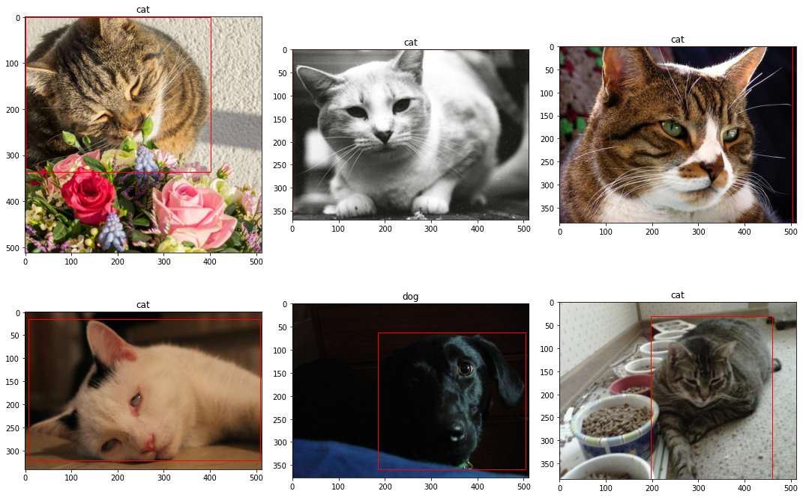
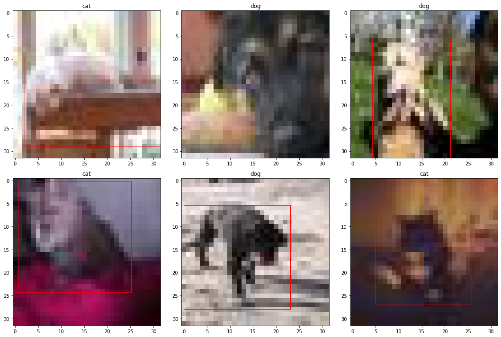
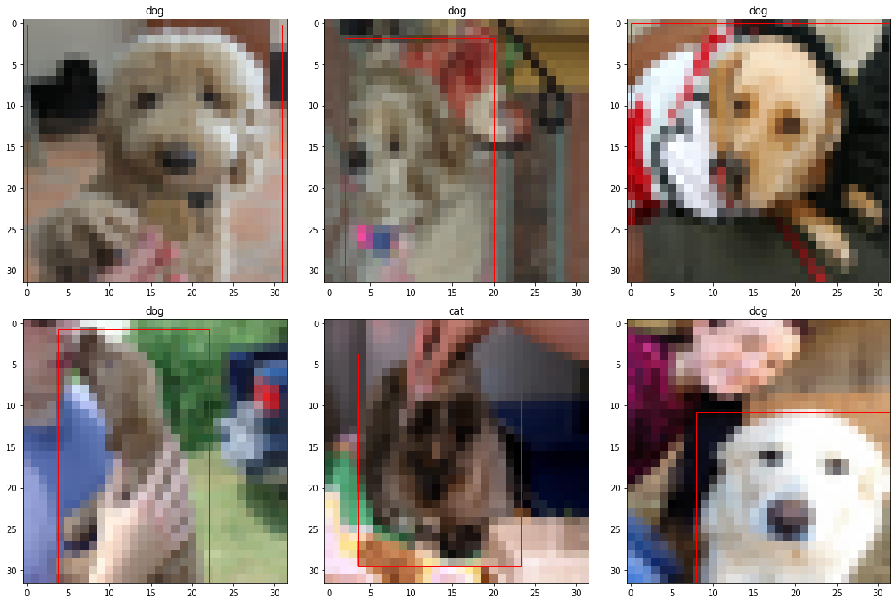
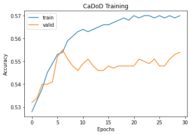
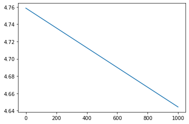

df.LabelName.value_counts().plot(kind='bar')
plt.title('Image Class Count')
plt.show()
Cats’ vs dogs object detection is one of the projects which can be done under computer vision. The main motto of this data set is to process the images of cats and dogs and predict their labels as cat or dog using few machine learning functional metrics (RMSE and MSE). These types of object detection problems come under computer vision. In this phase we will try to classify the images to predict whether it is cat or dog. Humans can easily say that the given image is a cat or a dog but for a machine it is difficult to predict it. This data set was firstly used in a Kaggle competition held in 2013. There are about 13,000 images of varying shapes and aspect ratios. They are all RGB pictures and have bounding box organizes put away in a .csv record. For this object classification and detection, we will be using convolution Neural Network (CNN) and using machine learning algorithms we will be able to classify these images for achieving this we will be using logistic regression to classify the images on top of that we will be implementing stochastic gradient descent and an adaptive learning rate. As we are using bounding boxes, the best way to predict bounding boxes is to use linear regression and again on top of that we will use gradient descent. We will be using SKLearn’s and Pytorch models to implement all the above functionalities.
The goal of this project is to create object identification pipelines for cats and dogs images using Python, OpenCV, SKLearn, and PyTorch. We import image catalog data, run exploratory data analysis on it, and derive metrics and baseline models from it. To make a detector, we'll need to preprocess the pictures so that they're all of the same form, then take their RGB intensity values and flatten them to from a 3D array to a 2D array. Then predict labels and bounding boxes, we'll pass this array through a linear classifier and a linear regressor.Build an image classification SKLearn model and a regression SKLearn model. Create a Logistic Regression model from scratch and extend the CXE loss function to CXE + MSE. Create a PyTorch baseline pipeline for object classification and localization.
Build a specific object classifier and detector using a convolutional neural network network.
###Cats vs Dogs Detector (CaDoD)
Traning Data - This contains about images of cats and dogs in jpg format. The images are of various resolution and are RGB scale.
Test Data - Test data contains images of cats and dogs.
####Data preprocessing
The image archive cadod.tar.gz is a subset Open Images V6. It contains a total of 12,966 images of dogs and cats.
Image bounding boxes are stored in the csv file cadod.csv. The following describes whats contained inside the csv.
The attributes have the following definitions:
from collections import Counter
import glob
import matplotlib.image as mpimg
import matplotlib.pyplot as plt
import numpy as np
import os
import pandas as pd
from PIL import Image
from sklearn.exceptions import ConvergenceWarning
from sklearn.linear_model import SGDClassifier, SGDRegressor
from sklearn.metrics import accuracy_score, mean_squared_error, roc_auc_score
from sklearn.model_selection import train_test_split
import tarfile
from tqdm.notebook import tqdm
import warnings
warnings.filterwarnings('ignore')
from google.colab import drive,files
drive.mount('/content/gdrive')
# Google collab dir: Account: kikarand@iu.edu
DATA_DIR="gdrive/MyDrive/data/"
extract_path = 'images/'
image_file_name = 'cadod.tar.gz'
bounding_box_file_name = 'cadod.csv'
image_path = os.path.join(DATA_DIR, image_file_name)
bounding_box_path = os.path.join(DATA_DIR, bounding_box_file_name)Mounted at /content/gdrive
extract_path = 'images/'
image_file_name = 'cadod.tar.gz'
bounding_box_file_name = 'cadod.csv'
image_path = os.path.join(DATA_DIR, image_file_name)
bounding_box_path = os.path.join(DATA_DIR, bounding_box_file_name)
resize_path = os.path.join(extract_path, "resized")!mkdir -p $resize_pathdef extract_tar(file, path):
"""
function to extract tar.gz files to specified location
Args:
file (str): path where the file is located
path (str): path where you want to extract
"""
with tarfile.open(file) as tar:
files_extracted = 0
for member in tqdm(tar.getmembers()):
if os.path.isfile(path + member.name[1:]):
continue
else:
tar.extract(member, path)
files_extracted += 1
tar.close()
if files_extracted < 3:
print('Files already exist')extract_tar(image_path, extract_path){"version_major":2,"version_minor":0,"model_id":"267ae04c024d4562975ac43a4db60996"}df = pd.read_csv(bounding_box_path)df.head()| ImageID | Source | LabelName | Confidence | XMin | XMax | YMin | YMax | IsOccluded | IsTruncated | ... | IsDepiction | IsInside | XClick1X | XClick2X | XClick3X | XClick4X | XClick1Y | XClick2Y | XClick3Y | XClick4Y | |
|---|---|---|---|---|---|---|---|---|---|---|---|---|---|---|---|---|---|---|---|---|---|
| 0 | 0000b9fcba019d36 | xclick | /m/0bt9lr | 1 | 0.165000 | 0.903750 | 0.268333 | 0.998333 | 1 | 1 | ... | 0 | 0 | 0.636250 | 0.903750 | 0.748750 | 0.165000 | 0.268333 | 0.506667 | 0.998333 | 0.661667 |
| 1 | 0000cb13febe0138 | xclick | /m/0bt9lr | 1 | 0.000000 | 0.651875 | 0.000000 | 0.999062 | 1 | 1 | ... | 0 | 0 | 0.312500 | 0.000000 | 0.317500 | 0.651875 | 0.000000 | 0.410882 | 0.999062 | 0.999062 |
| 2 | 0005a9520eb22c19 | xclick | /m/0bt9lr | 1 | 0.094167 | 0.611667 | 0.055626 | 0.998736 | 1 | 1 | ... | 0 | 0 | 0.487500 | 0.611667 | 0.243333 | 0.094167 | 0.055626 | 0.226296 | 0.998736 | 0.305942 |
| 3 | 0006303f02219b07 | xclick | /m/0bt9lr | 1 | 0.000000 | 0.999219 | 0.000000 | 0.998824 | 1 | 1 | ... | 0 | 0 | 0.508594 | 0.999219 | 0.000000 | 0.478906 | 0.000000 | 0.375294 | 0.720000 | 0.998824 |
| 4 | 00064d23bf997652 | xclick | /m/0bt9lr | 1 | 0.240938 | 0.906183 | 0.000000 | 0.694286 | 0 | 0 | ... | 0 | 0 | 0.678038 | 0.906183 | 0.240938 | 0.522388 | 0.000000 | 0.370000 | 0.424286 | 0.694286 |
5 rows × 21 columns
print(f"There are a total of {len(glob.glob1(extract_path, '*.jpg'))} images")There are a total of 12966 images
print(f"The total size is {os.path.getsize(extract_path)/1000} MB")The total size is 1105.92 MB
df.shape(12966, 21)Replace LabelName with human readable labels
df.LabelName.replace({'/m/01yrx':'cat', '/m/0bt9lr':'dog'}, inplace=True)df.LabelName.value_counts()dog 6855
cat 6111
Name: LabelName, dtype: int64df.LabelName.value_counts().plot(kind='bar')
plt.title('Image Class Count')
plt.show()
df.describe()| Confidence | XMin | XMax | YMin | YMax | IsOccluded | IsTruncated | IsGroupOf | IsDepiction | IsInside | XClick1X | XClick2X | XClick3X | XClick4X | XClick1Y | XClick2Y | XClick3Y | XClick4Y | |
|---|---|---|---|---|---|---|---|---|---|---|---|---|---|---|---|---|---|---|
| count | 12966.0 | 12966.000000 | 12966.000000 | 12966.000000 | 12966.000000 | 12966.000000 | 12966.000000 | 12966.000000 | 12966.000000 | 12966.000000 | 12966.000000 | 12966.000000 | 12966.000000 | 12966.000000 | 12966.000000 | 12966.000000 | 12966.000000 | 12966.000000 |
| mean | 1.0 | 0.099437 | 0.901750 | 0.088877 | 0.945022 | 0.464754 | 0.738470 | 0.013651 | 0.045427 | 0.001157 | 0.390356 | 0.424582 | 0.494143 | 0.506689 | 0.275434 | 0.447448 | 0.641749 | 0.582910 |
| std | 0.0 | 0.113023 | 0.111468 | 0.097345 | 0.081500 | 0.499239 | 0.440011 | 0.118019 | 0.209354 | 0.040229 | 0.358313 | 0.441751 | 0.405033 | 0.462281 | 0.415511 | 0.401580 | 0.448054 | 0.403454 |
| min | 1.0 | 0.000000 | 0.408125 | 0.000000 | 0.451389 | -1.000000 | -1.000000 | -1.000000 | -1.000000 | -1.000000 | -1.000000 | -1.000000 | -1.000000 | -1.000000 | -1.000000 | -1.000000 | -1.000000 | -1.000000 |
| 25% | 1.0 | 0.000000 | 0.830625 | 0.000000 | 0.910000 | 0.000000 | 0.000000 | 0.000000 | 0.000000 | 0.000000 | 0.221292 | 0.096875 | 0.285071 | 0.130000 | 0.024323 | 0.218333 | 0.405816 | 0.400000 |
| 50% | 1.0 | 0.061250 | 0.941682 | 0.059695 | 0.996875 | 0.000000 | 1.000000 | 0.000000 | 0.000000 | 0.000000 | 0.435625 | 0.415625 | 0.531919 | 0.623437 | 0.146319 | 0.480838 | 0.825000 | 0.646667 |
| 75% | 1.0 | 0.167500 | 0.998889 | 0.144853 | 0.999062 | 1.000000 | 1.000000 | 0.000000 | 0.000000 | 0.000000 | 0.609995 | 0.820000 | 0.787500 | 0.917529 | 0.561323 | 0.729069 | 0.998042 | 0.882500 |
| max | 1.0 | 0.592500 | 1.000000 | 0.587088 | 1.000000 | 1.000000 | 1.000000 | 1.000000 | 1.000000 | 1.000000 | 0.999375 | 0.999375 | 1.000000 | 0.999375 | 0.999375 | 0.999375 | 1.000000 | 0.999375 |
# plot random 6 images
fig, ax = plt.subplots(nrows=2, ncols=3, sharex=False, sharey=False,figsize=(15,10))
ax = ax.flatten()
for i,j in enumerate(np.random.choice(df.shape[0], size=6, replace=False)):
img = mpimg.imread(extract_path + df.ImageID.values[j] + '.jpg')
h, w = img.shape[:2]
coords = df.iloc[j,4:8]
ax[i].imshow(img)
ax[i].set_title(df.LabelName[j])
ax[i].add_patch(plt.Rectangle((coords[0]*w, coords[2]*h),
coords[1]*w-coords[0]*w, coords[3]*h-coords[2]*h,
edgecolor='red', facecolor='none'))
plt.tight_layout()
plt.show()
Go through all images and record the shape of the image in pixels and the memory size
img_shape = []
img_size = np.zeros((df.shape[0], 1))
for i,f in enumerate(tqdm(glob.glob1(extract_path, '*.jpg'))):
file = extract_path+'/'+f
img = Image.open(file)
img_shape.append(f"{img.size[0]}x{img.size[1]}")
img_size[i] += os.path.getsize(file){"version_major":2,"version_minor":0,"model_id":"e9a11205b96a481fb174a144be15a7c1"}Count all the different image shapes
img_shape_count = Counter(img_shape)# create a dataframe for image shapes
img_df = pd.DataFrame(set(img_shape_count.items()), columns=['img_shape','img_count'])img_df.shape(594, 2)There are a ton of different image shapes. Let's narrow this down by getting a sum of any image shape that has a cout less than 100 and put that in a category called other
img_df = img_df.append({'img_shape': 'other','img_count': img_df[img_df.img_count < 100].img_count.sum()},
ignore_index=True)Drop all image shapes
img_df = img_df[img_df.img_count >= 100]Check if the count sum matches the number of images
img_df.img_count.sum() == df.shape[0]TruePlot
img_df.sort_values('img_count', inplace=True)
img_df.plot(x='img_shape', y='img_count', kind='barh', figsize=(8,8), legend=False)
plt.title('Image Shape Counts')
plt.show()
# convert to megabytes
img_size = img_size / 1000fig, ax = plt.subplots(1, 2, figsize=(15,5))
fig.suptitle('Image Size Distribution')
ax[0].hist(img_size, bins=50)
ax[0].set_title('Histogram')
ax[0].set_xlabel('Image Size (MB)')
ax[1].boxplot(img_size, vert=False, widths=0.5)
ax[1].set_title('Boxplot')
ax[1].set_xlabel('Image Size (MB)')
ax[1].set_ylabel('Images')
plt.show()
import os
import glob
files = glob.glob(f'{resize_path}/*')
for f in files:
os.remove(f)%%time
# resize image and save, convert to numpy
img_arr = np.zeros((df.shape[0],32*32*3)) # initialize np.array
for i, f in enumerate(tqdm(df.ImageID)):
img = Image.open(extract_path+f+'.jpg')
img_resized = img.resize((32,32))
img_resized.save(os.path.join(resize_path,f"{f}.jpg"), "JPEG", optimize=True)
img_arr[i] = np.asarray(img_resized, dtype=np.uint8).flatten(){"version_major":2,"version_minor":0,"model_id":"7a35ffbc0bd04c04963d37e67016b505"}CPU times: user 1min, sys: 1.87 s, total: 1min 1s
Wall time: 1min 3s
print(len(img_arr[0]))3072
Plot the resized and filtered images
# plot random 6 images
fig, ax = plt.subplots(nrows=2, ncols=3, sharex=False, sharey=False,figsize=(15,10))
ax = ax.flatten()
for i,j in enumerate(np.random.choice(df.shape[0], size=6, replace=False)):
img = mpimg.imread(f"{resize_path}/"+df.ImageID.values[j]+'.jpg')
h, w = img.shape[:2]
coords = df.iloc[j,4:8]
ax[i].imshow(img)
ax[i].set_title(df.iloc[j,2])
ax[i].add_patch(plt.Rectangle((coords[0]*w, coords[2]*h),
coords[1]*w-coords[0]*w, coords[3]*h-coords[2]*h,
edgecolor='red', facecolor='none'))
plt.tight_layout()
plt.show()
# encode labels
df['Label'] = (df.LabelName == 'dog').astype(np.uint8)# plot first 6 images
fig, ax = plt.subplots(nrows=2, ncols=3, sharex=False, sharey=False,figsize=(15,10))
ax = ax.flatten()
for i,j in enumerate(df.index[5584:5590].to_numpy()):
img = mpimg.imread(extract_path + df.ImageID.values[j] + '.jpg')
h, w = img.shape[:2]
coords = df.iloc[j,4:8]
ax[i].imshow(img)
ax[i].set_title(df.LabelName[j])
ax[i].add_patch(plt.Rectangle((coords[0]*w, coords[2]*h),
coords[1]*w-coords[0]*w, coords[3]*h-coords[2]*h,
edgecolor='red', facecolor='none'))
plt.tight_layout()
plt.show()
mkdir -p \datanp.save('data/img.npy', img_arr.astype(np.uint8))
np.save('data/y_label.npy', df.Label.values)
np.save('data/y_bbox.npy', df[['XMin', 'YMin', 'XMax', 'YMax']].values.astype(np.float32))X = np.load('data/img.npy', allow_pickle=True)
y_label = np.load('data/y_label.npy', allow_pickle=True)
y_bbox = np.load('data/y_bbox.npy', allow_pickle=True)idx_to_label = {1:'dog', 0:'cat'} # encoderDouble check that it loaded correctly
# plot random 6 images
fig, ax = plt.subplots(nrows=2, ncols=3, sharex=False, sharey=False,figsize=(15,10))
ax = ax.flatten()
for i,j in enumerate(np.random.choice(X.shape[0], size=6, replace=False)):
coords = y_bbox[j] * 32
ax[i].imshow(X[j].reshape(32,32,3))
ax[i].set_title(idx_to_label[y_label[j]])
ax[i].add_patch(plt.Rectangle((coords[0], coords[1]),
coords[2]-coords[0], coords[3]-coords[1],
edgecolor='red', facecolor='none'))
plt.tight_layout()
plt.show()
Create training and testing sets
X_train, X_test, y_train, y_test_label = train_test_split(X, y_label, test_size=0.01, random_state=27)I'm choosing SGDClassifier because the data is large and I want to be able to perform stochastic gradient descent and also its ability to early stop. With this many parameters, a model can easily overfit so it's important to try and find the point of where it begins to overfit and stop for optimal results.
%%time
model = SGDClassifier(loss='log', n_jobs=-1, random_state=27, learning_rate='adaptive', eta0=1e-10,
early_stopping=True, validation_fraction=0.1, n_iter_no_change=3)
# 0.2 validation TODO
model.fit(X_train, y_train)CPU times: user 924 ms, sys: 416 ms, total: 1.34 s
Wall time: 930 ms
model.n_iter_4Did it stop too early? Let's retrain with a few more iterations to see. Note that SGDClassifier has a parameter called validation_fraction which splits a validation set from the training data to determine when it stops.
X_train, X_valid, y_train, y_valid = train_test_split(X_train, y_train, test_size=0.1, random_state=27)model2 = SGDClassifier(loss='log', n_jobs=-1, random_state=27, learning_rate='adaptive', eta0=1e-10)
epochs = 30
train_acc = np.zeros(epochs)
valid_acc = np.zeros(epochs)
for i in tqdm(range(epochs)):
model2.partial_fit(X_train, y_train, np.unique(y_train))
#log
train_acc[i] += np.round(accuracy_score(y_train, model2.predict(X_train)),3)
valid_acc[i] += np.round(accuracy_score(y_valid, model2.predict(X_valid)),3){"version_major":2,"version_minor":0,"model_id":"afb86137182d4aab80a93c663215be2a"}plt.plot(train_acc, label='train')
plt.plot(valid_acc, label='valid')
plt.title('CaDoD Training')
plt.xlabel('Epochs')
plt.ylabel('Accuracy')
plt.legend()
plt.show()
del model2expLog = pd.DataFrame(columns=["exp_name",
"Train Acc",
"Valid Acc",
"Test Acc",
"Train MSE",
"Valid MSE",
"Test MSE",
])exp_name = f"Baseline: Linear Model"
expLog.loc[0,:4] = [f"{exp_name}"] + list(np.round(
[accuracy_score(y_train, model.predict(X_train)),
accuracy_score(y_valid, model.predict(X_valid)),
accuracy_score(y_test_label, model.predict(X_test))],3))expLog| exp_name | Train Acc | Valid Acc | Test Acc | Train MSE | Valid MSE | Test MSE | |
|---|---|---|---|---|---|---|---|
| 0 | Baseline: Linear Model | 0.565 | 0.557 | 0.615 | NaN | NaN | NaN |
y_pred_label = model.predict(X_test)
y_pred_label_proba = model.predict_proba(X_test)
fig, ax = plt.subplots(nrows=2, ncols=5, sharex=False, sharey=False,figsize=(15,6))
ax = ax.flatten()
for i in range(10):
img = X_test[i].reshape(32,32,3)
ax[i].imshow(img)
ax[i].set_title("Ground Truth: {0} \n Prediction: {1} | {2:.2f}".format(idx_to_label[y_test_label[i]],
idx_to_label[y_pred_label[i]],
y_pred_label_proba[i][y_pred_label[i]]),
color=("green" if y_pred_label[i]==y_test_label[i] else "red"))
plt.tight_layout()
plt.show()
# imports
import warnings
warnings.simplefilter('ignore')
import numpy as np
import pandas as pd
import seaborn as sns
import matplotlib.pyplot as plt
%matplotlib inline
import re
from time import time
from scipy import stats
import json
from sklearn.base import BaseEstimator, TransformerMixin
from sklearn.model_selection import train_test_split
from sklearn.pipeline import Pipeline
from sklearn.impute import SimpleImputer
from sklearn.preprocessing import StandardScaler
from sklearn.preprocessing import OneHotEncoder
from sklearn.model_selection import ShuffleSplit
from sklearn.model_selection import cross_val_score
from sklearn.model_selection import GridSearchCV
from sklearn.linear_model import LogisticRegression
from sklearn.neighbors import KNeighborsClassifier
from sklearn.naive_bayes import GaussianNB
from sklearn.svm import SVC
from sklearn.linear_model import SGDClassifier
from sklearn.ensemble import RandomForestClassifierd1 = []
for i1 in img_arr:
d1.append(i1)
temp_image_data=[]
for i in range(0,len(df)):
temp_image_data.append(pd.Series(data = d1).iloc[i])len(temp_image_data)
len(img_arr[0])3072X_train, X_test, y_train, y_test = train_test_split(np.array(temp_image_data), y_bbox, test_size=0.01, random_state=27)
X_train, X_valid, y_train, y_valid = train_test_split(X_train, y_train, test_size=0.1, random_state=27)%%time
from sklearn.linear_model import LinearRegression
# TODO closed loop solution, could use Lasso Ridge
model = LinearRegression() #fill in
model.fit(X_train, y_train)
# might take a few minutes to train
#CPU times: user 1h 26min 40s, sys: 5min 53s, total: 1h 32min 34s
#Wall time: 17min 24sCPU times: user 35.9 s, sys: 1.11 s, total: 37 s
Wall time: 19.3 s
expLog.iloc[0,4:] = list(np.round([mean_squared_error(y_train, model.predict(X_train)),
mean_squared_error(y_valid, model.predict(X_valid)),
mean_squared_error(y_test, model.predict(X_test))],3))
expLog| exp_name | Train Acc | Valid Acc | Test Acc | Train MSE | Valid MSE | Test MSE | |
|---|---|---|---|---|---|---|---|
| 0 | Baseline: Linear Model | 0.565 | 0.557 | 0.615 | 0.007 | 0.015 | 0.015 |
# The below code is refered from Hw5
from sklearn.linear_model import Ridge
from sklearn.linear_model import Lasso
from sklearn.model_selection import GridSearchCV
np.random.seed(42)
estimators = [('ridge', Ridge()),
('lasso', Lasso())]
best_score = []
best_param = []
for estimator in estimators:
params = {estimator[0]+'__alpha':[.01, .05, .1, .5, 1, 5]}
# set up the pipeline using the standard scaler and estimator
# and grid search with pipeline, params,
# and correct scoring parameter (scoring parameter has to be a utility- where bigger is better
# such as neg_mean_squared_error, explained_variance etc. )
# for more information see the following -
# https://scikit-learn.org/stable/modules/model_evaluation.html#scoring-parameter
# Please use neg_mean_squared_error here.
#==================================================#
# Your code starts here #
#==================================================#
# TODO - change above to
pipe = Pipeline([('scalar', StandardScaler()), estimator])
gs = GridSearchCV(pipe, params, scoring='neg_mean_squared_error',cv=5)
#==================================================#
# Your code ends here #
#==================================================#
gs.fit(X_train, y_train)
best_score.append(gs.best_score_)
best_param.append(gs.best_params_)
best_idx = np.argmax(best_score)
print('Best model is:', estimators[best_idx][0], 'with parameter', best_param[best_idx])Best model is: lasso with parameter {'lasso__alpha': 0.01}
list(best_param[best_idx].values())[0]0.01#estimator = estimators[best_idx][0], list(best_param[best_idx].values())[0])
estimator = [Ridge, Lasso][best_idx]
param = list(gs.best_params_.values())[0]
print (param)
# set up the pipeline using the best estimator
pipe = Pipeline([('scalar', StandardScaler()), ('estimator', estimator(alpha=param))])
pipe.fit(X_train, y_train)0.01
Pipeline(steps=[('scalar', StandardScaler()), ('estimator', Lasso(alpha=0.01))])exp_name = f"Linear Regression(best regularization and alpha)"
expLog.loc[1,:4] = [f"{exp_name}"] +list(np.round([0,
0,
0],3))
expLog.loc[1,4:] = list(np.round([mean_squared_error(y_train, pipe.predict(X_train)),
mean_squared_error(y_valid, pipe.predict(X_valid)),
mean_squared_error(y_test, pipe.predict(X_test))],3))
expLog| exp_name | Train Acc | Valid Acc | Test Acc | Train MSE | Valid MSE | Test MSE | |
|---|---|---|---|---|---|---|---|
| 0 | Baseline: Linear Model | 0.565 | 0.557 | 0.615 | 0.007 | 0.015 | 0.015 |
| 1 | Linear Regression(best regularization and alpha) | 0 | 0 | 0 | 0.01 | 0.011 | 0.009 |
# Below code is refered from HW13, Hw7,Hw2
import numpy as np
from sklearn.model_selection import train_test_split, GridSearchCV, PredefinedSplit
X = np.load('data/img.npy', allow_pickle=True)
y_label = np.load('data/y_label.npy', allow_pickle=True)
y_bbox = np.load('data/y_bbox.npy', allow_pickle=True)
idx_to_label = {1:'dog', 0:'cat'}
X_train_class, X_test_class, y_train_label, y_test_label = train_test_split(X, y_label, stratify=y_label, shuffle=True, test_size=0.50, random_state=27)
np.random.seed(42)
X = X.astype(np.float32) / 255.
y_label=y_label.astype(int)
X_train_class, X_test_class, y_train_label, y_test_label = train_test_split(X, y_label, stratify=y_label, shuffle=True, test_size=0.20, random_state=27)
X_train_full = X_train_class
y_train_full = y_train_label
X_test_full = X_test_class
y_test_full = y_test_label
X_train, _, y_train, _ = train_test_split(X_train_class, y_train_label, stratify=y_train_label, train_size=0.1, random_state=42)
X_test, _, y_test, _ = train_test_split(X_test_class, y_test_label, stratify=y_test_label, train_size=0.1, random_state=42)# use full pipeline above to build full pipeline with predictor
np.random.seed(42)
full_pipeline_with_predictor = Pipeline([
("linear", LogisticRegression(random_state=42))
])
full_pipeline_with_predictor.fit(X_train, y_train)Pipeline(steps=[('linear', LogisticRegression(random_state=42))])start = time()
full_pipeline_with_predictor.fit(X_train, y_train)
np.random.seed(42)
# Set up cross validation scores
# Use ShuffleSplit() with 30 splits, 30% test_size
# and a random seed of 0
#==================================================#
# Your code starts here #
#==================================================#
cv3Splits = ShuffleSplit(n_splits=3, random_state=0, test_size=0.30, train_size=None)
logit_scores = cross_val_score(full_pipeline_with_predictor, X_train, y_train, cv=cv3Splits)
#==================================================#
# Your code ends here #
# Please don't add code below here #
#==================================================#
logit_score_train = logit_scores.mean()
train_time = np.round(time() - start, 4)
# Time and score test predictions
start = time()
logit_score_test = full_pipeline_with_predictor.score(X_test, y_test)
test_time = np.round(time() - start, 4)results = pd.DataFrame(columns=["Expname", "Train accuracy", "Test Accuracy"])
results.loc[0] = ["Baseline", np.round(100*logit_score_train,1), np.round(np.round(100*logit_score_test,1),3)]
results| Expname | Train accuracy | Test Accuracy | |
|---|---|---|---|
| 0 | Baseline | 54.0 | 55.2 |
from sklearn.tree import DecisionTreeClassifier
from sklearn.ensemble import RandomForestClassifier
# A Function to execute the grid search and record the results.
def ConductGridSearch(X_train, y_train, X_test, y_test, i=0, prefix='', n_jobs=-1,verbose=1):
# Create a list of classifiers for our grid search experiment
classifiers = [
('Logistic Regression', LogisticRegression(random_state=42)),
('K-Nearest Neighbors', KNeighborsClassifier()),
('Naive Bayes', GaussianNB()),
('Support Vector', SVC(random_state=42)),
('Stochastic GD', SGDClassifier(loss='log',
penalty='l2',
early_stopping=True,
max_iter=10000, tol=1e-5,
random_state=42)),
]
# Arrange grid search parameters for each classifier
params_grid = {
'Logistic Regression': {
'penalty': ('l1', 'l2'),
'tol': (0.0001, 0.00001, 0.0000001),
'C': (10, 1, 0.1, 0.01),
},
'K-Nearest Neighbors': {
'n_neighbors': (3, 5, 7, 8, 11),
'p': (1,2),
},
'Naive Bayes': {},
'Support Vector' : {
'kernel': ('rbf', 'poly'),
'degree': (1, 2, 3, 4, 5),
'C': (10, 1, 0.1, 0.01),
},
'Stochastic GD': {
'tol': (0.0001, 0.0000001),
'alpha': (0.1, 0.001, 0.0001),
}
}
for (name, classifier) in classifiers:
i += 1
# Print classifier and parameters
print('****** START',prefix, name,'*****')
parameters = params_grid[name]
print("Parameters:")
for p in sorted(parameters.keys()):
print("\t"+str(p)+": "+ str(parameters[p]))
# generate the pipeline
full_pipeline_with_predictor = Pipeline([
("predictor", classifier)
])
# Execute the grid search
params = {}
for p in parameters.keys():
pipe_key = 'predictor__'+str(p)
params[pipe_key] = parameters[p]
grid_search = GridSearchCV(full_pipeline_with_predictor, params, scoring='accuracy', cv=5,
n_jobs=n_jobs, verbose=verbose)
grid_search.fit(X_train, y_train)
# Best estimator score
best_train = np.round(100*grid_search.best_score_,1)
# Best estimator fitting time
start = time()
grid_search.best_estimator_.fit(X_train, y_train)
train_time = round(time() - start, 4)
# # plt.barh(['Age', 'Parch', 'SibSp','Fare','x0_C' ,'x0_Q' ,'x0_S' ,'x1_female', 'x1_male' ,'x2_1' ,'x2_2', 'x2_3'], grid_search.best_estimator_.named_steps["predictor"].feature_importances_)
# # plt.show()
# features = ['Age', 'Parch', 'SibSp','Fare','x0_C' ,'x0_Q' ,'x0_S' ,'x1_female', 'x1_male' ,'x2_1' ,'x2_2', 'x2_3']
# importances = grid_search.best_estimator_.named_steps["predictor"].feature_importances_
# indices = np.argsort(importances)
# plt.title('Feature Importances')
# plt.barh(range(len(indices)), importances[indices], color='b', align='center')
# plt.yticks(range(len(indices)), [features[i] for i in indices])
# plt.xlabel('Relative Importance')
# plt.grid()
# plt.show();
# Best estimator prediction time
start = time()
best_test_accuracy = np.round(100*grid_search.best_estimator_.score(X_test, y_test),1)
test_time = round(time() - start, 4)
# Generate 30 training accuracy scores with the best estimator and 30-split CV
# To calculate the best_train_accuracy use the pct() and mean() methods
#==================================================#
# Your code starts here #
#==================================================#
best_train_scores = cross_val_score(grid_search.best_estimator_, X_train, y_train, cv=cv3Splits)
best_train_accuracy = np.round(100*best_train_scores.mean(),1)
#==================================================#
# Your code ends here #
# Please don't add code below here #
#==================================================#
# Conduct t-test with baseline logit (control) and best estimator (experiment)
(t_stat, p_value) = stats.ttest_rel(logit_scores, best_train_scores)
# Collect the best parameters found by the grid search
print("Best Parameters:")
best_parameters = grid_search.best_estimator_.get_params()
param_dump = []
for param_name in sorted(params.keys()):
param_dump.append((param_name, best_parameters[param_name]))
print("\t"+str(param_name)+": " + str(best_parameters[param_name]))
print("****** FINISH",prefix,name," *****")
print("")
# Record the results
results.loc[i] = [prefix+name, best_train_accuracy, best_test_accuracy]ConductGridSearch(X_train, y_train, X_test, y_test, 0, "Best Model:", n_jobs=-1,verbose=1)****** START Best Model: Logistic Regression *****
Parameters:
C: (10, 1, 0.1, 0.01)
penalty: ('l1', 'l2')
tol: (0.0001, 1e-05, 1e-07)
Fitting 5 folds for each of 24 candidates, totalling 120 fits
Best Parameters:
predictor__C: 0.01
predictor__penalty: l2
predictor__tol: 0.0001
****** FINISH Best Model: Logistic Regression *****
****** START Best Model: K-Nearest Neighbors *****
Parameters:
n_neighbors: (3, 5, 7, 8, 11)
p: (1, 2)
Fitting 5 folds for each of 10 candidates, totalling 50 fits
Best Parameters:
predictor__n_neighbors: 11
predictor__p: 2
****** FINISH Best Model: K-Nearest Neighbors *****
****** START Best Model: Naive Bayes *****
Parameters:
Fitting 5 folds for each of 1 candidates, totalling 5 fits
Best Parameters:
****** FINISH Best Model: Naive Bayes *****
****** START Best Model: Support Vector *****
Parameters:
C: (10, 1, 0.1, 0.01)
degree: (1, 2, 3, 4, 5)
kernel: ('rbf', 'poly')
Fitting 5 folds for each of 40 candidates, totalling 200 fits
Best Parameters:
predictor__C: 1
predictor__degree: 1
predictor__kernel: poly
****** FINISH Best Model: Support Vector *****
****** START Best Model: Stochastic GD *****
Parameters:
alpha: (0.1, 0.001, 0.0001)
tol: (0.0001, 1e-07)
Fitting 5 folds for each of 6 candidates, totalling 30 fits
Best Parameters:
predictor__alpha: 0.1
predictor__tol: 0.0001
****** FINISH Best Model: Stochastic GD *****
results| Expname | Train accuracy | Test Accuracy | |
|---|---|---|---|
| 0 | Baseline | 54.0 | 55.2 |
| 1 | Best Model:Logistic Regression | 56.9 | 53.3 |
| 2 | Best Model:K-Nearest Neighbors | 53.0 | 56.0 |
| 3 | Best Model:Naive Bayes | 54.0 | 55.2 |
| 4 | Best Model:Support Vector | 56.1 | 52.9 |
| 5 | Best Model:Stochastic GD | 52.9 | 57.9 |
Cats and Dogs Classification is a popular ML problem, which can be solved using various techniques. We performed algorithms like logistic regression, KNN, Naive Baye’s, Support Vector, Stochastic Gradient Descent, to find out how well these algorithms can predict class for the cat and dog image set.
The main challenges was to work with a huge dataset. Hence we decreased image size from 128x128 to 32x32.
In phase 1, we have focused on the SKLearn Baseline models for logistic regression, SGDClassifier to classify the images into cats and dogs and Linear regression for making the bounding boxes around the cats and dogs inside the image. Well, Test Accuracy alone can’t tell how good an algorithm predicts the classes in general on various data set. We hope to experiment more by implementing homegrown logistic regression model and CNN in the next phase.
Implement a Homegrown Logistic Regression model. Extend the loss function from CXE to CXE + MSE, i.e., make it a complex multitask loss function the resulting model predicts the class and bounding box coordinates at the same time.
# Below lines of code is taken from HW7 and labsX_train_r, X_test_r, y_train_r, y_test_r = train_test_split(np.array(temp_image_data), y_bbox, test_size=0.01, random_state=27)
X_train_r, X_valid_r, y_train_r, y_valid_r = train_test_split(X_train_r, y_train_r, test_size=0.1, random_state=27)X_train_c, X_test_c, y_train_c, y_test_c = train_test_split(np.array(temp_image_data), y_label, test_size=0.01, random_state=27)
X_train_c, X_valid_c, y_train_c, y_valid_c = train_test_split(X_train_c, y_train_c, test_size=0.1, random_state=27)# scale data for classification
np.random.seed(42)
if np.max(X_train_c) > 4.:
X_train_c = X_train_c.astype(np.float32) / 255.
if np.max(X_valid_c) > 4.:
X_valid_c = X_valid_c.astype(np.float32) / 255.
y_train_c=y_train_c.astype(int)
y_valid_c=y_valid_c.astype(int)# scale data for reg
np.random.seed(42)
if np.max(X_train_r) > 4.:
X_train_r = X_train_r.astype(np.float32) / 255.
if np.max(X_valid_r) > 4.:
X_valid_r = X_valid_r.astype(np.float32) / 255.
y_train_r=y_train_r.astype(int)
y_valid_r=y_valid_r.astype(int)
main_loss = [0 for i in range(1000)]
main_loss_1 = [0 for i in range(1000)]class LogisticRegressionHomegrown1(object):
def __init__(self):
"""
Constructor for the homgrown Logistic Regression
Args:
None
Return:
None
"""
self.coef_ = None # weight vector
self.intercept_ = None # bias term
self._theta = None # augmented weight vector, i.e., bias + weights
# this allows to treat all decision variables homogeneously
self.history = {"cxe+mse": [],
"mse": [],
"cxe":[],
"val_cxe+mse": [],
"val_cxe":[],
"val_mse":[]}
def _grad(self, X, y):
"""
Calculates the gradient of the Logistic Regression
objective function
Args:
X(ndarray): train objects
y(ndarray): answers for train objects
Return:
grad(ndarray): gradient
"""
# number of training examples
n = X.shape[0]
# get scores for each class and example
# 2D matrix
scores = self._predict_raw(X)
gradient = np.dot(X.T, scores) / n
return gradient
def _gd(self, X, y, max_iter, alpha, X_val, y_val):
"""
Runs Full GD and logs error, weigths, gradient at every step
Args:
X(ndarray): train objects
y(ndarray): answers for train objects
max_iter(int): number of weight updates
alpha(floar): step size in direction of gradient
Return:
None
"""
for i in range(max_iter):
metrics = self.score(X, y)
metrics["cxe+mse"] = metrics["cxe+mse"]+np.round(np.mean(main_loss[i]),decimals=10)
metrics["cxe"] = metrics["cxe"]+np.round(np.mean(main_loss[i]),decimals=10)
print("Epoch: ",i+1,"- ", metrics)
self.history["cxe+mse"].append(metrics["cxe+mse"])
self.history["cxe"].append(metrics["cxe"])
self.history["mse"].append(metrics["mse"])
if X_val is not None:
metrics_val = self.score(X_val, y_val)
self.history["val_cxe+mse"].append(metrics_val["cxe+mse"])
self.history["val_cxe"].append(metrics_val["cxe"])
self.history["val_mse"].append(metrics_val["mse"])
# calculate gradient
grad = self._grad(X, y)
# do gradient step
self._theta -= alpha * grad
def fit(self, X, y, max_iter=1000, alpha=0.05, val_data=None):
"""
Public API to fit Logistic regression model
Args:
X(ndarray): train objects
y(ndarray): answers for train objects
max_iter(int): number of weight updates
alpha(floar): step size in direction of gradient
Return:
None
"""
# Augment the data with the bias term.
# So we can treat the the input variables and the bias term homogeneously
# from a vectorization perspective
X = np.c_[np.ones(X.shape[0]), X]
if val_data is not None:
X_val, y_val = val_data
X_val = np.c_[np.ones(X_val.shape[0]), X_val]
else:
X_val = None
y_val = None
# initialize if the first step
if self._theta is None:
self._theta = np.random.rand(X.shape[1], 4)
# do full gradient descent
self._gd(X, y, max_iter, alpha, X_val, y_val)
# get final weigths and bias
self.intercept_ = self._theta[0]
self.coef_ = self._theta[1:]
def score(self, X, y):
"""
Computes logloss and accuracy for (X, y)
Args:
X(ndarray): objects
y(ndarray): answers for objects
Return:
metrics(dict): python dictionary which
contains two fields: for accuracy
and for objective function
"""
scores = self._predict_raw(X)
metrics = {"cxe+mse": np.round(mean_squared_error(y, scores),decimals=10), "cxe": 0,"mse":np.round(mean_squared_error(y, scores),decimals=10)}
return metrics
def _predict_raw(self, X):
"""
Computes scores for each class and each object in X
Args:
X(ndarray): objects
Return:
scores(ndarray): scores for each class and object
"""
# check whether X has appended bias feature or not
if X.shape[1] == len(self._theta):
scores = np.dot(X, self._theta)
else:
scores = np.dot(X, self.coef_) + self.intercept_
return scores
def predict(self, X):
"""
Predicts class for each object in X
Args:
X(ndarray): objects
Return:
pred(ndarray): class for each object
"""
# get scores for each class
scores = self._predict_raw(X)
# choose class with maximum score
pred = np.argmax(scores, axis=1)
return predclass LogisticRegressionHomegrown(object):
def __init__(self):
"""
Constructor for the homgrown Logistic Regression
Args:
None
Return:
None
"""
self.coef_ = None # weight vector
self.intercept_ = None # bias term
self._theta = None # augmented weight vector, i.e., bias + weights
# this allows to treat all decision variables homogeneously
self.history = {"cost": [],
"acc": [],
"val_cost":[],
"val_acc": []}
def _grad(self, X, y):
"""
Calculates the gradient of the Logistic Regression
objective function
Args:
X(ndarray): train objects
y(ndarray): answers for train objects
Return:
grad(ndarray): gradient
"""
# number of training examples
n = X.shape[0]
# get scores for each class and example
# 2D matrix
scores = self._predict_raw(X)
# transform scores to probabilities
# softmax
probs = 1.0/(1 + np.exp(-scores))
#probs = exp_scores / np.sum(exp_scores, axis=1, keepdims=True)
# error
probs[range(n),y] -= 1
# (1/m)*np.dot(X.T, (scores - y))
# gradient
gradient = np.dot(X.T, probs) / n
return gradient
def _gd(self, X, y, max_iter, alpha, X_val, y_val):
"""
Runs Full GD and logs error, weigths, gradient at every step
Args:
X(ndarray): train objects
y(ndarray): answers for train objects
max_iter(int): number of weight updates
alpha(floar): step size in direction of gradient
Return:
None
"""
for i in range(max_iter):
metrics = self.score(X, y)
print("Epoch: ",i+1,"- ", metrics)
main_loss[i] = metrics["cost"]
main_loss_1[i]= metrics["acc"]
self.history["cost"].append(metrics["cost"])
self.history["acc"].append(metrics["acc"])
if X_val is not None:
metrics_val = self.score(X_val, y_val)
self.history["val_cost"].append(metrics_val["cost"])
self.history["val_acc"].append(metrics_val["acc"])
# calculate gradient
grad = self._grad(X, y)
# do gradient step
self._theta -= alpha * grad
print(len(main_loss))
def fit(self, X, y, max_iter=1000, alpha=0.05, val_data=None):
"""
Public API to fit Logistic regression model
Args:
X(ndarray): train objects
y(ndarray): answers for train objects
max_iter(int): number of weight updates
alpha(floar): step size in direction of gradient
Return:
None
"""
# Augment the data with the bias term.
# So we can treat the the input variables and the bias term homogeneously
# from a vectorization perspective
X = np.c_[np.ones(X.shape[0]), X]
if val_data is not None:
X_val, y_val = val_data
X_val = np.c_[np.ones(X_val.shape[0]), X_val]
else:
X_val = None
y_val = None
# initialize if the first step
if self._theta is None:
self._theta = np.random.rand(X.shape[1], len(np.unique(y)))
# do full gradient descent
self._gd(X, y, max_iter, alpha, X_val, y_val)
# get final weigths and bias
self.intercept_ = self._theta[0]
self.coef_ = self._theta[1:]
def score(self, X, y):
"""
Computes logloss and accuracy for (X, y)
Args:
X(ndarray): objects
y(ndarray): answers for objects
Return:
metrics(dict): python dictionary which
contains two fields: for accuracy
and for objective function
"""
# number of training samples
n = X.shape[0]
metrics = {}
# get scores
scores = self._predict_raw(X)
# trasnform scores to probabilities
exp_scores = np.exp(scores)
exp = 2.73
probs = 1.0/(1 + exp**(-scores))
# logloss per each example
corect_logprobs = probs[range(n),y]
# print(corect_logprobs)
# total mean logloss
data_loss = np.sum(corect_logprobs) / n
# predictions
pred = np.argmax(scores, axis=1)
# accuracy
acc = accuracy_score(y, pred)
loss = 0
for each in corect_logprobs:
if (each!=1 and each!=0):
loss +=y * (-np.log (each)) + (1-y) * (-np.log (1-each))
# final metrics
metrics = {"acc": acc, "cost": np.round(np.mean(loss),decimals=10)}
return metrics
def _predict_raw(self, X):
"""
Computes scores for each class and each object in X
Args:
X(ndarray): objects
Return:
scores(ndarray): scores for each class and object
"""
# check whether X has appended bias feature or not
if X.shape[1] == len(self._theta):
scores = np.dot(X, self._theta)
else:
scores = np.dot(X, self.coef_) + self.intercept_
return scores
def predict(self, X):
"""
Predicts class for each object in X
Args:
X(ndarray): objects
Return:
pred(ndarray): class for each object
"""
# get scores for each class
scores = self._predict_raw(X)
# choose class with maximum score
pred = np.argmax(scores, axis=1)
return predimport warnings
warnings.filterwarnings('ignore')
# reference - HW05 - Basic linear regression from scratch
class LinearRegressionHomegrown(object):
def __init__(self):
"""
Constructor for the homgrown Linear Regression
Args:
None
Return:
None
"""
self.coef_reg = None # weight vector
self.intercept_reg = None # bias term
self.thetaReg = None # augmented weight vector, i.e., bias + weights
# this allows to treat all decision variables homogeneously
self.history = {"MSE_train": [],
"Reg_train_MSE":[],
"val_MSE":[],
"Reg_val_MSE":[]}
def gradient(self, X, y):
# total training examples
n = X.shape[0]
# scores for each class and examples
scores = self._predict_raw(X)
gradient = np.dot(X.T, scores) / n
return gradient
def gradientDescent(self, X_r, y_r, max_iter, alpha, X_val_r, y_val_r):
"""
Runs Full GD and logs error, weigths, gradient at every step
Args:
X(ndarray): train objects
y(ndarray): answers for train objects
max_iter(int): number of weight updates
alpha(floar): step size in direction of gradient
Return:
None
"""
for i in range(max_iter):
metrics = self.score(X_r, y_r)
print("Epoch: ",i+1,"- ", metrics)
self.history["Reg_train_MSE"].append(metrics["Reg_MSE"])
if X_val_r is not None:
metrics_val = self.score(X_val_r, y_val_r)
self.history["Reg_val_MSE"].append(metrics_val["Reg_MSE"])
# calculate gradient for regression
gradient = self.gradient(X_r, y_r)
# do gradient descent step
self.thetaReg -= alpha * gradient
def fit(self, X_r,y_r, max_iter=1000, alpha=0.05, val_data_r=None):
"""
Public API to fit Logistic regression model
Args:
X(ndarray): train objects
y(ndarray): answers for train objects
max_iter(int): number of weight updates
alpha(floar): step size in direction of gradient
Return:
None
"""
# Augment the data with the bias term.
# to treat the the input variables and the bias term homogeneously(vectorization perspective)
X_r = np.c_[np.ones(X_r.shape[0]), X_r]
if val_data_r is not None:
X_val_r, y_val_r = val_data_r
X_val_r = np.c_[np.ones(X_val_r.shape[0]), X_val_r]
else:
X_val_r = None
y_val_r = None
# initialize weights
if self.thetaReg is None:
self.thetaReg = np.random.rand(X_r.shape[1], 4)
# do full gradient descent
self.gradientDescent(X_r, y_r, max_iter, alpha, X_val_r, y_val_r)
# get final weigths and bias
self.intercept_reg = self.thetaReg[0]
self.coef_reg = self.thetaReg[1:]
def score(self, X_r, y_r):
# number of training samples
n1 = X_r.shape[0]
# get scores
scores_r = self._predict_raw(X_r)
pred_r=scores_r
metrics = {"Reg_MSE": np.round(mean_squared_error(y_r, pred_r),decimals=10)}
return metrics
def _predict_raw(self, X):
"""
Computes scores for each class and each object in X
Args:
X(ndarray): objects
Return:
scores(ndarray): scores for each class and object
"""
# append bias feature if not appended already
if X.shape[1] == len(self.thetaReg):
scores = np.dot(X, self.thetaReg)
else:
scores = np.dot(X, self.coef_reg) + self.intercept_reg
return scores
model_lr_homegrown = LogisticRegressionHomegrown()
model_lr_homegrown.fit(X_train_c, y_train_c, max_iter=1000, alpha=0.00005,val_data=[X_valid_c,y_valid_c])Epoch: 1 - {'acc': 0.5335006925207756, 'cost': 4.7586433006}
Epoch: 2 - {'acc': 0.5335006925207756, 'cost': 4.7585288479}
Epoch: 3 - {'acc': 0.5335872576177285, 'cost': 4.7584143951}
Epoch: 4 - {'acc': 0.5335872576177285, 'cost': 4.7582999423}
Epoch: 5 - {'acc': 0.5335872576177285, 'cost': 4.7581854895}
Epoch: 6 - {'acc': 0.5335872576177285, 'cost': 4.7580710368}
Epoch: 7 - {'acc': 0.5335872576177285, 'cost': 4.757956584}
Epoch: 8 - {'acc': 0.5335872576177285, 'cost': 4.7578421312}
Epoch: 9 - {'acc': 0.5336738227146814, 'cost': 4.7577276785}
Epoch: 10 - {'acc': 0.5336738227146814, 'cost': 4.7576132257}
Epoch: 11 - {'acc': 0.5336738227146814, 'cost': 4.757498773}
Epoch: 12 - {'acc': 0.5336738227146814, 'cost': 4.7573843202}
Epoch: 13 - {'acc': 0.5336738227146814, 'cost': 4.7572698675}
Epoch: 14 - {'acc': 0.5336738227146814, 'cost': 4.7571554147}
Epoch: 15 - {'acc': 0.5336738227146814, 'cost': 4.757040962}
Epoch: 16 - {'acc': 0.5336738227146814, 'cost': 4.7569265092}
Epoch: 17 - {'acc': 0.5335872576177285, 'cost': 4.7568120565}
Epoch: 18 - {'acc': 0.5335872576177285, 'cost': 4.7566976038}
Epoch: 19 - {'acc': 0.5335872576177285, 'cost': 4.756583151}
Epoch: 20 - {'acc': 0.5335872576177285, 'cost': 4.7564686983}
Epoch: 21 - {'acc': 0.5335872576177285, 'cost': 4.7563542456}
Epoch: 22 - {'acc': 0.5335872576177285, 'cost': 4.7562397928}
Epoch: 23 - {'acc': 0.5335006925207756, 'cost': 4.7561253401}
Epoch: 24 - {'acc': 0.5335006925207756, 'cost': 4.7560108874}
Epoch: 25 - {'acc': 0.5335006925207756, 'cost': 4.7558964347}
Epoch: 26 - {'acc': 0.5335006925207756, 'cost': 4.7557819819}
Epoch: 27 - {'acc': 0.5335006925207756, 'cost': 4.7556675292}
Epoch: 28 - {'acc': 0.5335006925207756, 'cost': 4.7555530765}
Epoch: 29 - {'acc': 0.5335872576177285, 'cost': 4.7554386238}
Epoch: 30 - {'acc': 0.5335872576177285, 'cost': 4.7553241711}
Epoch: 31 - {'acc': 0.5335872576177285, 'cost': 4.7552097184}
Epoch: 32 - {'acc': 0.5335872576177285, 'cost': 4.7550952657}
Epoch: 33 - {'acc': 0.5335872576177285, 'cost': 4.754980813}
Epoch: 34 - {'acc': 0.5335006925207756, 'cost': 4.7548663603}
Epoch: 35 - {'acc': 0.5335006925207756, 'cost': 4.7547519076}
Epoch: 36 - {'acc': 0.5335006925207756, 'cost': 4.7546374549}
Epoch: 37 - {'acc': 0.5335006925207756, 'cost': 4.7545230022}
Epoch: 38 - {'acc': 0.5335006925207756, 'cost': 4.7544085495}
Epoch: 39 - {'acc': 0.5335006925207756, 'cost': 4.7542940968}
Epoch: 40 - {'acc': 0.5335006925207756, 'cost': 4.7541796442}
Epoch: 41 - {'acc': 0.5335006925207756, 'cost': 4.7540651915}
Epoch: 42 - {'acc': 0.5335006925207756, 'cost': 4.7539507388}
Epoch: 43 - {'acc': 0.5335006925207756, 'cost': 4.7538362861}
Epoch: 44 - {'acc': 0.5335006925207756, 'cost': 4.7537218335}
Epoch: 45 - {'acc': 0.5335006925207756, 'cost': 4.7536073808}
Epoch: 46 - {'acc': 0.5335006925207756, 'cost': 4.7534929281}
Epoch: 47 - {'acc': 0.5335872576177285, 'cost': 4.7533784755}
Epoch: 48 - {'acc': 0.5335872576177285, 'cost': 4.7532640228}
Epoch: 49 - {'acc': 0.5335872576177285, 'cost': 4.7531495701}
Epoch: 50 - {'acc': 0.5336738227146814, 'cost': 4.7530351175}
Epoch: 51 - {'acc': 0.5336738227146814, 'cost': 4.7529206648}
Epoch: 52 - {'acc': 0.5336738227146814, 'cost': 4.7528062122}
Epoch: 53 - {'acc': 0.5337603878116344, 'cost': 4.7526917595}
Epoch: 54 - {'acc': 0.5337603878116344, 'cost': 4.7525773069}
Epoch: 55 - {'acc': 0.5337603878116344, 'cost': 4.7524628542}
Epoch: 56 - {'acc': 0.5337603878116344, 'cost': 4.7523484016}
Epoch: 57 - {'acc': 0.5337603878116344, 'cost': 4.7522339489}
Epoch: 58 - {'acc': 0.5338469529085873, 'cost': 4.7521194963}
Epoch: 59 - {'acc': 0.5338469529085873, 'cost': 4.7520050437}
Epoch: 60 - {'acc': 0.5338469529085873, 'cost': 4.751890591}
Epoch: 61 - {'acc': 0.5338469529085873, 'cost': 4.7517761384}
Epoch: 62 - {'acc': 0.5338469529085873, 'cost': 4.7516616858}
Epoch: 63 - {'acc': 0.5338469529085873, 'cost': 4.7515472332}
Epoch: 64 - {'acc': 0.5339335180055401, 'cost': 4.7514327805}
Epoch: 65 - {'acc': 0.5339335180055401, 'cost': 4.7513183279}
Epoch: 66 - {'acc': 0.534020083102493, 'cost': 4.7512038753}
Epoch: 67 - {'acc': 0.534020083102493, 'cost': 4.7510894227}
Epoch: 68 - {'acc': 0.534106648199446, 'cost': 4.7509749701}
Epoch: 69 - {'acc': 0.534106648199446, 'cost': 4.7508605175}
Epoch: 70 - {'acc': 0.534106648199446, 'cost': 4.7507460649}
Epoch: 71 - {'acc': 0.534106648199446, 'cost': 4.7506316123}
Epoch: 72 - {'acc': 0.534106648199446, 'cost': 4.7505171596}
Epoch: 73 - {'acc': 0.534106648199446, 'cost': 4.750402707}
Epoch: 74 - {'acc': 0.534106648199446, 'cost': 4.7502882545}
Epoch: 75 - {'acc': 0.534106648199446, 'cost': 4.7501738019}
Epoch: 76 - {'acc': 0.534106648199446, 'cost': 4.7500593493}
Epoch: 77 - {'acc': 0.534106648199446, 'cost': 4.7499448967}
Epoch: 78 - {'acc': 0.534106648199446, 'cost': 4.7498304441}
Epoch: 79 - {'acc': 0.534106648199446, 'cost': 4.7497159915}
Epoch: 80 - {'acc': 0.5341932132963989, 'cost': 4.7496015389}
Epoch: 81 - {'acc': 0.5341932132963989, 'cost': 4.7494870863}
Epoch: 82 - {'acc': 0.534106648199446, 'cost': 4.7493726338}
Epoch: 83 - {'acc': 0.534106648199446, 'cost': 4.7492581812}
Epoch: 84 - {'acc': 0.534106648199446, 'cost': 4.7491437286}
Epoch: 85 - {'acc': 0.534106648199446, 'cost': 4.7490292761}
Epoch: 86 - {'acc': 0.534106648199446, 'cost': 4.7489148235}
Epoch: 87 - {'acc': 0.5341932132963989, 'cost': 4.7488003709}
Epoch: 88 - {'acc': 0.5342797783933518, 'cost': 4.7486859184}
Epoch: 89 - {'acc': 0.5342797783933518, 'cost': 4.7485714658}
Epoch: 90 - {'acc': 0.5342797783933518, 'cost': 4.7484570132}
Epoch: 91 - {'acc': 0.5342797783933518, 'cost': 4.7483425607}
Epoch: 92 - {'acc': 0.5341932132963989, 'cost': 4.7482281081}
Epoch: 93 - {'acc': 0.5342797783933518, 'cost': 4.7481136556}
Epoch: 94 - {'acc': 0.5342797783933518, 'cost': 4.747999203}
Epoch: 95 - {'acc': 0.5342797783933518, 'cost': 4.7478847505}
Epoch: 96 - {'acc': 0.5342797783933518, 'cost': 4.747770298}
Epoch: 97 - {'acc': 0.5342797783933518, 'cost': 4.7476558454}
Epoch: 98 - {'acc': 0.5343663434903048, 'cost': 4.7475413929}
Epoch: 99 - {'acc': 0.5342797783933518, 'cost': 4.7474269404}
Epoch: 100 - {'acc': 0.5342797783933518, 'cost': 4.7473124878}
Epoch: 101 - {'acc': 0.5342797783933518, 'cost': 4.7471980353}
Epoch: 102 - {'acc': 0.5343663434903048, 'cost': 4.7470835828}
Epoch: 103 - {'acc': 0.5343663434903048, 'cost': 4.7469691302}
Epoch: 104 - {'acc': 0.5343663434903048, 'cost': 4.7468546777}
Epoch: 105 - {'acc': 0.5343663434903048, 'cost': 4.7467402252}
Epoch: 106 - {'acc': 0.5342797783933518, 'cost': 4.7466257727}
Epoch: 107 - {'acc': 0.5342797783933518, 'cost': 4.7465113202}
Epoch: 108 - {'acc': 0.534106648199446, 'cost': 4.7463968677}
Epoch: 109 - {'acc': 0.534106648199446, 'cost': 4.7462824152}
Epoch: 110 - {'acc': 0.534106648199446, 'cost': 4.7461679626}
Epoch: 111 - {'acc': 0.534106648199446, 'cost': 4.7460535101}
Epoch: 112 - {'acc': 0.534106648199446, 'cost': 4.7459390576}
Epoch: 113 - {'acc': 0.534106648199446, 'cost': 4.7458246051}
Epoch: 114 - {'acc': 0.534106648199446, 'cost': 4.7457101526}
Epoch: 115 - {'acc': 0.534106648199446, 'cost': 4.7455957002}
Epoch: 116 - {'acc': 0.534106648199446, 'cost': 4.7454812477}
Epoch: 117 - {'acc': 0.534106648199446, 'cost': 4.7453667952}
Epoch: 118 - {'acc': 0.534106648199446, 'cost': 4.7452523427}
Epoch: 119 - {'acc': 0.534106648199446, 'cost': 4.7451378902}
Epoch: 120 - {'acc': 0.534106648199446, 'cost': 4.7450234377}
Epoch: 121 - {'acc': 0.534106648199446, 'cost': 4.7449089853}
Epoch: 122 - {'acc': 0.534106648199446, 'cost': 4.7447945328}
Epoch: 123 - {'acc': 0.534106648199446, 'cost': 4.7446800803}
Epoch: 124 - {'acc': 0.534106648199446, 'cost': 4.7445656278}
Epoch: 125 - {'acc': 0.534106648199446, 'cost': 4.7444511754}
Epoch: 126 - {'acc': 0.534106648199446, 'cost': 4.7443367229}
Epoch: 127 - {'acc': 0.534106648199446, 'cost': 4.7442222704}
Epoch: 128 - {'acc': 0.534106648199446, 'cost': 4.744107818}
Epoch: 129 - {'acc': 0.534020083102493, 'cost': 4.7439933655}
Epoch: 130 - {'acc': 0.534020083102493, 'cost': 4.7438789131}
Epoch: 131 - {'acc': 0.534020083102493, 'cost': 4.7437644606}
Epoch: 132 - {'acc': 0.534020083102493, 'cost': 4.7436500082}
Epoch: 133 - {'acc': 0.534020083102493, 'cost': 4.7435355557}
Epoch: 134 - {'acc': 0.534020083102493, 'cost': 4.7434211033}
Epoch: 135 - {'acc': 0.534106648199446, 'cost': 4.7433066508}
Epoch: 136 - {'acc': 0.534106648199446, 'cost': 4.7431921984}
Epoch: 137 - {'acc': 0.534106648199446, 'cost': 4.743077746}
Epoch: 138 - {'acc': 0.534106648199446, 'cost': 4.7429632935}
Epoch: 139 - {'acc': 0.534106648199446, 'cost': 4.7428488411}
Epoch: 140 - {'acc': 0.534106648199446, 'cost': 4.7427343887}
Epoch: 141 - {'acc': 0.534106648199446, 'cost': 4.7426199362}
Epoch: 142 - {'acc': 0.534106648199446, 'cost': 4.7425054838}
Epoch: 143 - {'acc': 0.534106648199446, 'cost': 4.7423910314}
Epoch: 144 - {'acc': 0.534020083102493, 'cost': 4.742276579}
Epoch: 145 - {'acc': 0.534020083102493, 'cost': 4.7421621266}
Epoch: 146 - {'acc': 0.534020083102493, 'cost': 4.7420476741}
Epoch: 147 - {'acc': 0.534020083102493, 'cost': 4.7419332217}
Epoch: 148 - {'acc': 0.534020083102493, 'cost': 4.7418187693}
Epoch: 149 - {'acc': 0.534020083102493, 'cost': 4.7417043169}
Epoch: 150 - {'acc': 0.534020083102493, 'cost': 4.7415898645}
Epoch: 151 - {'acc': 0.534020083102493, 'cost': 4.7414754121}
Epoch: 152 - {'acc': 0.5339335180055401, 'cost': 4.7413609597}
Epoch: 153 - {'acc': 0.534020083102493, 'cost': 4.7412465073}
Epoch: 154 - {'acc': 0.534020083102493, 'cost': 4.7411320549}
Epoch: 155 - {'acc': 0.534020083102493, 'cost': 4.7410176025}
Epoch: 156 - {'acc': 0.534020083102493, 'cost': 4.7409031502}
Epoch: 157 - {'acc': 0.5339335180055401, 'cost': 4.7407886978}
Epoch: 158 - {'acc': 0.5339335180055401, 'cost': 4.7406742454}
Epoch: 159 - {'acc': 0.5339335180055401, 'cost': 4.740559793}
Epoch: 160 - {'acc': 0.5339335180055401, 'cost': 4.7404453406}
Epoch: 161 - {'acc': 0.5339335180055401, 'cost': 4.7403308883}
Epoch: 162 - {'acc': 0.5339335180055401, 'cost': 4.7402164359}
Epoch: 163 - {'acc': 0.5339335180055401, 'cost': 4.7401019835}
Epoch: 164 - {'acc': 0.5339335180055401, 'cost': 4.7399875311}
Epoch: 165 - {'acc': 0.5339335180055401, 'cost': 4.7398730788}
Epoch: 166 - {'acc': 0.5338469529085873, 'cost': 4.7397586264}
Epoch: 167 - {'acc': 0.5338469529085873, 'cost': 4.7396441741}
Epoch: 168 - {'acc': 0.5338469529085873, 'cost': 4.7395297217}
Epoch: 169 - {'acc': 0.5338469529085873, 'cost': 4.7394152694}
Epoch: 170 - {'acc': 0.5338469529085873, 'cost': 4.739300817}
Epoch: 171 - {'acc': 0.5338469529085873, 'cost': 4.7391863647}
Epoch: 172 - {'acc': 0.5338469529085873, 'cost': 4.7390719123}
Epoch: 173 - {'acc': 0.5338469529085873, 'cost': 4.73895746}
Epoch: 174 - {'acc': 0.5337603878116344, 'cost': 4.7388430076}
Epoch: 175 - {'acc': 0.5337603878116344, 'cost': 4.7387285553}
Epoch: 176 - {'acc': 0.5337603878116344, 'cost': 4.7386141029}
Epoch: 177 - {'acc': 0.5337603878116344, 'cost': 4.7384996506}
Epoch: 178 - {'acc': 0.5336738227146814, 'cost': 4.7383851983}
Epoch: 179 - {'acc': 0.5336738227146814, 'cost': 4.738270746}
Epoch: 180 - {'acc': 0.5336738227146814, 'cost': 4.7381562936}
Epoch: 181 - {'acc': 0.5338469529085873, 'cost': 4.7380418413}
Epoch: 182 - {'acc': 0.5337603878116344, 'cost': 4.737927389}
Epoch: 183 - {'acc': 0.5336738227146814, 'cost': 4.7378129367}
Epoch: 184 - {'acc': 0.5336738227146814, 'cost': 4.7376984844}
Epoch: 185 - {'acc': 0.5335872576177285, 'cost': 4.737584032}
Epoch: 186 - {'acc': 0.5335872576177285, 'cost': 4.7374695797}
Epoch: 187 - {'acc': 0.5335872576177285, 'cost': 4.7373551274}
Epoch: 188 - {'acc': 0.5335872576177285, 'cost': 4.7372406751}
Epoch: 189 - {'acc': 0.5335872576177285, 'cost': 4.7371262228}
Epoch: 190 - {'acc': 0.5335872576177285, 'cost': 4.7370117705}
Epoch: 191 - {'acc': 0.5335872576177285, 'cost': 4.7368973182}
Epoch: 192 - {'acc': 0.5335872576177285, 'cost': 4.7367828659}
Epoch: 193 - {'acc': 0.5335006925207756, 'cost': 4.7366684136}
Epoch: 194 - {'acc': 0.5335006925207756, 'cost': 4.7365539613}
Epoch: 195 - {'acc': 0.5335006925207756, 'cost': 4.7364395091}
Epoch: 196 - {'acc': 0.5335006925207756, 'cost': 4.7363250568}
Epoch: 197 - {'acc': 0.5334141274238227, 'cost': 4.7362106045}
Epoch: 198 - {'acc': 0.5334141274238227, 'cost': 4.7360961522}
Epoch: 199 - {'acc': 0.5334141274238227, 'cost': 4.7359816999}
Epoch: 200 - {'acc': 0.5333275623268698, 'cost': 4.7358672477}
Epoch: 201 - {'acc': 0.5333275623268698, 'cost': 4.7357527954}
Epoch: 202 - {'acc': 0.5333275623268698, 'cost': 4.7356383431}
Epoch: 203 - {'acc': 0.5333275623268698, 'cost': 4.7355238909}
Epoch: 204 - {'acc': 0.5335006925207756, 'cost': 4.7354094386}
Epoch: 205 - {'acc': 0.5335006925207756, 'cost': 4.7352949863}
Epoch: 206 - {'acc': 0.5335006925207756, 'cost': 4.7351805341}
Epoch: 207 - {'acc': 0.5335006925207756, 'cost': 4.7350660818}
Epoch: 208 - {'acc': 0.5335006925207756, 'cost': 4.7349516296}
Epoch: 209 - {'acc': 0.5335006925207756, 'cost': 4.7348371773}
Epoch: 210 - {'acc': 0.5335006925207756, 'cost': 4.7347227251}
Epoch: 211 - {'acc': 0.5335006925207756, 'cost': 4.7346082728}
Epoch: 212 - {'acc': 0.5335006925207756, 'cost': 4.7344938206}
Epoch: 213 - {'acc': 0.5335872576177285, 'cost': 4.7343793683}
Epoch: 214 - {'acc': 0.5335872576177285, 'cost': 4.7342649161}
Epoch: 215 - {'acc': 0.5335872576177285, 'cost': 4.7341504639}
Epoch: 216 - {'acc': 0.5335872576177285, 'cost': 4.7340360116}
Epoch: 217 - {'acc': 0.5335872576177285, 'cost': 4.7339215594}
Epoch: 218 - {'acc': 0.5335006925207756, 'cost': 4.7338071072}
Epoch: 219 - {'acc': 0.5335006925207756, 'cost': 4.733692655}
Epoch: 220 - {'acc': 0.5335006925207756, 'cost': 4.7335782027}
Epoch: 221 - {'acc': 0.5335006925207756, 'cost': 4.7334637505}
Epoch: 222 - {'acc': 0.5335006925207756, 'cost': 4.7333492983}
Epoch: 223 - {'acc': 0.5335006925207756, 'cost': 4.7332348461}
Epoch: 224 - {'acc': 0.5335006925207756, 'cost': 4.7331203939}
Epoch: 225 - {'acc': 0.5335006925207756, 'cost': 4.7330059417}
Epoch: 226 - {'acc': 0.5335006925207756, 'cost': 4.7328914895}
Epoch: 227 - {'acc': 0.5335006925207756, 'cost': 4.7327770373}
Epoch: 228 - {'acc': 0.5335006925207756, 'cost': 4.7326625851}
Epoch: 229 - {'acc': 0.5335006925207756, 'cost': 4.7325481329}
Epoch: 230 - {'acc': 0.5335006925207756, 'cost': 4.7324336807}
Epoch: 231 - {'acc': 0.5335872576177285, 'cost': 4.7323192285}
Epoch: 232 - {'acc': 0.5335872576177285, 'cost': 4.7322047763}
Epoch: 233 - {'acc': 0.5335872576177285, 'cost': 4.7320903241}
Epoch: 234 - {'acc': 0.5335872576177285, 'cost': 4.7319758719}
Epoch: 235 - {'acc': 0.5335872576177285, 'cost': 4.7318614197}
Epoch: 236 - {'acc': 0.5335872576177285, 'cost': 4.7317469676}
Epoch: 237 - {'acc': 0.5335872576177285, 'cost': 4.7316325154}
Epoch: 238 - {'acc': 0.5335872576177285, 'cost': 4.7315180632}
Epoch: 239 - {'acc': 0.5335872576177285, 'cost': 4.731403611}
Epoch: 240 - {'acc': 0.5336738227146814, 'cost': 4.7312891589}
Epoch: 241 - {'acc': 0.5336738227146814, 'cost': 4.7311747067}
Epoch: 242 - {'acc': 0.5338469529085873, 'cost': 4.7310602545}
Epoch: 243 - {'acc': 0.5338469529085873, 'cost': 4.7309458024}
Epoch: 244 - {'acc': 0.5338469529085873, 'cost': 4.7308313502}
Epoch: 245 - {'acc': 0.5338469529085873, 'cost': 4.7307168981}
Epoch: 246 - {'acc': 0.5338469529085873, 'cost': 4.7306024459}
Epoch: 247 - {'acc': 0.5338469529085873, 'cost': 4.7304879938}
Epoch: 248 - {'acc': 0.5338469529085873, 'cost': 4.7303735416}
Epoch: 249 - {'acc': 0.5338469529085873, 'cost': 4.7302590895}
Epoch: 250 - {'acc': 0.5338469529085873, 'cost': 4.7301446373}
Epoch: 251 - {'acc': 0.5338469529085873, 'cost': 4.7300301852}
Epoch: 252 - {'acc': 0.5338469529085873, 'cost': 4.729915733}
Epoch: 253 - {'acc': 0.5338469529085873, 'cost': 4.7298012809}
Epoch: 254 - {'acc': 0.5337603878116344, 'cost': 4.7296868288}
Epoch: 255 - {'acc': 0.5337603878116344, 'cost': 4.7295723766}
Epoch: 256 - {'acc': 0.5337603878116344, 'cost': 4.7294579245}
Epoch: 257 - {'acc': 0.5337603878116344, 'cost': 4.7293434724}
Epoch: 258 - {'acc': 0.5337603878116344, 'cost': 4.7292290203}
Epoch: 259 - {'acc': 0.5337603878116344, 'cost': 4.7291145682}
Epoch: 260 - {'acc': 0.5337603878116344, 'cost': 4.729000116}
Epoch: 261 - {'acc': 0.5338469529085873, 'cost': 4.7288856639}
Epoch: 262 - {'acc': 0.5338469529085873, 'cost': 4.7287712118}
Epoch: 263 - {'acc': 0.5338469529085873, 'cost': 4.7286567597}
Epoch: 264 - {'acc': 0.5338469529085873, 'cost': 4.7285423076}
Epoch: 265 - {'acc': 0.5337603878116344, 'cost': 4.7284278555}
Epoch: 266 - {'acc': 0.5337603878116344, 'cost': 4.7283134034}
Epoch: 267 - {'acc': 0.5337603878116344, 'cost': 4.7281989513}
Epoch: 268 - {'acc': 0.5338469529085873, 'cost': 4.7280844992}
Epoch: 269 - {'acc': 0.5338469529085873, 'cost': 4.7279700471}
Epoch: 270 - {'acc': 0.5338469529085873, 'cost': 4.727855595}
Epoch: 271 - {'acc': 0.5338469529085873, 'cost': 4.7277411429}
Epoch: 272 - {'acc': 0.5339335180055401, 'cost': 4.7276266909}
Epoch: 273 - {'acc': 0.534020083102493, 'cost': 4.7275122388}
Epoch: 274 - {'acc': 0.534020083102493, 'cost': 4.7273977867}
Epoch: 275 - {'acc': 0.534020083102493, 'cost': 4.7272833346}
Epoch: 276 - {'acc': 0.5339335180055401, 'cost': 4.7271688825}
Epoch: 277 - {'acc': 0.5339335180055401, 'cost': 4.7270544305}
Epoch: 278 - {'acc': 0.5339335180055401, 'cost': 4.7269399784}
Epoch: 279 - {'acc': 0.5339335180055401, 'cost': 4.7268255263}
Epoch: 280 - {'acc': 0.5338469529085873, 'cost': 4.7267110743}
Epoch: 281 - {'acc': 0.5339335180055401, 'cost': 4.7265966222}
Epoch: 282 - {'acc': 0.5339335180055401, 'cost': 4.7264821702}
Epoch: 283 - {'acc': 0.5339335180055401, 'cost': 4.7263677181}
Epoch: 284 - {'acc': 0.5339335180055401, 'cost': 4.726253266}
Epoch: 285 - {'acc': 0.5339335180055401, 'cost': 4.726138814}
Epoch: 286 - {'acc': 0.5339335180055401, 'cost': 4.726024362}
Epoch: 287 - {'acc': 0.5339335180055401, 'cost': 4.7259099099}
Epoch: 288 - {'acc': 0.5339335180055401, 'cost': 4.7257954579}
Epoch: 289 - {'acc': 0.5339335180055401, 'cost': 4.7256810058}
Epoch: 290 - {'acc': 0.5339335180055401, 'cost': 4.7255665538}
Epoch: 291 - {'acc': 0.5339335180055401, 'cost': 4.7254521018}
Epoch: 292 - {'acc': 0.5339335180055401, 'cost': 4.7253376497}
Epoch: 293 - {'acc': 0.5339335180055401, 'cost': 4.7252231977}
Epoch: 294 - {'acc': 0.5339335180055401, 'cost': 4.7251087457}
Epoch: 295 - {'acc': 0.5339335180055401, 'cost': 4.7249942936}
Epoch: 296 - {'acc': 0.5339335180055401, 'cost': 4.7248798416}
Epoch: 297 - {'acc': 0.5339335180055401, 'cost': 4.7247653896}
Epoch: 298 - {'acc': 0.534020083102493, 'cost': 4.7246509376}
Epoch: 299 - {'acc': 0.534020083102493, 'cost': 4.7245364856}
Epoch: 300 - {'acc': 0.534020083102493, 'cost': 4.7244220336}
Epoch: 301 - {'acc': 0.534020083102493, 'cost': 4.7243075816}
Epoch: 302 - {'acc': 0.534020083102493, 'cost': 4.7241931296}
Epoch: 303 - {'acc': 0.534106648199446, 'cost': 4.7240786776}
Epoch: 304 - {'acc': 0.5341932132963989, 'cost': 4.7239642256}
Epoch: 305 - {'acc': 0.5341932132963989, 'cost': 4.7238497736}
Epoch: 306 - {'acc': 0.534106648199446, 'cost': 4.7237353216}
Epoch: 307 - {'acc': 0.534106648199446, 'cost': 4.7236208696}
Epoch: 308 - {'acc': 0.5341932132963989, 'cost': 4.7235064176}
Epoch: 309 - {'acc': 0.5341932132963989, 'cost': 4.7233919656}
Epoch: 310 - {'acc': 0.5341932132963989, 'cost': 4.7232775136}
Epoch: 311 - {'acc': 0.5341932132963989, 'cost': 4.7231630616}
Epoch: 312 - {'acc': 0.5341932132963989, 'cost': 4.7230486097}
Epoch: 313 - {'acc': 0.5341932132963989, 'cost': 4.7229341577}
Epoch: 314 - {'acc': 0.534106648199446, 'cost': 4.7228197057}
Epoch: 315 - {'acc': 0.534106648199446, 'cost': 4.7227052537}
Epoch: 316 - {'acc': 0.534106648199446, 'cost': 4.7225908018}
Epoch: 317 - {'acc': 0.534106648199446, 'cost': 4.7224763498}
Epoch: 318 - {'acc': 0.534106648199446, 'cost': 4.7223618979}
Epoch: 319 - {'acc': 0.534106648199446, 'cost': 4.7222474459}
Epoch: 320 - {'acc': 0.534106648199446, 'cost': 4.7221329939}
Epoch: 321 - {'acc': 0.534106648199446, 'cost': 4.722018542}
Epoch: 322 - {'acc': 0.534106648199446, 'cost': 4.72190409}
Epoch: 323 - {'acc': 0.534106648199446, 'cost': 4.7217896381}
Epoch: 324 - {'acc': 0.534106648199446, 'cost': 4.7216751861}
Epoch: 325 - {'acc': 0.534106648199446, 'cost': 4.7215607342}
Epoch: 326 - {'acc': 0.534020083102493, 'cost': 4.7214462823}
Epoch: 327 - {'acc': 0.534020083102493, 'cost': 4.7213318303}
Epoch: 328 - {'acc': 0.534020083102493, 'cost': 4.7212173784}
Epoch: 329 - {'acc': 0.534020083102493, 'cost': 4.7211029265}
Epoch: 330 - {'acc': 0.534020083102493, 'cost': 4.7209884745}
Epoch: 331 - {'acc': 0.5339335180055401, 'cost': 4.7208740226}
Epoch: 332 - {'acc': 0.534020083102493, 'cost': 4.7207595707}
Epoch: 333 - {'acc': 0.5339335180055401, 'cost': 4.7206451188}
Epoch: 334 - {'acc': 0.534020083102493, 'cost': 4.7205306668}
Epoch: 335 - {'acc': 0.534020083102493, 'cost': 4.7204162149}
Epoch: 336 - {'acc': 0.5339335180055401, 'cost': 4.720301763}
Epoch: 337 - {'acc': 0.5339335180055401, 'cost': 4.7201873111}
Epoch: 338 - {'acc': 0.5339335180055401, 'cost': 4.7200728592}
Epoch: 339 - {'acc': 0.5338469529085873, 'cost': 4.7199584073}
Epoch: 340 - {'acc': 0.5338469529085873, 'cost': 4.7198439554}
Epoch: 341 - {'acc': 0.5338469529085873, 'cost': 4.7197295035}
Epoch: 342 - {'acc': 0.5338469529085873, 'cost': 4.7196150516}
Epoch: 343 - {'acc': 0.5337603878116344, 'cost': 4.7195005997}
Epoch: 344 - {'acc': 0.5337603878116344, 'cost': 4.7193861478}
Epoch: 345 - {'acc': 0.5337603878116344, 'cost': 4.7192716959}
Epoch: 346 - {'acc': 0.5337603878116344, 'cost': 4.719157244}
Epoch: 347 - {'acc': 0.5337603878116344, 'cost': 4.7190427921}
Epoch: 348 - {'acc': 0.5338469529085873, 'cost': 4.7189283403}
Epoch: 349 - {'acc': 0.5339335180055401, 'cost': 4.7188138884}
Epoch: 350 - {'acc': 0.5339335180055401, 'cost': 4.7186994365}
Epoch: 351 - {'acc': 0.5339335180055401, 'cost': 4.7185849846}
Epoch: 352 - {'acc': 0.5339335180055401, 'cost': 4.7184705328}
Epoch: 353 - {'acc': 0.5339335180055401, 'cost': 4.7183560809}
Epoch: 354 - {'acc': 0.5339335180055401, 'cost': 4.718241629}
Epoch: 355 - {'acc': 0.5339335180055401, 'cost': 4.7181271772}
Epoch: 356 - {'acc': 0.5339335180055401, 'cost': 4.7180127253}
Epoch: 357 - {'acc': 0.5339335180055401, 'cost': 4.7178982734}
Epoch: 358 - {'acc': 0.5339335180055401, 'cost': 4.7177838216}
Epoch: 359 - {'acc': 0.5339335180055401, 'cost': 4.7176693697}
Epoch: 360 - {'acc': 0.5339335180055401, 'cost': 4.7175549179}
Epoch: 361 - {'acc': 0.5339335180055401, 'cost': 4.717440466}
Epoch: 362 - {'acc': 0.5339335180055401, 'cost': 4.7173260142}
Epoch: 363 - {'acc': 0.5339335180055401, 'cost': 4.7172115624}
Epoch: 364 - {'acc': 0.5339335180055401, 'cost': 4.7170971105}
Epoch: 365 - {'acc': 0.5339335180055401, 'cost': 4.7169826587}
Epoch: 366 - {'acc': 0.5339335180055401, 'cost': 4.7168682069}
Epoch: 367 - {'acc': 0.5339335180055401, 'cost': 4.716753755}
Epoch: 368 - {'acc': 0.5339335180055401, 'cost': 4.7166393032}
Epoch: 369 - {'acc': 0.5339335180055401, 'cost': 4.7165248514}
Epoch: 370 - {'acc': 0.5339335180055401, 'cost': 4.7164103996}
Epoch: 371 - {'acc': 0.5339335180055401, 'cost': 4.7162959477}
Epoch: 372 - {'acc': 0.5339335180055401, 'cost': 4.7161814959}
Epoch: 373 - {'acc': 0.534020083102493, 'cost': 4.7160670441}
Epoch: 374 - {'acc': 0.534020083102493, 'cost': 4.7159525923}
Epoch: 375 - {'acc': 0.534020083102493, 'cost': 4.7158381405}
Epoch: 376 - {'acc': 0.534020083102493, 'cost': 4.7157236887}
Epoch: 377 - {'acc': 0.5339335180055401, 'cost': 4.7156092369}
Epoch: 378 - {'acc': 0.5339335180055401, 'cost': 4.7154947851}
Epoch: 379 - {'acc': 0.5339335180055401, 'cost': 4.7153803333}
Epoch: 380 - {'acc': 0.5339335180055401, 'cost': 4.7152658815}
Epoch: 381 - {'acc': 0.534020083102493, 'cost': 4.7151514297}
Epoch: 382 - {'acc': 0.534020083102493, 'cost': 4.7150369779}
Epoch: 383 - {'acc': 0.534020083102493, 'cost': 4.7149225261}
Epoch: 384 - {'acc': 0.534106648199446, 'cost': 4.7148080743}
Epoch: 385 - {'acc': 0.534106648199446, 'cost': 4.7146936226}
Epoch: 386 - {'acc': 0.534106648199446, 'cost': 4.7145791708}
Epoch: 387 - {'acc': 0.534106648199446, 'cost': 4.714464719}
Epoch: 388 - {'acc': 0.534106648199446, 'cost': 4.7143502672}
Epoch: 389 - {'acc': 0.534106648199446, 'cost': 4.7142358155}
Epoch: 390 - {'acc': 0.534106648199446, 'cost': 4.7141213637}
Epoch: 391 - {'acc': 0.534106648199446, 'cost': 4.7140069119}
Epoch: 392 - {'acc': 0.534106648199446, 'cost': 4.7138924602}
Epoch: 393 - {'acc': 0.534106648199446, 'cost': 4.7137780084}
Epoch: 394 - {'acc': 0.534106648199446, 'cost': 4.7136635567}
Epoch: 395 - {'acc': 0.534106648199446, 'cost': 4.7135491049}
Epoch: 396 - {'acc': 0.534106648199446, 'cost': 4.7134346532}
Epoch: 397 - {'acc': 0.534106648199446, 'cost': 4.7133202014}
Epoch: 398 - {'acc': 0.534106648199446, 'cost': 4.7132057497}
Epoch: 399 - {'acc': 0.534106648199446, 'cost': 4.7130912979}
Epoch: 400 - {'acc': 0.5341932132963989, 'cost': 4.7129768462}
Epoch: 401 - {'acc': 0.534106648199446, 'cost': 4.7128623944}
Epoch: 402 - {'acc': 0.534106648199446, 'cost': 4.7127479427}
Epoch: 403 - {'acc': 0.534106648199446, 'cost': 4.712633491}
Epoch: 404 - {'acc': 0.534106648199446, 'cost': 4.7125190393}
Epoch: 405 - {'acc': 0.534106648199446, 'cost': 4.7124045875}
Epoch: 406 - {'acc': 0.534106648199446, 'cost': 4.7122901358}
Epoch: 407 - {'acc': 0.534106648199446, 'cost': 4.7121756841}
Epoch: 408 - {'acc': 0.534106648199446, 'cost': 4.7120612324}
Epoch: 409 - {'acc': 0.534106648199446, 'cost': 4.7119467807}
Epoch: 410 - {'acc': 0.534106648199446, 'cost': 4.7118323289}
Epoch: 411 - {'acc': 0.534106648199446, 'cost': 4.7117178772}
Epoch: 412 - {'acc': 0.534106648199446, 'cost': 4.7116034255}
Epoch: 413 - {'acc': 0.534020083102493, 'cost': 4.7114889738}
Epoch: 414 - {'acc': 0.534020083102493, 'cost': 4.7113745221}
Epoch: 415 - {'acc': 0.534020083102493, 'cost': 4.7112600704}
Epoch: 416 - {'acc': 0.534020083102493, 'cost': 4.7111456187}
Epoch: 417 - {'acc': 0.534020083102493, 'cost': 4.711031167}
Epoch: 418 - {'acc': 0.534020083102493, 'cost': 4.7109167153}
Epoch: 419 - {'acc': 0.534020083102493, 'cost': 4.7108022637}
Epoch: 420 - {'acc': 0.534020083102493, 'cost': 4.710687812}
Epoch: 421 - {'acc': 0.534020083102493, 'cost': 4.7105733603}
Epoch: 422 - {'acc': 0.534020083102493, 'cost': 4.7104589086}
Epoch: 423 - {'acc': 0.534020083102493, 'cost': 4.7103444569}
Epoch: 424 - {'acc': 0.534020083102493, 'cost': 4.7102300053}
Epoch: 425 - {'acc': 0.534020083102493, 'cost': 4.7101155536}
Epoch: 426 - {'acc': 0.534020083102493, 'cost': 4.7100011019}
Epoch: 427 - {'acc': 0.534020083102493, 'cost': 4.7098866503}
Epoch: 428 - {'acc': 0.534020083102493, 'cost': 4.7097721986}
Epoch: 429 - {'acc': 0.534106648199446, 'cost': 4.7096577469}
Epoch: 430 - {'acc': 0.534106648199446, 'cost': 4.7095432953}
Epoch: 431 - {'acc': 0.534106648199446, 'cost': 4.7094288436}
Epoch: 432 - {'acc': 0.534106648199446, 'cost': 4.709314392}
Epoch: 433 - {'acc': 0.534020083102493, 'cost': 4.7091999403}
Epoch: 434 - {'acc': 0.534020083102493, 'cost': 4.7090854887}
Epoch: 435 - {'acc': 0.534020083102493, 'cost': 4.708971037}
Epoch: 436 - {'acc': 0.534020083102493, 'cost': 4.7088565854}
Epoch: 437 - {'acc': 0.534020083102493, 'cost': 4.7087421338}
Epoch: 438 - {'acc': 0.534020083102493, 'cost': 4.7086276821}
Epoch: 439 - {'acc': 0.534020083102493, 'cost': 4.7085132305}
Epoch: 440 - {'acc': 0.534020083102493, 'cost': 4.7083987789}
Epoch: 441 - {'acc': 0.534020083102493, 'cost': 4.7082843272}
Epoch: 442 - {'acc': 0.534020083102493, 'cost': 4.7081698756}
Epoch: 443 - {'acc': 0.534020083102493, 'cost': 4.708055424}
Epoch: 444 - {'acc': 0.534020083102493, 'cost': 4.7079409724}
Epoch: 445 - {'acc': 0.534020083102493, 'cost': 4.7078265207}
Epoch: 446 - {'acc': 0.534020083102493, 'cost': 4.7077120691}
Epoch: 447 - {'acc': 0.534020083102493, 'cost': 4.7075976175}
Epoch: 448 - {'acc': 0.5339335180055401, 'cost': 4.7074831659}
Epoch: 449 - {'acc': 0.5339335180055401, 'cost': 4.7073687143}
Epoch: 450 - {'acc': 0.5339335180055401, 'cost': 4.7072542627}
Epoch: 451 - {'acc': 0.5339335180055401, 'cost': 4.7071398111}
Epoch: 452 - {'acc': 0.5339335180055401, 'cost': 4.7070253595}
Epoch: 453 - {'acc': 0.5339335180055401, 'cost': 4.7069109079}
Epoch: 454 - {'acc': 0.5339335180055401, 'cost': 4.7067964563}
Epoch: 455 - {'acc': 0.5339335180055401, 'cost': 4.7066820047}
Epoch: 456 - {'acc': 0.5339335180055401, 'cost': 4.7065675532}
Epoch: 457 - {'acc': 0.5339335180055401, 'cost': 4.7064531016}
Epoch: 458 - {'acc': 0.5339335180055401, 'cost': 4.70633865}
Epoch: 459 - {'acc': 0.5339335180055401, 'cost': 4.7062241984}
Epoch: 460 - {'acc': 0.5339335180055401, 'cost': 4.7061097468}
Epoch: 461 - {'acc': 0.5339335180055401, 'cost': 4.7059952953}
Epoch: 462 - {'acc': 0.5339335180055401, 'cost': 4.7058808437}
Epoch: 463 - {'acc': 0.5339335180055401, 'cost': 4.7057663921}
Epoch: 464 - {'acc': 0.5339335180055401, 'cost': 4.7056519406}
Epoch: 465 - {'acc': 0.5339335180055401, 'cost': 4.705537489}
Epoch: 466 - {'acc': 0.5339335180055401, 'cost': 4.7054230375}
Epoch: 467 - {'acc': 0.5339335180055401, 'cost': 4.7053085859}
Epoch: 468 - {'acc': 0.5339335180055401, 'cost': 4.7051941344}
Epoch: 469 - {'acc': 0.5339335180055401, 'cost': 4.7050796828}
Epoch: 470 - {'acc': 0.5339335180055401, 'cost': 4.7049652313}
Epoch: 471 - {'acc': 0.5339335180055401, 'cost': 4.7048507797}
Epoch: 472 - {'acc': 0.5339335180055401, 'cost': 4.7047363282}
Epoch: 473 - {'acc': 0.5339335180055401, 'cost': 4.7046218766}
Epoch: 474 - {'acc': 0.5339335180055401, 'cost': 4.7045074251}
Epoch: 475 - {'acc': 0.5339335180055401, 'cost': 4.7043929736}
Epoch: 476 - {'acc': 0.5339335180055401, 'cost': 4.704278522}
Epoch: 477 - {'acc': 0.5339335180055401, 'cost': 4.7041640705}
Epoch: 478 - {'acc': 0.5339335180055401, 'cost': 4.704049619}
Epoch: 479 - {'acc': 0.5339335180055401, 'cost': 4.7039351675}
Epoch: 480 - {'acc': 0.5339335180055401, 'cost': 4.7038207159}
Epoch: 481 - {'acc': 0.5339335180055401, 'cost': 4.7037062644}
Epoch: 482 - {'acc': 0.5339335180055401, 'cost': 4.7035918129}
Epoch: 483 - {'acc': 0.5339335180055401, 'cost': 4.7034773614}
Epoch: 484 - {'acc': 0.5339335180055401, 'cost': 4.7033629099}
Epoch: 485 - {'acc': 0.5338469529085873, 'cost': 4.7032484584}
Epoch: 486 - {'acc': 0.5338469529085873, 'cost': 4.7031340069}
Epoch: 487 - {'acc': 0.5338469529085873, 'cost': 4.7030195554}
Epoch: 488 - {'acc': 0.5338469529085873, 'cost': 4.7029051039}
Epoch: 489 - {'acc': 0.5338469529085873, 'cost': 4.7027906524}
Epoch: 490 - {'acc': 0.5338469529085873, 'cost': 4.7026762009}
Epoch: 491 - {'acc': 0.5338469529085873, 'cost': 4.7025617494}
Epoch: 492 - {'acc': 0.5339335180055401, 'cost': 4.7024472979}
Epoch: 493 - {'acc': 0.534020083102493, 'cost': 4.7023328465}
Epoch: 494 - {'acc': 0.534020083102493, 'cost': 4.702218395}
Epoch: 495 - {'acc': 0.534020083102493, 'cost': 4.7021039435}
Epoch: 496 - {'acc': 0.534020083102493, 'cost': 4.701989492}
Epoch: 497 - {'acc': 0.534020083102493, 'cost': 4.7018750406}
Epoch: 498 - {'acc': 0.534020083102493, 'cost': 4.7017605891}
Epoch: 499 - {'acc': 0.534020083102493, 'cost': 4.7016461376}
Epoch: 500 - {'acc': 0.534020083102493, 'cost': 4.7015316862}
Epoch: 501 - {'acc': 0.534020083102493, 'cost': 4.7014172347}
Epoch: 502 - {'acc': 0.534106648199446, 'cost': 4.7013027832}
Epoch: 503 - {'acc': 0.534106648199446, 'cost': 4.7011883318}
Epoch: 504 - {'acc': 0.534106648199446, 'cost': 4.7010738803}
Epoch: 505 - {'acc': 0.534106648199446, 'cost': 4.7009594289}
Epoch: 506 - {'acc': 0.534106648199446, 'cost': 4.7008449774}
Epoch: 507 - {'acc': 0.534020083102493, 'cost': 4.700730526}
Epoch: 508 - {'acc': 0.534020083102493, 'cost': 4.7006160746}
Epoch: 509 - {'acc': 0.534020083102493, 'cost': 4.7005016231}
Epoch: 510 - {'acc': 0.534020083102493, 'cost': 4.7003871717}
Epoch: 511 - {'acc': 0.534020083102493, 'cost': 4.7002727203}
Epoch: 512 - {'acc': 0.534020083102493, 'cost': 4.7001582688}
Epoch: 513 - {'acc': 0.534020083102493, 'cost': 4.7000438174}
Epoch: 514 - {'acc': 0.534020083102493, 'cost': 4.699929366}
Epoch: 515 - {'acc': 0.534020083102493, 'cost': 4.6998149146}
Epoch: 516 - {'acc': 0.534020083102493, 'cost': 4.6997004631}
Epoch: 517 - {'acc': 0.534020083102493, 'cost': 4.6995860117}
Epoch: 518 - {'acc': 0.534020083102493, 'cost': 4.6994715603}
Epoch: 519 - {'acc': 0.534020083102493, 'cost': 4.6993571089}
Epoch: 520 - {'acc': 0.534020083102493, 'cost': 4.6992426575}
Epoch: 521 - {'acc': 0.534020083102493, 'cost': 4.6991282061}
Epoch: 522 - {'acc': 0.534106648199446, 'cost': 4.6990137547}
Epoch: 523 - {'acc': 0.534106648199446, 'cost': 4.6988993033}
Epoch: 524 - {'acc': 0.534106648199446, 'cost': 4.6987848519}
Epoch: 525 - {'acc': 0.534106648199446, 'cost': 4.6986704005}
Epoch: 526 - {'acc': 0.534020083102493, 'cost': 4.6985559491}
Epoch: 527 - {'acc': 0.534020083102493, 'cost': 4.6984414977}
Epoch: 528 - {'acc': 0.534020083102493, 'cost': 4.6983270463}
Epoch: 529 - {'acc': 0.534020083102493, 'cost': 4.698212595}
Epoch: 530 - {'acc': 0.534020083102493, 'cost': 4.6980981436}
Epoch: 531 - {'acc': 0.534020083102493, 'cost': 4.6979836922}
Epoch: 532 - {'acc': 0.5339335180055401, 'cost': 4.6978692408}
Epoch: 533 - {'acc': 0.5339335180055401, 'cost': 4.6977547895}
Epoch: 534 - {'acc': 0.5339335180055401, 'cost': 4.6976403381}
Epoch: 535 - {'acc': 0.5339335180055401, 'cost': 4.6975258867}
Epoch: 536 - {'acc': 0.5339335180055401, 'cost': 4.6974114354}
Epoch: 537 - {'acc': 0.5339335180055401, 'cost': 4.697296984}
Epoch: 538 - {'acc': 0.5339335180055401, 'cost': 4.6971825327}
Epoch: 539 - {'acc': 0.5339335180055401, 'cost': 4.6970680813}
Epoch: 540 - {'acc': 0.5339335180055401, 'cost': 4.69695363}
Epoch: 541 - {'acc': 0.5338469529085873, 'cost': 4.6968391786}
Epoch: 542 - {'acc': 0.5338469529085873, 'cost': 4.6967247273}
Epoch: 543 - {'acc': 0.5337603878116344, 'cost': 4.6966102759}
Epoch: 544 - {'acc': 0.5337603878116344, 'cost': 4.6964958246}
Epoch: 545 - {'acc': 0.5337603878116344, 'cost': 4.6963813733}
Epoch: 546 - {'acc': 0.5337603878116344, 'cost': 4.6962669219}
Epoch: 547 - {'acc': 0.5336738227146814, 'cost': 4.6961524706}
Epoch: 548 - {'acc': 0.5336738227146814, 'cost': 4.6960380193}
Epoch: 549 - {'acc': 0.5336738227146814, 'cost': 4.6959235679}
Epoch: 550 - {'acc': 0.5336738227146814, 'cost': 4.6958091166}
Epoch: 551 - {'acc': 0.5336738227146814, 'cost': 4.6956946653}
Epoch: 552 - {'acc': 0.5336738227146814, 'cost': 4.695580214}
Epoch: 553 - {'acc': 0.5335872576177285, 'cost': 4.6954657627}
Epoch: 554 - {'acc': 0.5335872576177285, 'cost': 4.6953513114}
Epoch: 555 - {'acc': 0.5335872576177285, 'cost': 4.69523686}
Epoch: 556 - {'acc': 0.5335872576177285, 'cost': 4.6951224087}
Epoch: 557 - {'acc': 0.5335872576177285, 'cost': 4.6950079574}
Epoch: 558 - {'acc': 0.5335872576177285, 'cost': 4.6948935061}
Epoch: 559 - {'acc': 0.5335872576177285, 'cost': 4.6947790548}
Epoch: 560 - {'acc': 0.5335872576177285, 'cost': 4.6946646036}
Epoch: 561 - {'acc': 0.5335872576177285, 'cost': 4.6945501523}
Epoch: 562 - {'acc': 0.5335872576177285, 'cost': 4.694435701}
Epoch: 563 - {'acc': 0.5335872576177285, 'cost': 4.6943212497}
Epoch: 564 - {'acc': 0.5335872576177285, 'cost': 4.6942067984}
Epoch: 565 - {'acc': 0.5335872576177285, 'cost': 4.6940923471}
Epoch: 566 - {'acc': 0.5335872576177285, 'cost': 4.6939778959}
Epoch: 567 - {'acc': 0.5335872576177285, 'cost': 4.6938634446}
Epoch: 568 - {'acc': 0.5336738227146814, 'cost': 4.6937489933}
Epoch: 569 - {'acc': 0.5336738227146814, 'cost': 4.693634542}
Epoch: 570 - {'acc': 0.5336738227146814, 'cost': 4.6935200908}
Epoch: 571 - {'acc': 0.5336738227146814, 'cost': 4.6934056395}
Epoch: 572 - {'acc': 0.5336738227146814, 'cost': 4.6932911883}
Epoch: 573 - {'acc': 0.5337603878116344, 'cost': 4.693176737}
Epoch: 574 - {'acc': 0.5337603878116344, 'cost': 4.6930622857}
Epoch: 575 - {'acc': 0.5337603878116344, 'cost': 4.6929478345}
Epoch: 576 - {'acc': 0.5337603878116344, 'cost': 4.6928333832}
Epoch: 577 - {'acc': 0.5337603878116344, 'cost': 4.692718932}
Epoch: 578 - {'acc': 0.5337603878116344, 'cost': 4.6926044808}
Epoch: 579 - {'acc': 0.5337603878116344, 'cost': 4.6924900295}
Epoch: 580 - {'acc': 0.5337603878116344, 'cost': 4.6923755783}
Epoch: 581 - {'acc': 0.5337603878116344, 'cost': 4.6922611271}
Epoch: 582 - {'acc': 0.5337603878116344, 'cost': 4.6921466758}
Epoch: 583 - {'acc': 0.5337603878116344, 'cost': 4.6920322246}
Epoch: 584 - {'acc': 0.5337603878116344, 'cost': 4.6919177734}
Epoch: 585 - {'acc': 0.5337603878116344, 'cost': 4.6918033221}
Epoch: 586 - {'acc': 0.5337603878116344, 'cost': 4.6916888709}
Epoch: 587 - {'acc': 0.5337603878116344, 'cost': 4.6915744197}
Epoch: 588 - {'acc': 0.5337603878116344, 'cost': 4.6914599685}
Epoch: 589 - {'acc': 0.5337603878116344, 'cost': 4.6913455173}
Epoch: 590 - {'acc': 0.5337603878116344, 'cost': 4.6912310661}
Epoch: 591 - {'acc': 0.5337603878116344, 'cost': 4.6911166149}
Epoch: 592 - {'acc': 0.5337603878116344, 'cost': 4.6910021637}
Epoch: 593 - {'acc': 0.5337603878116344, 'cost': 4.6908877125}
Epoch: 594 - {'acc': 0.5337603878116344, 'cost': 4.6907732613}
Epoch: 595 - {'acc': 0.5337603878116344, 'cost': 4.6906588101}
Epoch: 596 - {'acc': 0.5336738227146814, 'cost': 4.6905443589}
Epoch: 597 - {'acc': 0.5336738227146814, 'cost': 4.6904299077}
Epoch: 598 - {'acc': 0.5336738227146814, 'cost': 4.6903154565}
Epoch: 599 - {'acc': 0.5336738227146814, 'cost': 4.6902010053}
Epoch: 600 - {'acc': 0.5337603878116344, 'cost': 4.6900865542}
Epoch: 601 - {'acc': 0.5337603878116344, 'cost': 4.689972103}
Epoch: 602 - {'acc': 0.5337603878116344, 'cost': 4.6898576518}
Epoch: 603 - {'acc': 0.5337603878116344, 'cost': 4.6897432006}
Epoch: 604 - {'acc': 0.5337603878116344, 'cost': 4.6896287495}
Epoch: 605 - {'acc': 0.5337603878116344, 'cost': 4.6895142983}
Epoch: 606 - {'acc': 0.5337603878116344, 'cost': 4.6893998471}
Epoch: 607 - {'acc': 0.5336738227146814, 'cost': 4.689285396}
Epoch: 608 - {'acc': 0.5336738227146814, 'cost': 4.6891709448}
Epoch: 609 - {'acc': 0.5335872576177285, 'cost': 4.6890564937}
Epoch: 610 - {'acc': 0.5335872576177285, 'cost': 4.6889420425}
Epoch: 611 - {'acc': 0.5335872576177285, 'cost': 4.6888275914}
Epoch: 612 - {'acc': 0.5335872576177285, 'cost': 4.6887131402}
Epoch: 613 - {'acc': 0.5335872576177285, 'cost': 4.6885986891}
Epoch: 614 - {'acc': 0.5335872576177285, 'cost': 4.688484238}
Epoch: 615 - {'acc': 0.5335872576177285, 'cost': 4.6883697868}
Epoch: 616 - {'acc': 0.5335872576177285, 'cost': 4.6882553357}
Epoch: 617 - {'acc': 0.5335872576177285, 'cost': 4.6881408846}
Epoch: 618 - {'acc': 0.5335872576177285, 'cost': 4.6880264334}
Epoch: 619 - {'acc': 0.5335872576177285, 'cost': 4.6879119823}
Epoch: 620 - {'acc': 0.5335006925207756, 'cost': 4.6877975312}
Epoch: 621 - {'acc': 0.5335006925207756, 'cost': 4.6876830801}
Epoch: 622 - {'acc': 0.5335006925207756, 'cost': 4.687568629}
Epoch: 623 - {'acc': 0.5335872576177285, 'cost': 4.6874541778}
Epoch: 624 - {'acc': 0.5335006925207756, 'cost': 4.6873397267}
Epoch: 625 - {'acc': 0.5335872576177285, 'cost': 4.6872252756}
Epoch: 626 - {'acc': 0.5335872576177285, 'cost': 4.6871108245}
Epoch: 627 - {'acc': 0.5335872576177285, 'cost': 4.6869963734}
Epoch: 628 - {'acc': 0.5335006925207756, 'cost': 4.6868819223}
Epoch: 629 - {'acc': 0.5335006925207756, 'cost': 4.6867674712}
Epoch: 630 - {'acc': 0.5335872576177285, 'cost': 4.6866530201}
Epoch: 631 - {'acc': 0.5335872576177285, 'cost': 4.686538569}
Epoch: 632 - {'acc': 0.5335006925207756, 'cost': 4.686424118}
Epoch: 633 - {'acc': 0.5335006925207756, 'cost': 4.6863096669}
Epoch: 634 - {'acc': 0.5335006925207756, 'cost': 4.6861952158}
Epoch: 635 - {'acc': 0.5335872576177285, 'cost': 4.6860807647}
Epoch: 636 - {'acc': 0.5336738227146814, 'cost': 4.6859663136}
Epoch: 637 - {'acc': 0.5336738227146814, 'cost': 4.6858518626}
Epoch: 638 - {'acc': 0.5336738227146814, 'cost': 4.6857374115}
Epoch: 639 - {'acc': 0.5336738227146814, 'cost': 4.6856229604}
Epoch: 640 - {'acc': 0.5336738227146814, 'cost': 4.6855085094}
Epoch: 641 - {'acc': 0.5336738227146814, 'cost': 4.6853940583}
Epoch: 642 - {'acc': 0.5336738227146814, 'cost': 4.6852796072}
Epoch: 643 - {'acc': 0.5336738227146814, 'cost': 4.6851651562}
Epoch: 644 - {'acc': 0.5336738227146814, 'cost': 4.6850507051}
Epoch: 645 - {'acc': 0.5336738227146814, 'cost': 4.6849362541}
Epoch: 646 - {'acc': 0.5336738227146814, 'cost': 4.684821803}
Epoch: 647 - {'acc': 0.5336738227146814, 'cost': 4.684707352}
Epoch: 648 - {'acc': 0.5336738227146814, 'cost': 4.684592901}
Epoch: 649 - {'acc': 0.5336738227146814, 'cost': 4.6844784499}
Epoch: 650 - {'acc': 0.5336738227146814, 'cost': 4.6843639989}
Epoch: 651 - {'acc': 0.5336738227146814, 'cost': 4.6842495479}
Epoch: 652 - {'acc': 0.5336738227146814, 'cost': 4.6841350968}
Epoch: 653 - {'acc': 0.5337603878116344, 'cost': 4.6840206458}
Epoch: 654 - {'acc': 0.5336738227146814, 'cost': 4.6839061948}
Epoch: 655 - {'acc': 0.5336738227146814, 'cost': 4.6837917438}
Epoch: 656 - {'acc': 0.5336738227146814, 'cost': 4.6836772927}
Epoch: 657 - {'acc': 0.5336738227146814, 'cost': 4.6835628417}
Epoch: 658 - {'acc': 0.5335872576177285, 'cost': 4.6834483907}
Epoch: 659 - {'acc': 0.5335872576177285, 'cost': 4.6833339397}
Epoch: 660 - {'acc': 0.5335872576177285, 'cost': 4.6832194887}
Epoch: 661 - {'acc': 0.5335872576177285, 'cost': 4.6831050377}
Epoch: 662 - {'acc': 0.5335872576177285, 'cost': 4.6829905867}
Epoch: 663 - {'acc': 0.5335872576177285, 'cost': 4.6828761357}
Epoch: 664 - {'acc': 0.5335872576177285, 'cost': 4.6827616847}
Epoch: 665 - {'acc': 0.5336738227146814, 'cost': 4.6826472337}
Epoch: 666 - {'acc': 0.5336738227146814, 'cost': 4.6825327827}
Epoch: 667 - {'acc': 0.5336738227146814, 'cost': 4.6824183317}
Epoch: 668 - {'acc': 0.5336738227146814, 'cost': 4.6823038808}
Epoch: 669 - {'acc': 0.5337603878116344, 'cost': 4.6821894298}
Epoch: 670 - {'acc': 0.5337603878116344, 'cost': 4.6820749788}
Epoch: 671 - {'acc': 0.5337603878116344, 'cost': 4.6819605278}
Epoch: 672 - {'acc': 0.5337603878116344, 'cost': 4.6818460769}
Epoch: 673 - {'acc': 0.5337603878116344, 'cost': 4.6817316259}
Epoch: 674 - {'acc': 0.5337603878116344, 'cost': 4.6816171749}
Epoch: 675 - {'acc': 0.5337603878116344, 'cost': 4.681502724}
Epoch: 676 - {'acc': 0.5337603878116344, 'cost': 4.681388273}
Epoch: 677 - {'acc': 0.5338469529085873, 'cost': 4.6812738221}
Epoch: 678 - {'acc': 0.5338469529085873, 'cost': 4.6811593711}
Epoch: 679 - {'acc': 0.5339335180055401, 'cost': 4.6810449202}
Epoch: 680 - {'acc': 0.5339335180055401, 'cost': 4.6809304692}
Epoch: 681 - {'acc': 0.5339335180055401, 'cost': 4.6808160183}
Epoch: 682 - {'acc': 0.5339335180055401, 'cost': 4.6807015673}
Epoch: 683 - {'acc': 0.534020083102493, 'cost': 4.6805871164}
Epoch: 684 - {'acc': 0.534020083102493, 'cost': 4.6804726654}
Epoch: 685 - {'acc': 0.534020083102493, 'cost': 4.6803582145}
Epoch: 686 - {'acc': 0.534020083102493, 'cost': 4.6802437636}
Epoch: 687 - {'acc': 0.5339335180055401, 'cost': 4.6801293127}
Epoch: 688 - {'acc': 0.5339335180055401, 'cost': 4.6800148617}
Epoch: 689 - {'acc': 0.5339335180055401, 'cost': 4.6799004108}
Epoch: 690 - {'acc': 0.5339335180055401, 'cost': 4.6797859599}
Epoch: 691 - {'acc': 0.5339335180055401, 'cost': 4.679671509}
Epoch: 692 - {'acc': 0.5339335180055401, 'cost': 4.6795570581}
Epoch: 693 - {'acc': 0.5339335180055401, 'cost': 4.6794426072}
Epoch: 694 - {'acc': 0.5339335180055401, 'cost': 4.6793281563}
Epoch: 695 - {'acc': 0.5339335180055401, 'cost': 4.6792137054}
Epoch: 696 - {'acc': 0.5339335180055401, 'cost': 4.6790992545}
Epoch: 697 - {'acc': 0.5339335180055401, 'cost': 4.6789848036}
Epoch: 698 - {'acc': 0.5339335180055401, 'cost': 4.6788703527}
Epoch: 699 - {'acc': 0.5338469529085873, 'cost': 4.6787559018}
Epoch: 700 - {'acc': 0.5338469529085873, 'cost': 4.6786414509}
Epoch: 701 - {'acc': 0.5338469529085873, 'cost': 4.678527}
Epoch: 702 - {'acc': 0.5338469529085873, 'cost': 4.6784125491}
Epoch: 703 - {'acc': 0.5338469529085873, 'cost': 4.6782980982}
Epoch: 704 - {'acc': 0.5338469529085873, 'cost': 4.6781836474}
Epoch: 705 - {'acc': 0.5338469529085873, 'cost': 4.6780691965}
Epoch: 706 - {'acc': 0.5338469529085873, 'cost': 4.6779547456}
Epoch: 707 - {'acc': 0.5338469529085873, 'cost': 4.6778402947}
Epoch: 708 - {'acc': 0.5338469529085873, 'cost': 4.6777258439}
Epoch: 709 - {'acc': 0.5338469529085873, 'cost': 4.677611393}
Epoch: 710 - {'acc': 0.5338469529085873, 'cost': 4.6774969422}
Epoch: 711 - {'acc': 0.5338469529085873, 'cost': 4.6773824913}
Epoch: 712 - {'acc': 0.5338469529085873, 'cost': 4.6772680405}
Epoch: 713 - {'acc': 0.5338469529085873, 'cost': 4.6771535896}
Epoch: 714 - {'acc': 0.5338469529085873, 'cost': 4.6770391388}
Epoch: 715 - {'acc': 0.5338469529085873, 'cost': 4.6769246879}
Epoch: 716 - {'acc': 0.5338469529085873, 'cost': 4.6768102371}
Epoch: 717 - {'acc': 0.5338469529085873, 'cost': 4.6766957862}
Epoch: 718 - {'acc': 0.5338469529085873, 'cost': 4.6765813354}
Epoch: 719 - {'acc': 0.5338469529085873, 'cost': 4.6764668846}
Epoch: 720 - {'acc': 0.5338469529085873, 'cost': 4.6763524337}
Epoch: 721 - {'acc': 0.5339335180055401, 'cost': 4.6762379829}
Epoch: 722 - {'acc': 0.5339335180055401, 'cost': 4.6761235321}
Epoch: 723 - {'acc': 0.5339335180055401, 'cost': 4.6760090813}
Epoch: 724 - {'acc': 0.534020083102493, 'cost': 4.6758946304}
Epoch: 725 - {'acc': 0.534020083102493, 'cost': 4.6757801796}
Epoch: 726 - {'acc': 0.5339335180055401, 'cost': 4.6756657288}
Epoch: 727 - {'acc': 0.5339335180055401, 'cost': 4.675551278}
Epoch: 728 - {'acc': 0.5339335180055401, 'cost': 4.6754368272}
Epoch: 729 - {'acc': 0.5339335180055401, 'cost': 4.6753223764}
Epoch: 730 - {'acc': 0.5339335180055401, 'cost': 4.6752079256}
Epoch: 731 - {'acc': 0.5339335180055401, 'cost': 4.6750934748}
Epoch: 732 - {'acc': 0.5339335180055401, 'cost': 4.674979024}
Epoch: 733 - {'acc': 0.5339335180055401, 'cost': 4.6748645732}
Epoch: 734 - {'acc': 0.5338469529085873, 'cost': 4.6747501224}
Epoch: 735 - {'acc': 0.5337603878116344, 'cost': 4.6746356716}
Epoch: 736 - {'acc': 0.5337603878116344, 'cost': 4.6745212209}
Epoch: 737 - {'acc': 0.5337603878116344, 'cost': 4.6744067701}
Epoch: 738 - {'acc': 0.5337603878116344, 'cost': 4.6742923193}
Epoch: 739 - {'acc': 0.5337603878116344, 'cost': 4.6741778685}
Epoch: 740 - {'acc': 0.5337603878116344, 'cost': 4.6740634178}
Epoch: 741 - {'acc': 0.5337603878116344, 'cost': 4.673948967}
Epoch: 742 - {'acc': 0.5336738227146814, 'cost': 4.6738345162}
Epoch: 743 - {'acc': 0.5336738227146814, 'cost': 4.6737200655}
Epoch: 744 - {'acc': 0.5336738227146814, 'cost': 4.6736056147}
Epoch: 745 - {'acc': 0.5336738227146814, 'cost': 4.673491164}
Epoch: 746 - {'acc': 0.5336738227146814, 'cost': 4.6733767132}
Epoch: 747 - {'acc': 0.5336738227146814, 'cost': 4.6732622625}
Epoch: 748 - {'acc': 0.5336738227146814, 'cost': 4.6731478117}
Epoch: 749 - {'acc': 0.5336738227146814, 'cost': 4.673033361}
Epoch: 750 - {'acc': 0.5337603878116344, 'cost': 4.6729189102}
Epoch: 751 - {'acc': 0.5337603878116344, 'cost': 4.6728044595}
Epoch: 752 - {'acc': 0.5338469529085873, 'cost': 4.6726900088}
Epoch: 753 - {'acc': 0.5338469529085873, 'cost': 4.672575558}
Epoch: 754 - {'acc': 0.5338469529085873, 'cost': 4.6724611073}
Epoch: 755 - {'acc': 0.5338469529085873, 'cost': 4.6723466566}
Epoch: 756 - {'acc': 0.5338469529085873, 'cost': 4.6722322058}
Epoch: 757 - {'acc': 0.5338469529085873, 'cost': 4.6721177551}
Epoch: 758 - {'acc': 0.5338469529085873, 'cost': 4.6720033044}
Epoch: 759 - {'acc': 0.5338469529085873, 'cost': 4.6718888537}
Epoch: 760 - {'acc': 0.5338469529085873, 'cost': 4.671774403}
Epoch: 761 - {'acc': 0.5338469529085873, 'cost': 4.6716599523}
Epoch: 762 - {'acc': 0.5338469529085873, 'cost': 4.6715455016}
Epoch: 763 - {'acc': 0.5338469529085873, 'cost': 4.6714310509}
Epoch: 764 - {'acc': 0.5338469529085873, 'cost': 4.6713166002}
Epoch: 765 - {'acc': 0.5338469529085873, 'cost': 4.6712021495}
Epoch: 766 - {'acc': 0.5338469529085873, 'cost': 4.6710876988}
Epoch: 767 - {'acc': 0.5338469529085873, 'cost': 4.6709732481}
Epoch: 768 - {'acc': 0.5338469529085873, 'cost': 4.6708587974}
Epoch: 769 - {'acc': 0.5338469529085873, 'cost': 4.6707443467}
Epoch: 770 - {'acc': 0.5338469529085873, 'cost': 4.670629896}
Epoch: 771 - {'acc': 0.5338469529085873, 'cost': 4.6705154454}
Epoch: 772 - {'acc': 0.5338469529085873, 'cost': 4.6704009947}
Epoch: 773 - {'acc': 0.5338469529085873, 'cost': 4.670286544}
Epoch: 774 - {'acc': 0.5337603878116344, 'cost': 4.6701720934}
Epoch: 775 - {'acc': 0.5338469529085873, 'cost': 4.6700576427}
Epoch: 776 - {'acc': 0.5338469529085873, 'cost': 4.669943192}
Epoch: 777 - {'acc': 0.5338469529085873, 'cost': 4.6698287414}
Epoch: 778 - {'acc': 0.5338469529085873, 'cost': 4.6697142907}
Epoch: 779 - {'acc': 0.5338469529085873, 'cost': 4.6695998401}
Epoch: 780 - {'acc': 0.5338469529085873, 'cost': 4.6694853894}
Epoch: 781 - {'acc': 0.5338469529085873, 'cost': 4.6693709388}
Epoch: 782 - {'acc': 0.5338469529085873, 'cost': 4.6692564881}
Epoch: 783 - {'acc': 0.5338469529085873, 'cost': 4.6691420375}
Epoch: 784 - {'acc': 0.5338469529085873, 'cost': 4.6690275868}
Epoch: 785 - {'acc': 0.5338469529085873, 'cost': 4.6689131362}
Epoch: 786 - {'acc': 0.5338469529085873, 'cost': 4.6687986856}
Epoch: 787 - {'acc': 0.5338469529085873, 'cost': 4.6686842349}
Epoch: 788 - {'acc': 0.5338469529085873, 'cost': 4.6685697843}
Epoch: 789 - {'acc': 0.5338469529085873, 'cost': 4.6684553337}
Epoch: 790 - {'acc': 0.5338469529085873, 'cost': 4.6683408831}
Epoch: 791 - {'acc': 0.5338469529085873, 'cost': 4.6682264324}
Epoch: 792 - {'acc': 0.5338469529085873, 'cost': 4.6681119818}
Epoch: 793 - {'acc': 0.5338469529085873, 'cost': 4.6679975312}
Epoch: 794 - {'acc': 0.5338469529085873, 'cost': 4.6678830806}
Epoch: 795 - {'acc': 0.5338469529085873, 'cost': 4.66776863}
Epoch: 796 - {'acc': 0.5338469529085873, 'cost': 4.6676541794}
Epoch: 797 - {'acc': 0.5338469529085873, 'cost': 4.6675397288}
Epoch: 798 - {'acc': 0.5338469529085873, 'cost': 4.6674252782}
Epoch: 799 - {'acc': 0.5338469529085873, 'cost': 4.6673108276}
Epoch: 800 - {'acc': 0.5338469529085873, 'cost': 4.667196377}
Epoch: 801 - {'acc': 0.5338469529085873, 'cost': 4.6670819264}
Epoch: 802 - {'acc': 0.5338469529085873, 'cost': 4.6669674758}
Epoch: 803 - {'acc': 0.5338469529085873, 'cost': 4.6668530253}
Epoch: 804 - {'acc': 0.5338469529085873, 'cost': 4.6667385747}
Epoch: 805 - {'acc': 0.5338469529085873, 'cost': 4.6666241241}
Epoch: 806 - {'acc': 0.5338469529085873, 'cost': 4.6665096735}
Epoch: 807 - {'acc': 0.5338469529085873, 'cost': 4.666395223}
Epoch: 808 - {'acc': 0.5338469529085873, 'cost': 4.6662807724}
Epoch: 809 - {'acc': 0.5338469529085873, 'cost': 4.6661663218}
Epoch: 810 - {'acc': 0.5338469529085873, 'cost': 4.6660518713}
Epoch: 811 - {'acc': 0.5338469529085873, 'cost': 4.6659374207}
Epoch: 812 - {'acc': 0.5338469529085873, 'cost': 4.6658229702}
Epoch: 813 - {'acc': 0.5337603878116344, 'cost': 4.6657085196}
Epoch: 814 - {'acc': 0.5337603878116344, 'cost': 4.6655940691}
Epoch: 815 - {'acc': 0.5337603878116344, 'cost': 4.6654796185}
Epoch: 816 - {'acc': 0.5337603878116344, 'cost': 4.665365168}
Epoch: 817 - {'acc': 0.5337603878116344, 'cost': 4.6652507174}
Epoch: 818 - {'acc': 0.5336738227146814, 'cost': 4.6651362669}
Epoch: 819 - {'acc': 0.5336738227146814, 'cost': 4.6650218164}
Epoch: 820 - {'acc': 0.5336738227146814, 'cost': 4.6649073658}
Epoch: 821 - {'acc': 0.5336738227146814, 'cost': 4.6647929153}
Epoch: 822 - {'acc': 0.5336738227146814, 'cost': 4.6646784648}
Epoch: 823 - {'acc': 0.5336738227146814, 'cost': 4.6645640143}
Epoch: 824 - {'acc': 0.5336738227146814, 'cost': 4.6644495638}
Epoch: 825 - {'acc': 0.5336738227146814, 'cost': 4.6643351132}
Epoch: 826 - {'acc': 0.5336738227146814, 'cost': 4.6642206627}
Epoch: 827 - {'acc': 0.5336738227146814, 'cost': 4.6641062122}
Epoch: 828 - {'acc': 0.5336738227146814, 'cost': 4.6639917617}
Epoch: 829 - {'acc': 0.5336738227146814, 'cost': 4.6638773112}
Epoch: 830 - {'acc': 0.5336738227146814, 'cost': 4.6637628607}
Epoch: 831 - {'acc': 0.5335872576177285, 'cost': 4.6636484102}
Epoch: 832 - {'acc': 0.5335872576177285, 'cost': 4.6635339597}
Epoch: 833 - {'acc': 0.5336738227146814, 'cost': 4.6634195092}
Epoch: 834 - {'acc': 0.5336738227146814, 'cost': 4.6633050587}
Epoch: 835 - {'acc': 0.5336738227146814, 'cost': 4.6631906083}
Epoch: 836 - {'acc': 0.5336738227146814, 'cost': 4.6630761578}
Epoch: 837 - {'acc': 0.5336738227146814, 'cost': 4.6629617073}
Epoch: 838 - {'acc': 0.5336738227146814, 'cost': 4.6628472568}
Epoch: 839 - {'acc': 0.5336738227146814, 'cost': 4.6627328063}
Epoch: 840 - {'acc': 0.5336738227146814, 'cost': 4.6626183559}
Epoch: 841 - {'acc': 0.5336738227146814, 'cost': 4.6625039054}
Epoch: 842 - {'acc': 0.5336738227146814, 'cost': 4.6623894549}
Epoch: 843 - {'acc': 0.5336738227146814, 'cost': 4.6622750045}
Epoch: 844 - {'acc': 0.5336738227146814, 'cost': 4.662160554}
Epoch: 845 - {'acc': 0.5336738227146814, 'cost': 4.6620461036}
Epoch: 846 - {'acc': 0.5336738227146814, 'cost': 4.6619316531}
Epoch: 847 - {'acc': 0.5336738227146814, 'cost': 4.6618172027}
Epoch: 848 - {'acc': 0.5336738227146814, 'cost': 4.6617027522}
Epoch: 849 - {'acc': 0.5336738227146814, 'cost': 4.6615883018}
Epoch: 850 - {'acc': 0.5336738227146814, 'cost': 4.6614738513}
Epoch: 851 - {'acc': 0.5336738227146814, 'cost': 4.6613594009}
Epoch: 852 - {'acc': 0.5337603878116344, 'cost': 4.6612449505}
Epoch: 853 - {'acc': 0.5338469529085873, 'cost': 4.6611305001}
Epoch: 854 - {'acc': 0.5338469529085873, 'cost': 4.6610160496}
Epoch: 855 - {'acc': 0.5338469529085873, 'cost': 4.6609015992}
Epoch: 856 - {'acc': 0.5338469529085873, 'cost': 4.6607871488}
Epoch: 857 - {'acc': 0.5337603878116344, 'cost': 4.6606726984}
Epoch: 858 - {'acc': 0.5337603878116344, 'cost': 4.6605582479}
Epoch: 859 - {'acc': 0.5337603878116344, 'cost': 4.6604437975}
Epoch: 860 - {'acc': 0.5337603878116344, 'cost': 4.6603293471}
Epoch: 861 - {'acc': 0.5337603878116344, 'cost': 4.6602148967}
Epoch: 862 - {'acc': 0.5337603878116344, 'cost': 4.6601004463}
Epoch: 863 - {'acc': 0.5337603878116344, 'cost': 4.6599859959}
Epoch: 864 - {'acc': 0.5337603878116344, 'cost': 4.6598715455}
Epoch: 865 - {'acc': 0.5338469529085873, 'cost': 4.6597570951}
Epoch: 866 - {'acc': 0.5338469529085873, 'cost': 4.6596426447}
Epoch: 867 - {'acc': 0.5338469529085873, 'cost': 4.6595281944}
Epoch: 868 - {'acc': 0.5338469529085873, 'cost': 4.659413744}
Epoch: 869 - {'acc': 0.5338469529085873, 'cost': 4.6592992936}
Epoch: 870 - {'acc': 0.5338469529085873, 'cost': 4.6591848432}
Epoch: 871 - {'acc': 0.5338469529085873, 'cost': 4.6590703928}
Epoch: 872 - {'acc': 0.5337603878116344, 'cost': 4.6589559425}
Epoch: 873 - {'acc': 0.5337603878116344, 'cost': 4.6588414921}
Epoch: 874 - {'acc': 0.5337603878116344, 'cost': 4.6587270417}
Epoch: 875 - {'acc': 0.5338469529085873, 'cost': 4.6586125914}
Epoch: 876 - {'acc': 0.5339335180055401, 'cost': 4.658498141}
Epoch: 877 - {'acc': 0.5339335180055401, 'cost': 4.6583836907}
Epoch: 878 - {'acc': 0.5339335180055401, 'cost': 4.6582692403}
Epoch: 879 - {'acc': 0.5338469529085873, 'cost': 4.6581547899}
Epoch: 880 - {'acc': 0.5338469529085873, 'cost': 4.6580403396}
Epoch: 881 - {'acc': 0.5338469529085873, 'cost': 4.6579258893}
Epoch: 882 - {'acc': 0.5338469529085873, 'cost': 4.6578114389}
Epoch: 883 - {'acc': 0.5337603878116344, 'cost': 4.6576969886}
Epoch: 884 - {'acc': 0.5337603878116344, 'cost': 4.6575825382}
Epoch: 885 - {'acc': 0.5337603878116344, 'cost': 4.6574680879}
Epoch: 886 - {'acc': 0.5338469529085873, 'cost': 4.6573536376}
Epoch: 887 - {'acc': 0.5338469529085873, 'cost': 4.6572391873}
Epoch: 888 - {'acc': 0.5339335180055401, 'cost': 4.6571247369}
Epoch: 889 - {'acc': 0.5339335180055401, 'cost': 4.6570102866}
Epoch: 890 - {'acc': 0.5339335180055401, 'cost': 4.6568958363}
Epoch: 891 - {'acc': 0.5339335180055401, 'cost': 4.656781386}
Epoch: 892 - {'acc': 0.5339335180055401, 'cost': 4.6566669357}
Epoch: 893 - {'acc': 0.5339335180055401, 'cost': 4.6565524854}
Epoch: 894 - {'acc': 0.5339335180055401, 'cost': 4.6564380351}
Epoch: 895 - {'acc': 0.5339335180055401, 'cost': 4.6563235848}
Epoch: 896 - {'acc': 0.5339335180055401, 'cost': 4.6562091345}
Epoch: 897 - {'acc': 0.5339335180055401, 'cost': 4.6560946842}
Epoch: 898 - {'acc': 0.5339335180055401, 'cost': 4.6559802339}
Epoch: 899 - {'acc': 0.5339335180055401, 'cost': 4.6558657836}
Epoch: 900 - {'acc': 0.5339335180055401, 'cost': 4.6557513333}
Epoch: 901 - {'acc': 0.5339335180055401, 'cost': 4.655636883}
Epoch: 902 - {'acc': 0.534020083102493, 'cost': 4.6555224327}
Epoch: 903 - {'acc': 0.534020083102493, 'cost': 4.6554079825}
Epoch: 904 - {'acc': 0.534020083102493, 'cost': 4.6552935322}
Epoch: 905 - {'acc': 0.534020083102493, 'cost': 4.6551790819}
Epoch: 906 - {'acc': 0.534020083102493, 'cost': 4.6550646317}
Epoch: 907 - {'acc': 0.534106648199446, 'cost': 4.6549501814}
Epoch: 908 - {'acc': 0.534020083102493, 'cost': 4.6548357311}
Epoch: 909 - {'acc': 0.534020083102493, 'cost': 4.6547212809}
Epoch: 910 - {'acc': 0.534020083102493, 'cost': 4.6546068306}
Epoch: 911 - {'acc': 0.534020083102493, 'cost': 4.6544923804}
Epoch: 912 - {'acc': 0.534020083102493, 'cost': 4.6543779301}
Epoch: 913 - {'acc': 0.534020083102493, 'cost': 4.6542634799}
Epoch: 914 - {'acc': 0.534020083102493, 'cost': 4.6541490296}
Epoch: 915 - {'acc': 0.534020083102493, 'cost': 4.6540345794}
Epoch: 916 - {'acc': 0.534020083102493, 'cost': 4.6539201292}
Epoch: 917 - {'acc': 0.534020083102493, 'cost': 4.6538056789}
Epoch: 918 - {'acc': 0.534020083102493, 'cost': 4.6536912287}
Epoch: 919 - {'acc': 0.534020083102493, 'cost': 4.6535767785}
Epoch: 920 - {'acc': 0.534020083102493, 'cost': 4.6534623282}
Epoch: 921 - {'acc': 0.534020083102493, 'cost': 4.653347878}
Epoch: 922 - {'acc': 0.5339335180055401, 'cost': 4.6532334278}
Epoch: 923 - {'acc': 0.5339335180055401, 'cost': 4.6531189776}
Epoch: 924 - {'acc': 0.5339335180055401, 'cost': 4.6530045274}
Epoch: 925 - {'acc': 0.5339335180055401, 'cost': 4.6528900772}
Epoch: 926 - {'acc': 0.5339335180055401, 'cost': 4.652775627}
Epoch: 927 - {'acc': 0.5339335180055401, 'cost': 4.6526611768}
Epoch: 928 - {'acc': 0.5339335180055401, 'cost': 4.6525467266}
Epoch: 929 - {'acc': 0.534020083102493, 'cost': 4.6524322764}
Epoch: 930 - {'acc': 0.534020083102493, 'cost': 4.6523178262}
Epoch: 931 - {'acc': 0.534020083102493, 'cost': 4.652203376}
Epoch: 932 - {'acc': 0.534020083102493, 'cost': 4.6520889258}
Epoch: 933 - {'acc': 0.534020083102493, 'cost': 4.6519744756}
Epoch: 934 - {'acc': 0.534020083102493, 'cost': 4.6518600254}
Epoch: 935 - {'acc': 0.534020083102493, 'cost': 4.6517455753}
Epoch: 936 - {'acc': 0.534020083102493, 'cost': 4.6516311251}
Epoch: 937 - {'acc': 0.534020083102493, 'cost': 4.6515166749}
Epoch: 938 - {'acc': 0.534020083102493, 'cost': 4.6514022247}
Epoch: 939 - {'acc': 0.534020083102493, 'cost': 4.6512877746}
Epoch: 940 - {'acc': 0.534020083102493, 'cost': 4.6511733244}
Epoch: 941 - {'acc': 0.534020083102493, 'cost': 4.6510588743}
Epoch: 942 - {'acc': 0.534020083102493, 'cost': 4.6509444241}
Epoch: 943 - {'acc': 0.534020083102493, 'cost': 4.650829974}
Epoch: 944 - {'acc': 0.534020083102493, 'cost': 4.6507155238}
Epoch: 945 - {'acc': 0.534020083102493, 'cost': 4.6506010737}
Epoch: 946 - {'acc': 0.534020083102493, 'cost': 4.6504866235}
Epoch: 947 - {'acc': 0.534020083102493, 'cost': 4.6503721734}
Epoch: 948 - {'acc': 0.534020083102493, 'cost': 4.6502577232}
Epoch: 949 - {'acc': 0.534020083102493, 'cost': 4.6501432731}
Epoch: 950 - {'acc': 0.534020083102493, 'cost': 4.650028823}
Epoch: 951 - {'acc': 0.534020083102493, 'cost': 4.6499143729}
Epoch: 952 - {'acc': 0.534020083102493, 'cost': 4.6497999227}
Epoch: 953 - {'acc': 0.534020083102493, 'cost': 4.6496854726}
Epoch: 954 - {'acc': 0.534020083102493, 'cost': 4.6495710225}
Epoch: 955 - {'acc': 0.534020083102493, 'cost': 4.6494565724}
Epoch: 956 - {'acc': 0.534020083102493, 'cost': 4.6493421223}
Epoch: 957 - {'acc': 0.534020083102493, 'cost': 4.6492276722}
Epoch: 958 - {'acc': 0.534106648199446, 'cost': 4.6491132221}
Epoch: 959 - {'acc': 0.534106648199446, 'cost': 4.6489987719}
Epoch: 960 - {'acc': 0.534106648199446, 'cost': 4.6488843218}
Epoch: 961 - {'acc': 0.534106648199446, 'cost': 4.6487698718}
Epoch: 962 - {'acc': 0.534106648199446, 'cost': 4.6486554217}
Epoch: 963 - {'acc': 0.534020083102493, 'cost': 4.6485409716}
Epoch: 964 - {'acc': 0.534020083102493, 'cost': 4.6484265215}
Epoch: 965 - {'acc': 0.534020083102493, 'cost': 4.6483120714}
Epoch: 966 - {'acc': 0.534020083102493, 'cost': 4.6481976213}
Epoch: 967 - {'acc': 0.534106648199446, 'cost': 4.6480831712}
Epoch: 968 - {'acc': 0.534106648199446, 'cost': 4.6479687212}
Epoch: 969 - {'acc': 0.534106648199446, 'cost': 4.6478542711}
Epoch: 970 - {'acc': 0.534106648199446, 'cost': 4.647739821}
Epoch: 971 - {'acc': 0.534106648199446, 'cost': 4.647625371}
Epoch: 972 - {'acc': 0.534106648199446, 'cost': 4.6475109209}
Epoch: 973 - {'acc': 0.534106648199446, 'cost': 4.6473964708}
Epoch: 974 - {'acc': 0.534106648199446, 'cost': 4.6472820208}
Epoch: 975 - {'acc': 0.534106648199446, 'cost': 4.6471675707}
Epoch: 976 - {'acc': 0.534106648199446, 'cost': 4.6470531207}
Epoch: 977 - {'acc': 0.534106648199446, 'cost': 4.6469386706}
Epoch: 978 - {'acc': 0.534106648199446, 'cost': 4.6468242206}
Epoch: 979 - {'acc': 0.534106648199446, 'cost': 4.6467097706}
Epoch: 980 - {'acc': 0.534106648199446, 'cost': 4.6465953205}
Epoch: 981 - {'acc': 0.534020083102493, 'cost': 4.6464808705}
Epoch: 982 - {'acc': 0.534020083102493, 'cost': 4.6463664205}
Epoch: 983 - {'acc': 0.534020083102493, 'cost': 4.6462519704}
Epoch: 984 - {'acc': 0.534020083102493, 'cost': 4.6461375204}
Epoch: 985 - {'acc': 0.534106648199446, 'cost': 4.6460230704}
Epoch: 986 - {'acc': 0.534106648199446, 'cost': 4.6459086204}
Epoch: 987 - {'acc': 0.534020083102493, 'cost': 4.6457941704}
Epoch: 988 - {'acc': 0.534020083102493, 'cost': 4.6456797204}
Epoch: 989 - {'acc': 0.534020083102493, 'cost': 4.6455652703}
Epoch: 990 - {'acc': 0.534020083102493, 'cost': 4.6454508203}
Epoch: 991 - {'acc': 0.534106648199446, 'cost': 4.6453363703}
Epoch: 992 - {'acc': 0.534020083102493, 'cost': 4.6452219203}
Epoch: 993 - {'acc': 0.534020083102493, 'cost': 4.6451074703}
Epoch: 994 - {'acc': 0.534020083102493, 'cost': 4.6449930204}
Epoch: 995 - {'acc': 0.534020083102493, 'cost': 4.6448785704}
Epoch: 996 - {'acc': 0.534020083102493, 'cost': 4.6447641204}
Epoch: 997 - {'acc': 0.534020083102493, 'cost': 4.6446496704}
Epoch: 998 - {'acc': 0.534020083102493, 'cost': 4.6445352204}
Epoch: 999 - {'acc': 0.534020083102493, 'cost': 4.6444207704}
Epoch: 1000 - {'acc': 0.534020083102493, 'cost': 4.6443063205}
1000
model_lr_homegrown1 = LogisticRegressionHomegrown1()
model_lr_homegrown1.fit(X_train_r, y_train_r, max_iter=1000, alpha=0.00005,val_data=[X_valid_r,y_valid_r])Epoch: 1 - {'cxe+mse': 460926.7432924732, 'cxe': 4.7586433006, 'mse': 460921.9846491726}
Epoch: 2 - {'cxe+mse': 433373.3955321872, 'cxe': 4.7585288479, 'mse': 433368.6370033393}
Epoch: 3 - {'cxe+mse': 407467.348403309, 'cxe': 4.7584143951, 'mse': 407462.5899889139}
Epoch: 4 - {'cxe+mse': 383110.1165517977, 'cxe': 4.7582999423, 'mse': 383105.3582518554}
Epoch: 5 - {'cxe+mse': 360209.1026555773, 'cxe': 4.7581854895, 'mse': 360204.3444700878}
Epoch: 6 - {'cxe+mse': 338677.2454035776, 'cxe': 4.7580710368, 'mse': 338672.4873325408}
Epoch: 7 - {'cxe+mse': 318432.6885206598, 'cxe': 4.757956584, 'mse': 318427.9305640758}
Epoch: 8 - {'cxe+mse': 299398.4695801277, 'cxe': 4.7578421312, 'mse': 299393.7117379965}
Epoch: 9 - {'cxe+mse': 281502.22742088384, 'cxe': 4.7577276785, 'mse': 281497.4696932053}
Epoch: 10 - {'cxe+mse': 264675.92705686373, 'cxe': 4.7576132257, 'mse': 264671.169443638}
Epoch: 11 - {'cxe+mse': 248855.60103300138, 'cxe': 4.757498773, 'mse': 248850.8435342284}
Epoch: 12 - {'cxe+mse': 233981.1062444417, 'cxe': 4.7573843202, 'mse': 233976.3488601215}
Epoch: 13 - {'cxe+mse': 219995.89529452208, 'cxe': 4.7572698675, 'mse': 219991.1380246546}
Epoch: 14 - {'cxe+mse': 206846.8015223039, 'cxe': 4.7571554147, 'mse': 206842.0443668892}
Epoch: 15 - {'cxe+mse': 194483.8368824134, 'cxe': 4.757040962, 'mse': 194479.0798414514}
Epoch: 16 - {'cxe+mse': 182860.0019088106, 'cxe': 4.7569265092, 'mse': 182855.2449823014}
Epoch: 17 - {'cxe+mse': 171931.1070400223, 'cxe': 4.7568120565, 'mse': 171926.3502279658}
Epoch: 18 - {'cxe+mse': 161655.6046266061, 'cxe': 4.7566976038, 'mse': 161650.8479290023}
Epoch: 19 - {'cxe+mse': 151994.430982183, 'cxe': 4.756583151, 'mse': 151989.674399032}
Epoch: 20 - {'cxe+mse': 142910.8578775868, 'cxe': 4.7564686983, 'mse': 142906.1014088885}
Epoch: 21 - {'cxe+mse': 134370.3529135486, 'cxe': 4.7563542456, 'mse': 134365.596559303}
Epoch: 22 - {'cxe+mse': 126340.448241133, 'cxe': 4.7562397928, 'mse': 126335.6920013402}
Epoch: 23 - {'cxe+mse': 118790.61713082001, 'cxe': 4.7561253401, 'mse': 118785.8610054799}
Epoch: 24 - {'cxe+mse': 111692.157921018, 'cxe': 4.7560108874, 'mse': 111687.4019101306}
Epoch: 25 - {'cxe+mse': 105018.0849048032, 'cxe': 4.7558964347, 'mse': 105013.3290083685}
Epoch: 26 - {'cxe+mse': 98743.0257400954, 'cxe': 4.7557819819, 'mse': 98738.2699581135}
Epoch: 27 - {'cxe+mse': 92843.1249932477, 'cxe': 4.7556675292, 'mse': 92838.3693257185}
Epoch: 28 - {'cxe+mse': 87295.95344936459, 'cxe': 4.7555530765, 'mse': 87291.1978962881}
Epoch: 29 - {'cxe+mse': 82080.4228445813, 'cxe': 4.7554386238, 'mse': 82075.6674059575}
Epoch: 30 - {'cxe+mse': 77176.7056961433, 'cxe': 4.7553241711, 'mse': 77171.9503719722}
Epoch: 31 - {'cxe+mse': 72566.15992551329, 'cxe': 4.7552097184, 'mse': 72561.4047157949}
Epoch: 32 - {'cxe+mse': 68231.2579879509, 'cxe': 4.7550952657, 'mse': 68226.5028926852}
Epoch: 33 - {'cxe+mse': 64155.5202391356, 'cxe': 4.754980813, 'mse': 64150.7652583226}
Epoch: 34 - {'cxe+mse': 60323.4522855289, 'cxe': 4.7548663603, 'mse': 60318.6974191686}
Epoch: 35 - {'cxe+mse': 56720.4860802935, 'cxe': 4.7547519076, 'mse': 56715.7313283859}
Epoch: 36 - {'cxe+mse': 53332.924540844295, 'cxe': 4.7546374549, 'mse': 53328.1699033894}
Epoch: 37 - {'cxe+mse': 50147.8894774866, 'cxe': 4.7545230022, 'mse': 50143.1349544844}
Epoch: 38 - {'cxe+mse': 47153.2726351847, 'cxe': 4.7544085495, 'mse': 47148.5182266352}
Epoch: 39 - {'cxe+mse': 44337.6896623397, 'cxe': 4.7542940968, 'mse': 44332.9353682429}
Epoch: 40 - {'cxe+mse': 41690.436831582905, 'cxe': 4.7541796442, 'mse': 41685.6826519387}
Epoch: 41 - {'cxe+mse': 39201.4503480543, 'cxe': 4.7540651915, 'mse': 39196.6962828628}
Epoch: 42 - {'cxe+mse': 36861.268090470396, 'cxe': 4.7539507388, 'mse': 36856.5141397316}
Epoch: 43 - {'cxe+mse': 34660.993639532804, 'cxe': 4.7538362861, 'mse': 34656.2398032467}
Epoch: 44 - {'cxe+mse': 32592.2624569333, 'cxe': 4.7537218335, 'mse': 32587.5087350998}
Epoch: 45 - {'cxe+mse': 30647.210086371702, 'cxe': 4.7536073808, 'mse': 30642.4564789909}
Epoch: 46 - {'cxe+mse': 28818.4422557057, 'cxe': 4.7534929281, 'mse': 28813.6887627776}
Epoch: 47 - {'cxe+mse': 27099.0067665696, 'cxe': 4.7533784755, 'mse': 27094.2533880941}
Epoch: 48 - {'cxe+mse': 25482.3670645943, 'cxe': 4.7532640228, 'mse': 25477.6138005715}
Epoch: 49 - {'cxe+mse': 23962.3773897563, 'cxe': 4.7531495701, 'mse': 23957.6242401862}
Epoch: 50 - {'cxe+mse': 22533.2594123847, 'cxe': 4.7530351175, 'mse': 22528.5063772672}
Epoch: 51 - {'cxe+mse': 21189.5802660017, 'cxe': 4.7529206648, 'mse': 21184.8273453369}
Epoch: 52 - {'cxe+mse': 19926.2318934939, 'cxe': 4.7528062122, 'mse': 19921.4790872817}
Epoch: 53 - {'cxe+mse': 18738.411628085, 'cxe': 4.7526917595, 'mse': 18733.6589363255}
Epoch: 54 - {'cxe+mse': 17621.6039352969, 'cxe': 4.7525773069, 'mse': 17616.85135799}
Epoch: 55 - {'cxe+mse': 16571.563246479, 'cxe': 4.7524628542, 'mse': 16566.8107836248}
Epoch: 56 - {'cxe+mse': 15584.2978186546, 'cxe': 4.7523484016, 'mse': 15579.545470253}
Epoch: 57 - {'cxe+mse': 14656.0545593157, 'cxe': 4.7522339489, 'mse': 14651.3023253668}
Epoch: 58 - {'cxe+mse': 13783.3047584849, 'cxe': 4.7521194963, 'mse': 13778.5526389886}
Epoch: 59 - {'cxe+mse': 12962.7306737955, 'cxe': 4.7520050437, 'mse': 12957.9786687518}
Epoch: 60 - {'cxe+mse': 12191.2129175957, 'cxe': 4.751890591, 'mse': 12186.4610270047}
Epoch: 61 - {'cxe+mse': 11465.818598125801, 'cxe': 4.7517761384, 'mse': 11461.0668219874}
Epoch: 62 - {'cxe+mse': 10783.790169685499, 'cxe': 4.7516616858, 'mse': 10779.0385079997}
Epoch: 63 - {'cxe+mse': 10142.5349494033, 'cxe': 4.7515472332, 'mse': 10137.7834021701}
Epoch: 64 - {'cxe+mse': 9539.6152607559, 'cxe': 4.7514327805, 'mse': 9534.8638279754}
Epoch: 65 - {'cxe+mse': 8972.7391663656, 'cxe': 4.7513183279, 'mse': 8967.9878480377}
Epoch: 66 - {'cxe+mse': 8439.7517548457, 'cxe': 4.7512038753, 'mse': 8435.0005509704}
Epoch: 67 - {'cxe+mse': 7938.6269485692, 'cxe': 4.7510894227, 'mse': 7933.8758591465}
Epoch: 68 - {'cxe+mse': 7467.459801218401, 'cxe': 4.7509749701, 'mse': 7462.7088262483}
Epoch: 69 - {'cxe+mse': 7024.4592558315, 'cxe': 4.7508605175, 'mse': 7019.708395314}
Epoch: 70 - {'cxe+mse': 6607.9413358163, 'cxe': 4.7507460649, 'mse': 6603.1905897514}
Epoch: 71 - {'cxe+mse': 6216.3227430449, 'cxe': 4.7506316123, 'mse': 6211.5721114326}
Epoch: 72 - {'cxe+mse': 5848.1148386923005, 'cxe': 4.7505171596, 'mse': 5843.3643215327}
Epoch: 73 - {'cxe+mse': 5501.9179839367, 'cxe': 4.750402707, 'mse': 5497.1675812297}
Epoch: 74 - {'cxe+mse': 5176.416219005, 'cxe': 4.7502882545, 'mse': 5171.6659307505}
Epoch: 75 - {'cxe+mse': 4870.3722603364, 'cxe': 4.7501738019, 'mse': 4865.6220865345}
Epoch: 76 - {'cxe+mse': 4582.622796846899, 'cxe': 4.7500593493, 'mse': 4577.8727374976}
Epoch: 77 - {'cxe+mse': 4312.0740674088, 'cxe': 4.7499448967, 'mse': 4307.3241225121}
Epoch: 78 - {'cxe+mse': 4057.697702736, 'cxe': 4.7498304441, 'mse': 4052.9478722919}
Epoch: 79 - {'cxe+mse': 3818.5268158653003, 'cxe': 4.7497159915, 'mse': 3813.7770998738}
Epoch: 80 - {'cxe+mse': 3593.6523263725003, 'cxe': 4.7496015389, 'mse': 3588.9027248336}
Epoch: 81 - {'cxe+mse': 3382.2195043481, 'cxe': 4.7494870863, 'mse': 3377.4700172618}
Epoch: 82 - {'cxe+mse': 3183.4247209951, 'cxe': 4.7493726338, 'mse': 3178.6753483613}
Epoch: 83 - {'cxe+mse': 2996.5123934946996, 'cxe': 4.7492581812, 'mse': 2991.7631353135}
Epoch: 84 - {'cxe+mse': 2820.7721125271, 'cxe': 4.7491437286, 'mse': 2816.0229687985}
Epoch: 85 - {'cxe+mse': 2655.5359415253997, 'cxe': 4.7490292761, 'mse': 2650.7869122493}
Epoch: 86 - {'cxe+mse': 2500.1758773957, 'cxe': 4.7489148235, 'mse': 2495.4269625722}
Epoch: 87 - {'cxe+mse': 2354.1014630524, 'cxe': 4.7488003709, 'mse': 2349.3526626815}
Epoch: 88 - {'cxe+mse': 2216.7575426878, 'cxe': 4.7486859184, 'mse': 2212.0088567694}
Epoch: 89 - {'cxe+mse': 2087.6221512469, 'cxe': 4.7485714658, 'mse': 2082.8735797811}
Epoch: 90 - {'cxe+mse': 1966.2045300816, 'cxe': 4.7484570132, 'mse': 1961.4560730684}
Epoch: 91 - {'cxe+mse': 1852.0432612406, 'cxe': 4.7483425607, 'mse': 1847.2949186799}
Epoch: 92 - {'cxe+mse': 1744.7045133021, 'cxe': 4.7482281081, 'mse': 1739.956285194}
Epoch: 93 - {'cxe+mse': 1643.780392083, 'cxe': 4.7481136556, 'mse': 1639.0322784274}
Epoch: 94 - {'cxe+mse': 1548.8873899501, 'cxe': 4.747999203, 'mse': 1544.1393907471}
Epoch: 95 - {'cxe+mse': 1459.6649278428, 'cxe': 4.7478847505, 'mse': 1454.9170430923}
Epoch: 96 - {'cxe+mse': 1375.7739844613, 'cxe': 4.747770298, 'mse': 1371.0262141633}
Epoch: 97 - {'cxe+mse': 1296.8958074101, 'cxe': 4.7476558454, 'mse': 1292.1481515647}
Epoch: 98 - {'cxe+mse': 1222.7307013982002, 'cxe': 4.7475413929, 'mse': 1217.9831600053}
Epoch: 99 - {'cxe+mse': 1152.9968888867, 'cxe': 4.7474269404, 'mse': 1148.2494619463}
Epoch: 100 - {'cxe+mse': 1087.4294388539, 'cxe': 4.7473124878, 'mse': 1082.6821263661}
Epoch: 101 - {'cxe+mse': 1025.7792596068, 'cxe': 4.7471980353, 'mse': 1021.0320615715}
Epoch: 102 - {'cxe+mse': 967.8121518057, 'cxe': 4.7470835828, 'mse': 963.0650682229}
Epoch: 103 - {'cxe+mse': 913.3079181074, 'cxe': 4.7469691302, 'mse': 908.5609489772}
Epoch: 104 - {'cxe+mse': 862.0595260375, 'cxe': 4.7468546777, 'mse': 857.3126713598}
Epoch: 105 - {'cxe+mse': 813.8723209123, 'cxe': 4.7467402252, 'mse': 809.1255806871}
Epoch: 106 - {'cxe+mse': 768.563285816, 'cxe': 4.7466257727, 'mse': 763.8166600433}
Epoch: 107 - {'cxe+mse': 725.9603458222, 'cxe': 4.7465113202, 'mse': 721.213834502}
Epoch: 108 - {'cxe+mse': 685.9017138119, 'cxe': 4.7463968677, 'mse': 681.1553169442}
Epoch: 109 - {'cxe+mse': 648.2352754039, 'cxe': 4.7462824152, 'mse': 643.4889929887}
Epoch: 110 - {'cxe+mse': 612.8180106562, 'cxe': 4.7461679626, 'mse': 608.0718426936}
Epoch: 111 - {'cxe+mse': 579.5154503435999, 'cxe': 4.7460535101, 'mse': 574.7693968335}
Epoch: 112 - {'cxe+mse': 548.2011647399, 'cxe': 4.7459390576, 'mse': 543.4552256823}
Epoch: 113 - {'cxe+mse': 518.7562829663, 'cxe': 4.7458246051, 'mse': 514.0104583612}
Epoch: 114 - {'cxe+mse': 491.0690410742, 'cxe': 4.7457101526, 'mse': 486.3233309216}
Epoch: 115 - {'cxe+mse': 465.0343571475, 'cxe': 4.7455957002, 'mse': 460.2887614473}
Epoch: 116 - {'cxe+mse': 440.5534318071, 'cxe': 4.7454812477, 'mse': 435.8079505594}
Epoch: 117 - {'cxe+mse': 417.53337260070003, 'cxe': 4.7453667952, 'mse': 412.7880058055}
Epoch: 118 - {'cxe+mse': 395.88684084799996, 'cxe': 4.7452523427, 'mse': 391.1415885053}
Epoch: 119 - {'cxe+mse': 375.5317195997, 'cxe': 4.7451378902, 'mse': 370.7865817095}
Epoch: 120 - {'cxe+mse': 356.3908014487, 'cxe': 4.7450234377, 'mse': 351.645778011}
Epoch: 121 - {'cxe+mse': 338.3914950052, 'cxe': 4.7449089853, 'mse': 333.6465860199}
Epoch: 122 - {'cxe+mse': 321.46554892050005, 'cxe': 4.7447945328, 'mse': 316.7207543877}
Epoch: 123 - {'cxe+mse': 305.5487924111, 'cxe': 4.7446800803, 'mse': 300.8041123308}
Epoch: 124 - {'cxe+mse': 290.5808912954, 'cxe': 4.7445656278, 'mse': 285.8363256676}
Epoch: 125 - {'cxe+mse': 276.5051186155, 'cxe': 4.7444511754, 'mse': 271.7606674401}
Epoch: 126 - {'cxe+mse': 263.2681389736, 'cxe': 4.7443367229, 'mse': 258.5238022507}
Epoch: 127 - {'cxe+mse': 250.81980576200002, 'cxe': 4.7442222704, 'mse': 246.0755834916}
Epoch: 128 - {'cxe+mse': 239.11297051510002, 'cxe': 4.744107818, 'mse': 234.3688626971}
Epoch: 129 - {'cxe+mse': 228.10330366059998, 'cxe': 4.7439933655, 'mse': 223.3593102951}
Epoch: 130 - {'cxe+mse': 217.7491259869, 'cxe': 4.7438789131, 'mse': 213.0052470738}
Epoch: 131 - {'cxe+mse': 208.011250186, 'cxe': 4.7437644606, 'mse': 203.2674857254}
Epoch: 132 - {'cxe+mse': 198.8528318708, 'cxe': 4.7436500082, 'mse': 194.1091818626}
Epoch: 133 - {'cxe+mse': 190.23922949869998, 'cxe': 4.7435355557, 'mse': 185.495693943}
Epoch: 134 - {'cxe+mse': 182.13787267109998, 'cxe': 4.7434211033, 'mse': 177.3944515678}
Epoch: 135 - {'cxe+mse': 174.51813830470002, 'cxe': 4.7433066508, 'mse': 169.7748316539}
Epoch: 136 - {'cxe+mse': 167.3512342086, 'cxe': 4.7431921984, 'mse': 162.6080420102}
Epoch: 137 - {'cxe+mse': 160.61008961980002, 'cxe': 4.743077746, 'mse': 155.8670118738}
Epoch: 138 - {'cxe+mse': 154.2692522845, 'cxe': 4.7429632935, 'mse': 149.526288991}
Epoch: 139 - {'cxe+mse': 148.304791692, 'cxe': 4.7428488411, 'mse': 143.5619428509}
Epoch: 140 - {'cxe+mse': 142.6942080938, 'cxe': 4.7427343887, 'mse': 137.9514737051}
Epoch: 141 - {'cxe+mse': 137.4163469625, 'cxe': 4.7426199362, 'mse': 132.6737270263}
Epoch: 142 - {'cxe+mse': 132.4513185651, 'cxe': 4.7425054838, 'mse': 127.7088130813}
Epoch: 143 - {'cxe+mse': 127.7804223435, 'cxe': 4.7423910314, 'mse': 123.0380313121}
Epoch: 144 - {'cxe+mse': 123.3860758177, 'cxe': 4.742276579, 'mse': 118.6437992387}
Epoch: 145 - {'cxe+mse': 119.2517477383, 'cxe': 4.7421621266, 'mse': 114.5095856117}
Epoch: 146 - {'cxe+mse': 115.36189523670001, 'cxe': 4.7420476741, 'mse': 110.6198475626}
Epoch: 147 - {'cxe+mse': 111.7019047317, 'cxe': 4.7419332217, 'mse': 106.95997151}
Epoch: 148 - {'cxe+mse': 108.2580363701, 'cxe': 4.7418187693, 'mse': 103.5162176008}
Epoch: 149 - {'cxe+mse': 105.0173717885, 'cxe': 4.7417043169, 'mse': 100.2756674716}
Epoch: 150 - {'cxe+mse': 101.9677649981, 'cxe': 4.7415898645, 'mse': 97.2261751336}
Epoch: 151 - {'cxe+mse': 99.0977962069, 'cxe': 4.7414754121, 'mse': 94.3563207948}
Epoch: 152 - {'cxe+mse': 96.3967284011, 'cxe': 4.7413609597, 'mse': 91.6553674414}
Epoch: 153 - {'cxe+mse': 93.854466524, 'cxe': 4.7412465073, 'mse': 89.1132200167}
Epoch: 154 - {'cxe+mse': 91.46151909459999, 'cxe': 4.7411320549, 'mse': 86.7203870397}
Epoch: 155 - {'cxe+mse': 89.2089621208, 'cxe': 4.7410176025, 'mse': 84.4679445183}
Epoch: 156 - {'cxe+mse': 87.0884051707, 'cxe': 4.7409031502, 'mse': 82.3475020205}
Epoch: 157 - {'cxe+mse': 85.0919594716, 'cxe': 4.7407886978, 'mse': 80.3511707738}
Epoch: 158 - {'cxe+mse': 83.2122079173, 'cxe': 4.7406742454, 'mse': 78.4715336719}
Epoch: 159 - {'cxe+mse': 81.4421768677, 'cxe': 4.740559793, 'mse': 76.7016170747}
Epoch: 160 - {'cxe+mse': 79.7753096346, 'cxe': 4.7404453406, 'mse': 75.034864294}
Epoch: 161 - {'cxe+mse': 78.20544155329999, 'cxe': 4.7403308883, 'mse': 73.465110665}
Epoch: 162 - {'cxe+mse': 76.7267765435, 'cxe': 4.7402164359, 'mse': 71.9865601076}
Epoch: 163 - {'cxe+mse': 75.3338650725, 'cxe': 4.7401019835, 'mse': 70.593763089}
Epoch: 164 - {'cxe+mse': 74.021583436, 'cxe': 4.7399875311, 'mse': 69.2815959049}
Epoch: 165 - {'cxe+mse': 72.78511427640001, 'cxe': 4.7398730788, 'mse': 68.0452411976}
Epoch: 166 - {'cxe+mse': 71.6199282673, 'cxe': 4.7397586264, 'mse': 66.8801696409}
Epoch: 167 - {'cxe+mse': 70.5217668924, 'cxe': 4.7396441741, 'mse': 65.7821227183}
Epoch: 168 - {'cxe+mse': 69.4866262538, 'cxe': 4.7395297217, 'mse': 64.7470965321}
Epoch: 169 - {'cxe+mse': 68.5107418489, 'cxe': 4.7394152694, 'mse': 63.7713265795}
Epoch: 170 - {'cxe+mse': 67.5905742567, 'cxe': 4.739300817, 'mse': 62.8512734397}
Epoch: 171 - {'cxe+mse': 66.7227956811, 'cxe': 4.7391863647, 'mse': 61.9836093164}
Epoch: 172 - {'cxe+mse': 65.9042772971, 'cxe': 4.7390719123, 'mse': 61.1652053848}
Epoch: 173 - {'cxe+mse': 65.1320773552, 'cxe': 4.73895746, 'mse': 60.3931198952}
Epoch: 174 - {'cxe+mse': 64.4034299955, 'cxe': 4.7388430076, 'mse': 59.6645869879}
Epoch: 175 - {'cxe+mse': 63.715734732, 'cxe': 4.7387285553, 'mse': 58.9770061767}
Epoch: 176 - {'cxe+mse': 63.0665465645, 'cxe': 4.7386141029, 'mse': 58.3279324616}
Epoch: 177 - {'cxe+mse': 62.4535666822, 'cxe': 4.7384996506, 'mse': 57.7150670316}
Epoch: 178 - {'cxe+mse': 61.8746337233, 'cxe': 4.7383851983, 'mse': 57.136248525}
Epoch: 179 - {'cxe+mse': 61.3277155562, 'cxe': 4.738270746, 'mse': 56.5894448102}
Epoch: 180 - {'cxe+mse': 60.8109015536, 'cxe': 4.7381562936, 'mse': 56.07274526}
Epoch: 181 - {'cxe+mse': 60.3223953273, 'cxe': 4.7380418413, 'mse': 55.584353486}
Epoch: 182 - {'cxe+mse': 59.860507897699996, 'cxe': 4.737927389, 'mse': 55.1225805087}
Epoch: 183 - {'cxe+mse': 59.423651271900006, 'cxe': 4.7378129367, 'mse': 54.6858383352}
Epoch: 184 - {'cxe+mse': 59.010332405599996, 'cxe': 4.7376984844, 'mse': 54.2726339212}
Epoch: 185 - {'cxe+mse': 58.619147526, 'cxe': 4.737584032, 'mse': 53.881563494}
Epoch: 186 - {'cxe+mse': 58.2487767943, 'cxe': 4.7374695797, 'mse': 53.5113072146}
Epoch: 187 - {'cxe+mse': 57.897979286900004, 'cxe': 4.7373551274, 'mse': 53.1606241595}
Epoch: 188 - {'cxe+mse': 57.5655882771, 'cxe': 4.7372406751, 'mse': 52.828347602}
Epoch: 189 - {'cxe+mse': 57.2505067985, 'cxe': 4.7371262228, 'mse': 52.5133805757}
Epoch: 190 - {'cxe+mse': 56.9517034745, 'cxe': 4.7370117705, 'mse': 52.214691704}
Epoch: 191 - {'cxe+mse': 56.6682085959, 'cxe': 4.7368973182, 'mse': 51.9313112777}
Epoch: 192 - {'cxe+mse': 56.399110433999994, 'cxe': 4.7367828659, 'mse': 51.6623275681}
Epoch: 193 - {'cxe+mse': 56.1435517736, 'cxe': 4.7366684136, 'mse': 51.40688336}
Epoch: 194 - {'cxe+mse': 55.90072665380001, 'cxe': 4.7365539613, 'mse': 51.1641726925}
Epoch: 195 - {'cxe+mse': 55.6698773032, 'cxe': 4.7364395091, 'mse': 50.9334377941}
Epoch: 196 - {'cxe+mse': 55.4502912582, 'cxe': 4.7363250568, 'mse': 50.7139662014}
Epoch: 197 - {'cxe+mse': 55.241298654400005, 'cxe': 4.7362106045, 'mse': 50.5050880499}
Epoch: 198 - {'cxe+mse': 55.0422696792, 'cxe': 4.7360961522, 'mse': 50.306173527}
Epoch: 199 - {'cxe+mse': 54.8526121769, 'cxe': 4.7359816999, 'mse': 50.116630477}
Epoch: 200 - {'cxe+mse': 54.6717693973, 'cxe': 4.7358672477, 'mse': 49.9359021496}
Epoch: 201 - {'cxe+mse': 54.4992178782, 'cxe': 4.7357527954, 'mse': 49.7634650828}
Epoch: 202 - {'cxe+mse': 54.3344654553, 'cxe': 4.7356383431, 'mse': 49.5988271122}
Epoch: 203 - {'cxe+mse': 54.177049391, 'cxe': 4.7355238909, 'mse': 49.4415255001}
Epoch: 204 - {'cxe+mse': 54.026534614, 'cxe': 4.7354094386, 'mse': 49.2911251754}
Epoch: 205 - {'cxe+mse': 53.8825120658, 'cxe': 4.7352949863, 'mse': 49.1472170795}
Epoch: 206 - {'cxe+mse': 53.744597145200004, 'cxe': 4.7351805341, 'mse': 49.0094166111}
Epoch: 207 - {'cxe+mse': 53.6124282449, 'cxe': 4.7350660818, 'mse': 48.8773621631}
Epoch: 208 - {'cxe+mse': 53.485665378, 'cxe': 4.7349516296, 'mse': 48.7507137484}
Epoch: 209 - {'cxe+mse': 53.3639888839, 'cxe': 4.7348371773, 'mse': 48.6291517066}
Epoch: 210 - {'cxe+mse': 53.2470982137, 'cxe': 4.7347227251, 'mse': 48.5123754886}
Epoch: 211 - {'cxe+mse': 53.134710787, 'cxe': 4.7346082728, 'mse': 48.4001025142}
Epoch: 212 - {'cxe+mse': 53.0265609174, 'cxe': 4.7344938206, 'mse': 48.2920670968}
Epoch: 213 - {'cxe+mse': 52.9223988024, 'cxe': 4.7343793683, 'mse': 48.1880194341}
Epoch: 214 - {'cxe+mse': 52.8219895738, 'cxe': 4.7342649161, 'mse': 48.0877246577}
Epoch: 215 - {'cxe+mse': 52.725112404, 'cxe': 4.7341504639, 'mse': 47.9909619401}
Epoch: 216 - {'cxe+mse': 52.631559667, 'cxe': 4.7340360116, 'mse': 47.8975236554}
Epoch: 217 - {'cxe+mse': 52.541136148700005, 'cxe': 4.7339215594, 'mse': 47.8072145893}
Epoch: 218 - {'cxe+mse': 52.4536583049, 'cxe': 4.7338071072, 'mse': 47.7198511977}
Epoch: 219 - {'cxe+mse': 52.368953563, 'cxe': 4.733692655, 'mse': 47.635260908}
Epoch: 220 - {'cxe+mse': 52.2868596661, 'cxe': 4.7335782027, 'mse': 47.5532814634}
Epoch: 221 - {'cxe+mse': 52.2072240566, 'cxe': 4.7334637505, 'mse': 47.4737603061}
Epoch: 222 - {'cxe+mse': 52.1299032953, 'cxe': 4.7333492983, 'mse': 47.396553997}
Epoch: 223 - {'cxe+mse': 52.0547625168, 'cxe': 4.7332348461, 'mse': 47.3215276707}
Epoch: 224 - {'cxe+mse': 51.9816749163, 'cxe': 4.7331203939, 'mse': 47.2485545224}
Epoch: 225 - {'cxe+mse': 51.9105212679, 'cxe': 4.7330059417, 'mse': 47.1775153262}
Epoch: 226 - {'cxe+mse': 51.8411894713, 'cxe': 4.7328914895, 'mse': 47.1082979818}
Epoch: 227 - {'cxe+mse': 51.773574125500005, 'cxe': 4.7327770373, 'mse': 47.0407970882}
Epoch: 228 - {'cxe+mse': 51.7075761282, 'cxe': 4.7326625851, 'mse': 46.9749135431}
Epoch: 229 - {'cxe+mse': 51.6431022992, 'cxe': 4.7325481329, 'mse': 46.9105541663}
Epoch: 230 - {'cxe+mse': 51.580065026199996, 'cxe': 4.7324336807, 'mse': 46.8476313455}
Epoch: 231 - {'cxe+mse': 51.51838193179999, 'cxe': 4.7323192285, 'mse': 46.7860627033}
Epoch: 232 - {'cxe+mse': 51.4579755604, 'cxe': 4.7322047763, 'mse': 46.7257707841}
Epoch: 233 - {'cxe+mse': 51.3987730839, 'cxe': 4.7320903241, 'mse': 46.6666827598}
Epoch: 234 - {'cxe+mse': 51.3407060249, 'cxe': 4.7319758719, 'mse': 46.608730153}
Epoch: 235 - {'cxe+mse': 51.283709996400006, 'cxe': 4.7318614197, 'mse': 46.5518485767}
Epoch: 236 - {'cxe+mse': 51.2277244574, 'cxe': 4.7317469676, 'mse': 46.4959774898}
Epoch: 237 - {'cxe+mse': 51.1726924826, 'cxe': 4.7316325154, 'mse': 46.4410599672}
Epoch: 238 - {'cxe+mse': 51.118560546299996, 'cxe': 4.7315180632, 'mse': 46.3870424831}
Epoch: 239 - {'cxe+mse': 51.0652783192, 'cxe': 4.731403611, 'mse': 46.3338747082}
Epoch: 240 - {'cxe+mse': 51.0127984771, 'cxe': 4.7312891589, 'mse': 46.2815093182}
Epoch: 241 - {'cxe+mse': 50.9610765206, 'cxe': 4.7311747067, 'mse': 46.2299018139}
Epoch: 242 - {'cxe+mse': 50.9100706074, 'cxe': 4.7310602545, 'mse': 46.1790103529}
Epoch: 243 - {'cxe+mse': 50.8597413922, 'cxe': 4.7309458024, 'mse': 46.1287955898}
Epoch: 244 - {'cxe+mse': 50.8100518779, 'cxe': 4.7308313502, 'mse': 46.0792205277}
Epoch: 245 - {'cxe+mse': 50.7609672752, 'cxe': 4.7307168981, 'mse': 46.0302503771}
Epoch: 246 - {'cxe+mse': 50.712454869999995, 'cxe': 4.7306024459, 'mse': 45.9818524241}
Epoch: 247 - {'cxe+mse': 50.664483900099995, 'cxe': 4.7304879938, 'mse': 45.9339959063}
Epoch: 248 - {'cxe+mse': 50.617025437500004, 'cxe': 4.7303735416, 'mse': 45.8866518959}
Epoch: 249 - {'cxe+mse': 50.5700522798, 'cxe': 4.7302590895, 'mse': 45.8397931903}
Epoch: 250 - {'cxe+mse': 50.5235388457, 'cxe': 4.7301446373, 'mse': 45.7933942084}
Epoch: 251 - {'cxe+mse': 50.4774610793, 'cxe': 4.7300301852, 'mse': 45.7474308941}
Epoch: 252 - {'cxe+mse': 50.4317963575, 'cxe': 4.729915733, 'mse': 45.7018806245}
Epoch: 253 - {'cxe+mse': 50.3865234059, 'cxe': 4.7298012809, 'mse': 45.656722125}
Epoch: 254 - {'cxe+mse': 50.341622216699996, 'cxe': 4.7296868288, 'mse': 45.6119353879}
Epoch: 255 - {'cxe+mse': 50.2970739733, 'cxe': 4.7295723766, 'mse': 45.5675015967}
Epoch: 256 - {'cxe+mse': 50.25286097990001, 'cxe': 4.7294579245, 'mse': 45.5234030554}
Epoch: 257 - {'cxe+mse': 50.2089665931, 'cxe': 4.7293434724, 'mse': 45.4796231207}
Epoch: 258 - {'cxe+mse': 50.165375159999996, 'cxe': 4.7292290203, 'mse': 45.4361461397}
Epoch: 259 - {'cxe+mse': 50.1220719584, 'cxe': 4.7291145682, 'mse': 45.3929573902}
Epoch: 260 - {'cxe+mse': 50.0790431412, 'cxe': 4.729000116, 'mse': 45.3500430252}
Epoch: 261 - {'cxe+mse': 50.0362756844, 'cxe': 4.7288856639, 'mse': 45.3073900205}
Epoch: 262 - {'cxe+mse': 49.9937573374, 'cxe': 4.7287712118, 'mse': 45.2649861256}
Epoch: 263 - {'cxe+mse': 49.9514765767, 'cxe': 4.7286567597, 'mse': 45.222819817}
Epoch: 264 - {'cxe+mse': 49.9094225631, 'cxe': 4.7285423076, 'mse': 45.1808802555}
Epoch: 265 - {'cxe+mse': 49.8675850997, 'cxe': 4.7284278555, 'mse': 45.1391572442}
Epoch: 266 - {'cxe+mse': 49.8259545944, 'cxe': 4.7283134034, 'mse': 45.097641191}
Epoch: 267 - {'cxe+mse': 49.7845220234, 'cxe': 4.7281989513, 'mse': 45.0563230721}
Epoch: 268 - {'cxe+mse': 49.7432788967, 'cxe': 4.7280844992, 'mse': 45.0151943975}
Epoch: 269 - {'cxe+mse': 49.7022172272, 'cxe': 4.7279700471, 'mse': 44.9742471801}
Epoch: 270 - {'cxe+mse': 49.6613294996, 'cxe': 4.727855595, 'mse': 44.9334739046}
Epoch: 271 - {'cxe+mse': 49.6206086427, 'cxe': 4.7277411429, 'mse': 44.8928674998}
Epoch: 272 - {'cxe+mse': 49.5800480029, 'cxe': 4.7276266909, 'mse': 44.852421312}
Epoch: 273 - {'cxe+mse': 49.5396413185, 'cxe': 4.7275122388, 'mse': 44.8121290797}
Epoch: 274 - {'cxe+mse': 49.4993826975, 'cxe': 4.7273977867, 'mse': 44.7719849108}
Epoch: 275 - {'cxe+mse': 49.4592665941, 'cxe': 4.7272833346, 'mse': 44.7319832595}
Epoch: 276 - {'cxe+mse': 49.419287789200006, 'cxe': 4.7271688825, 'mse': 44.6921189067}
Epoch: 277 - {'cxe+mse': 49.379441369999995, 'cxe': 4.7270544305, 'mse': 44.6523869395}
Epoch: 278 - {'cxe+mse': 49.3397227118, 'cxe': 4.7269399784, 'mse': 44.6127827334}
Epoch: 279 - {'cxe+mse': 49.3001274612, 'cxe': 4.7268255263, 'mse': 44.5733019349}
Epoch: 280 - {'cxe+mse': 49.2606515197, 'cxe': 4.7267110743, 'mse': 44.5339404454}
Epoch: 281 - {'cxe+mse': 49.221291027999996, 'cxe': 4.7265966222, 'mse': 44.4946944058}
Epoch: 282 - {'cxe+mse': 49.1820423523, 'cxe': 4.7264821702, 'mse': 44.4555601821}
Epoch: 283 - {'cxe+mse': 49.1429020702, 'cxe': 4.7263677181, 'mse': 44.4165343521}
Epoch: 284 - {'cxe+mse': 49.1038669588, 'cxe': 4.726253266, 'mse': 44.3776136928}
Epoch: 285 - {'cxe+mse': 49.0649339822, 'cxe': 4.726138814, 'mse': 44.3387951682}
Epoch: 286 - {'cxe+mse': 49.0261002803, 'cxe': 4.726024362, 'mse': 44.3000759183}
Epoch: 287 - {'cxe+mse': 48.9873631585, 'cxe': 4.7259099099, 'mse': 44.2614532486}
Epoch: 288 - {'cxe+mse': 48.9487200779, 'cxe': 4.7257954579, 'mse': 44.22292462}
Epoch: 289 - {'cxe+mse': 48.9101686457, 'cxe': 4.7256810058, 'mse': 44.1844876399}
Epoch: 290 - {'cxe+mse': 48.8717066065, 'cxe': 4.7255665538, 'mse': 44.1461400527}
Epoch: 291 - {'cxe+mse': 48.8333318344, 'cxe': 4.7254521018, 'mse': 44.1078797326}
Epoch: 292 - {'cxe+mse': 48.795042324600004, 'cxe': 4.7253376497, 'mse': 44.0697046749}
Epoch: 293 - {'cxe+mse': 48.756836187000005, 'cxe': 4.7252231977, 'mse': 44.0316129893}
Epoch: 294 - {'cxe+mse': 48.7187116387, 'cxe': 4.7251087457, 'mse': 43.993602893}
Epoch: 295 - {'cxe+mse': 48.6806669977, 'cxe': 4.7249942936, 'mse': 43.9556727041}
Epoch: 296 - {'cxe+mse': 48.6427006771, 'cxe': 4.7248798416, 'mse': 43.9178208355}
Epoch: 297 - {'cxe+mse': 48.6048111793, 'cxe': 4.7247653896, 'mse': 43.8800457897}
Epoch: 298 - {'cxe+mse': 48.566997090499996, 'cxe': 4.7246509376, 'mse': 43.8423461529}
Epoch: 299 - {'cxe+mse': 48.529257075699995, 'cxe': 4.7245364856, 'mse': 43.8047205901}
Epoch: 300 - {'cxe+mse': 48.4915898744, 'cxe': 4.7244220336, 'mse': 43.7671678408}
Epoch: 301 - {'cxe+mse': 48.453994295600005, 'cxe': 4.7243075816, 'mse': 43.729686714}
Epoch: 302 - {'cxe+mse': 48.416469214, 'cxe': 4.7241931296, 'mse': 43.6922760844}
Epoch: 303 - {'cxe+mse': 48.379013565899996, 'cxe': 4.7240786776, 'mse': 43.6549348883}
Epoch: 304 - {'cxe+mse': 48.3416263456, 'cxe': 4.7239642256, 'mse': 43.61766212}
Epoch: 305 - {'cxe+mse': 48.3043066019, 'cxe': 4.7238497736, 'mse': 43.5804568283}
Epoch: 306 - {'cxe+mse': 48.267053434800005, 'cxe': 4.7237353216, 'mse': 43.5433181132}
Epoch: 307 - {'cxe+mse': 48.229865992499995, 'cxe': 4.7236208696, 'mse': 43.5062451229}
Epoch: 308 - {'cxe+mse': 48.1927434686, 'cxe': 4.7235064176, 'mse': 43.469237051}
Epoch: 309 - {'cxe+mse': 48.1556850992, 'cxe': 4.7233919656, 'mse': 43.4322931336}
Epoch: 310 - {'cxe+mse': 48.1186901605, 'cxe': 4.7232775136, 'mse': 43.3954126469}
Epoch: 311 - {'cxe+mse': 48.081757966299996, 'cxe': 4.7231630616, 'mse': 43.3585949047}
Epoch: 312 - {'cxe+mse': 48.044887866, 'cxe': 4.7230486097, 'mse': 43.3218392563}
Epoch: 313 - {'cxe+mse': 48.008079241900006, 'cxe': 4.7229341577, 'mse': 43.2851450842}
Epoch: 314 - {'cxe+mse': 47.9713315079, 'cxe': 4.7228197057, 'mse': 43.2485118022}
Epoch: 315 - {'cxe+mse': 47.9346441074, 'cxe': 4.7227052537, 'mse': 43.2119388537}
Epoch: 316 - {'cxe+mse': 47.8980165114, 'cxe': 4.7225908018, 'mse': 43.1754257096}
Epoch: 317 - {'cxe+mse': 47.8614482167, 'cxe': 4.7224763498, 'mse': 43.1389718669}
Epoch: 318 - {'cxe+mse': 47.8249387451, 'cxe': 4.7223618979, 'mse': 43.1025768472}
Epoch: 319 - {'cxe+mse': 47.788487640700005, 'cxe': 4.7222474459, 'mse': 43.0662401948}
Epoch: 320 - {'cxe+mse': 47.752094469899994, 'cxe': 4.7221329939, 'mse': 43.029961476}
Epoch: 321 - {'cxe+mse': 47.7157588193, 'cxe': 4.722018542, 'mse': 42.9937402773}
Epoch: 322 - {'cxe+mse': 47.6794802943, 'cxe': 4.72190409, 'mse': 42.9575762043}
Epoch: 323 - {'cxe+mse': 47.6432585189, 'cxe': 4.7217896381, 'mse': 42.9214688808}
Epoch: 324 - {'cxe+mse': 47.6070931333, 'cxe': 4.7216751861, 'mse': 42.8854179472}
Epoch: 325 - {'cxe+mse': 47.5709837943, 'cxe': 4.7215607342, 'mse': 42.8494230601}
Epoch: 326 - {'cxe+mse': 47.5349301733, 'cxe': 4.7214462823, 'mse': 42.813483891}
Epoch: 327 - {'cxe+mse': 47.4989319558, 'cxe': 4.7213318303, 'mse': 42.7776001255}
Epoch: 328 - {'cxe+mse': 47.462988840899996, 'cxe': 4.7212173784, 'mse': 42.7417714625}
Epoch: 329 - {'cxe+mse': 47.4271005398, 'cxe': 4.7211029265, 'mse': 42.7059976133}
Epoch: 330 - {'cxe+mse': 47.3912667754, 'cxe': 4.7209884745, 'mse': 42.6702783009}
Epoch: 331 - {'cxe+mse': 47.355487282, 'cxe': 4.7208740226, 'mse': 42.6346132594}
Epoch: 332 - {'cxe+mse': 47.319761803999995, 'cxe': 4.7207595707, 'mse': 42.5990022333}
Epoch: 333 - {'cxe+mse': 47.2840900956, 'cxe': 4.7206451188, 'mse': 42.5634449768}
Epoch: 334 - {'cxe+mse': 47.2484719201, 'cxe': 4.7205306668, 'mse': 42.5279412533}
Epoch: 335 - {'cxe+mse': 47.2129070498, 'cxe': 4.7204162149, 'mse': 42.4924908349}
Epoch: 336 - {'cxe+mse': 47.1773952647, 'cxe': 4.720301763, 'mse': 42.4570935017}
Epoch: 337 - {'cxe+mse': 47.141936352799995, 'cxe': 4.7201873111, 'mse': 42.4217490417}
Epoch: 338 - {'cxe+mse': 47.1065301091, 'cxe': 4.7200728592, 'mse': 42.3864572499}
Epoch: 339 - {'cxe+mse': 47.0711763355, 'cxe': 4.7199584073, 'mse': 42.3512179282}
Epoch: 340 - {'cxe+mse': 47.0358748402, 'cxe': 4.7198439554, 'mse': 42.3160308848}
Epoch: 341 - {'cxe+mse': 47.0006254374, 'cxe': 4.7197295035, 'mse': 42.2808959339}
Epoch: 342 - {'cxe+mse': 46.965427947100004, 'cxe': 4.7196150516, 'mse': 42.2458128955}
Epoch: 343 - {'cxe+mse': 46.930282194499995, 'cxe': 4.7195005997, 'mse': 42.2107815948}
Epoch: 344 - {'cxe+mse': 46.8951880098, 'cxe': 4.7193861478, 'mse': 42.175801862}
Epoch: 345 - {'cxe+mse': 46.860145228099995, 'cxe': 4.7192716959, 'mse': 42.1408735322}
Epoch: 346 - {'cxe+mse': 46.8251536887, 'cxe': 4.719157244, 'mse': 42.1059964447}
Epoch: 347 - {'cxe+mse': 46.7902132353, 'cxe': 4.7190427921, 'mse': 42.0711704432}
Epoch: 348 - {'cxe+mse': 46.7553237156, 'cxe': 4.7189283403, 'mse': 42.0363953753}
Epoch: 349 - {'cxe+mse': 46.7204849807, 'cxe': 4.7188138884, 'mse': 42.0016710923}
Epoch: 350 - {'cxe+mse': 46.68569688549999, 'cxe': 4.7186994365, 'mse': 41.966997449}
Epoch: 351 - {'cxe+mse': 46.6509592881, 'cxe': 4.7185849846, 'mse': 41.9323743035}
Epoch: 352 - {'cxe+mse': 46.6162720499, 'cxe': 4.7184705328, 'mse': 41.8978015171}
Epoch: 353 - {'cxe+mse': 46.5816350348, 'cxe': 4.7183560809, 'mse': 41.8632789539}
Epoch: 354 - {'cxe+mse': 46.5470481099, 'cxe': 4.718241629, 'mse': 41.8288064809}
Epoch: 355 - {'cxe+mse': 46.5125111449, 'cxe': 4.7181271772, 'mse': 41.7943839677}
Epoch: 356 - {'cxe+mse': 46.4780240116, 'cxe': 4.7180127253, 'mse': 41.7600112863}
Epoch: 357 - {'cxe+mse': 46.443586584500004, 'cxe': 4.7178982734, 'mse': 41.7256883111}
Epoch: 358 - {'cxe+mse': 46.409198740200004, 'cxe': 4.7177838216, 'mse': 41.6914149186}
Epoch: 359 - {'cxe+mse': 46.3748603572, 'cxe': 4.7176693697, 'mse': 41.6571909875}
Epoch: 360 - {'cxe+mse': 46.3405713163, 'cxe': 4.7175549179, 'mse': 41.6230163984}
Epoch: 361 - {'cxe+mse': 46.3063314999, 'cxe': 4.717440466, 'mse': 41.5888910339}
Epoch: 362 - {'cxe+mse': 46.2721407922, 'cxe': 4.7173260142, 'mse': 41.554814778}
Epoch: 363 - {'cxe+mse': 46.237999079000005, 'cxe': 4.7172115624, 'mse': 41.5207875166}
Epoch: 364 - {'cxe+mse': 46.2039062478, 'cxe': 4.7170971105, 'mse': 41.4868091373}
Epoch: 365 - {'cxe+mse': 46.169862187599996, 'cxe': 4.7169826587, 'mse': 41.4528795289}
Epoch: 366 - {'cxe+mse': 46.135866788600005, 'cxe': 4.7168682069, 'mse': 41.4189985817}
Epoch: 367 - {'cxe+mse': 46.1019199424, 'cxe': 4.716753755, 'mse': 41.3851661874}
Epoch: 368 - {'cxe+mse': 46.0680215421, 'cxe': 4.7166393032, 'mse': 41.3513822389}
Epoch: 369 - {'cxe+mse': 46.0341714818, 'cxe': 4.7165248514, 'mse': 41.3176466304}
Epoch: 370 - {'cxe+mse': 46.0003696565, 'cxe': 4.7164103996, 'mse': 41.2839592569}
Epoch: 371 - {'cxe+mse': 45.9666159627, 'cxe': 4.7162959477, 'mse': 41.250320015}
Epoch: 372 - {'cxe+mse': 45.9329102976, 'cxe': 4.7161814959, 'mse': 41.2167288017}
Epoch: 373 - {'cxe+mse': 45.8992525597, 'cxe': 4.7160670441, 'mse': 41.1831855156}
Epoch: 374 - {'cxe+mse': 45.865642647899996, 'cxe': 4.7159525923, 'mse': 41.1496900556}
Epoch: 375 - {'cxe+mse': 45.832080462499995, 'cxe': 4.7158381405, 'mse': 41.116242322}
Epoch: 376 - {'cxe+mse': 45.7985659044, 'cxe': 4.7157236887, 'mse': 41.0828422157}
Epoch: 377 - {'cxe+mse': 45.7650988752, 'cxe': 4.7156092369, 'mse': 41.0494896383}
Epoch: 378 - {'cxe+mse': 45.731679277299996, 'cxe': 4.7154947851, 'mse': 41.0161844922}
Epoch: 379 - {'cxe+mse': 45.698307013999994, 'cxe': 4.7153803333, 'mse': 40.9829266807}
Epoch: 380 - {'cxe+mse': 45.6649819891, 'cxe': 4.7152658815, 'mse': 40.9497161076}
Epoch: 381 - {'cxe+mse': 45.6317041071, 'cxe': 4.7151514297, 'mse': 40.9165526774}
Epoch: 382 - {'cxe+mse': 45.5984732731, 'cxe': 4.7150369779, 'mse': 40.8834362952}
Epoch: 383 - {'cxe+mse': 45.5652893929, 'cxe': 4.7149225261, 'mse': 40.8503668668}
Epoch: 384 - {'cxe+mse': 45.5321523726, 'cxe': 4.7148080743, 'mse': 40.8173442983}
Epoch: 385 - {'cxe+mse': 45.4990621193, 'cxe': 4.7146936226, 'mse': 40.7843684967}
Epoch: 386 - {'cxe+mse': 45.4660185401, 'cxe': 4.7145791708, 'mse': 40.7514393693}
Epoch: 387 - {'cxe+mse': 45.4330215429, 'cxe': 4.714464719, 'mse': 40.7185568239}
Epoch: 388 - {'cxe+mse': 45.4000710362, 'cxe': 4.7143502672, 'mse': 40.685720769}
Epoch: 389 - {'cxe+mse': 45.3671669287, 'cxe': 4.7142358155, 'mse': 40.6529311132}
Epoch: 390 - {'cxe+mse': 45.3343091295, 'cxe': 4.7141213637, 'mse': 40.6201877658}
Epoch: 391 - {'cxe+mse': 45.3014975484, 'cxe': 4.7140069119, 'mse': 40.5874906365}
Epoch: 392 - {'cxe+mse': 45.2687320956, 'cxe': 4.7138924602, 'mse': 40.5548396354}
Epoch: 393 - {'cxe+mse': 45.2360126813, 'cxe': 4.7137780084, 'mse': 40.5222346729}
Epoch: 394 - {'cxe+mse': 45.2033392165, 'cxe': 4.7136635567, 'mse': 40.4896756598}
Epoch: 395 - {'cxe+mse': 45.170711612299996, 'cxe': 4.7135491049, 'mse': 40.4571625074}
Epoch: 396 - {'cxe+mse': 45.138129780599996, 'cxe': 4.7134346532, 'mse': 40.4246951274}
Epoch: 397 - {'cxe+mse': 45.1055936328, 'cxe': 4.7133202014, 'mse': 40.3922734314}
Epoch: 398 - {'cxe+mse': 45.073103081700005, 'cxe': 4.7132057497, 'mse': 40.359897332}
Epoch: 399 - {'cxe+mse': 45.0406580394, 'cxe': 4.7130912979, 'mse': 40.3275667415}
Epoch: 400 - {'cxe+mse': 45.0082584192, 'cxe': 4.7129768462, 'mse': 40.295281573}
Epoch: 401 - {'cxe+mse': 44.975904133899995, 'cxe': 4.7128623944, 'mse': 40.2630417395}
Epoch: 402 - {'cxe+mse': 44.9435950974, 'cxe': 4.7127479427, 'mse': 40.2308471547}
Epoch: 403 - {'cxe+mse': 44.9113312232, 'cxe': 4.712633491, 'mse': 40.1986977322}
Epoch: 404 - {'cxe+mse': 44.879112425399995, 'cxe': 4.7125190393, 'mse': 40.1665933861}
Epoch: 405 - {'cxe+mse': 44.8469386183, 'cxe': 4.7124045875, 'mse': 40.1345340308}
Epoch: 406 - {'cxe+mse': 44.8148097167, 'cxe': 4.7122901358, 'mse': 40.1025195809}
Epoch: 407 - {'cxe+mse': 44.7827256353, 'cxe': 4.7121756841, 'mse': 40.0705499512}
Epoch: 408 - {'cxe+mse': 44.750686289300006, 'cxe': 4.7120612324, 'mse': 40.0386250569}
Epoch: 409 - {'cxe+mse': 44.718691594000006, 'cxe': 4.7119467807, 'mse': 40.0067448133}
Epoch: 410 - {'cxe+mse': 44.6867414648, 'cxe': 4.7118323289, 'mse': 39.9749091359}
Epoch: 411 - {'cxe+mse': 44.654835818, 'cxe': 4.7117178772, 'mse': 39.9431179408}
Epoch: 412 - {'cxe+mse': 44.6229745694, 'cxe': 4.7116034255, 'mse': 39.9113711439}
Epoch: 413 - {'cxe+mse': 44.5911576353, 'cxe': 4.7114889738, 'mse': 39.8796686615}
Epoch: 414 - {'cxe+mse': 44.5593849324, 'cxe': 4.7113745221, 'mse': 39.8480104103}
Epoch: 415 - {'cxe+mse': 44.527656377300005, 'cxe': 4.7112600704, 'mse': 39.8163963069}
Epoch: 416 - {'cxe+mse': 44.495971887, 'cxe': 4.7111456187, 'mse': 39.7848262683}
Epoch: 417 - {'cxe+mse': 44.464331378800004, 'cxe': 4.711031167, 'mse': 39.7533002118}
Epoch: 418 - {'cxe+mse': 44.43273477, 'cxe': 4.7109167153, 'mse': 39.7218180547}
Epoch: 419 - {'cxe+mse': 44.4011819783, 'cxe': 4.7108022637, 'mse': 39.6903797146}
Epoch: 420 - {'cxe+mse': 44.369672921399996, 'cxe': 4.710687812, 'mse': 39.6589851094}
Epoch: 421 - {'cxe+mse': 44.338207517300006, 'cxe': 4.7105733603, 'mse': 39.627634157}
Epoch: 422 - {'cxe+mse': 44.3067856844, 'cxe': 4.7104589086, 'mse': 39.5963267758}
Epoch: 423 - {'cxe+mse': 44.2754073409, 'cxe': 4.7103444569, 'mse': 39.565062884}
Epoch: 424 - {'cxe+mse': 44.244072405699995, 'cxe': 4.7102300053, 'mse': 39.5338424004}
Epoch: 425 - {'cxe+mse': 44.2127807973, 'cxe': 4.7101155536, 'mse': 39.5026652437}
Epoch: 426 - {'cxe+mse': 44.1815324349, 'cxe': 4.7100011019, 'mse': 39.471531333}
Epoch: 427 - {'cxe+mse': 44.1503272377, 'cxe': 4.7098866503, 'mse': 39.4404405874}
Epoch: 428 - {'cxe+mse': 44.1191651249, 'cxe': 4.7097721986, 'mse': 39.4093929263}
Epoch: 429 - {'cxe+mse': 44.0880460161, 'cxe': 4.7096577469, 'mse': 39.3783882692}
Epoch: 430 - {'cxe+mse': 44.0569698312, 'cxe': 4.7095432953, 'mse': 39.3474265359}
Epoch: 431 - {'cxe+mse': 44.02593649, 'cxe': 4.7094288436, 'mse': 39.3165076464}
Epoch: 432 - {'cxe+mse': 43.994945912700004, 'cxe': 4.709314392, 'mse': 39.2856315207}
Epoch: 433 - {'cxe+mse': 43.9639980194, 'cxe': 4.7091999403, 'mse': 39.2547980791}
Epoch: 434 - {'cxe+mse': 43.9330927308, 'cxe': 4.7090854887, 'mse': 39.2240072421}
Epoch: 435 - {'cxe+mse': 43.902229967299995, 'cxe': 4.708971037, 'mse': 39.1932589303}
Epoch: 436 - {'cxe+mse': 43.87140965, 'cxe': 4.7088565854, 'mse': 39.1625530646}
Epoch: 437 - {'cxe+mse': 43.840631699700005, 'cxe': 4.7087421338, 'mse': 39.1318895659}
Epoch: 438 - {'cxe+mse': 43.8098960375, 'cxe': 4.7086276821, 'mse': 39.1012683554}
Epoch: 439 - {'cxe+mse': 43.779202585, 'cxe': 4.7085132305, 'mse': 39.0706893545}
Epoch: 440 - {'cxe+mse': 43.7485512635, 'cxe': 4.7083987789, 'mse': 39.0401524846}
Epoch: 441 - {'cxe+mse': 43.7179419946, 'cxe': 4.7082843272, 'mse': 39.0096576674}
Epoch: 442 - {'cxe+mse': 43.6873747005, 'cxe': 4.7081698756, 'mse': 38.9792048249}
Epoch: 443 - {'cxe+mse': 43.6568493029, 'cxe': 4.708055424, 'mse': 38.9487938789}
Epoch: 444 - {'cxe+mse': 43.626365724100005, 'cxe': 4.7079409724, 'mse': 38.9184247517}
Epoch: 445 - {'cxe+mse': 43.5959238864, 'cxe': 4.7078265207, 'mse': 38.8880973657}
Epoch: 446 - {'cxe+mse': 43.5655237124, 'cxe': 4.7077120691, 'mse': 38.8578116433}
Epoch: 447 - {'cxe+mse': 43.5351651248, 'cxe': 4.7075976175, 'mse': 38.8275675073}
Epoch: 448 - {'cxe+mse': 43.5048480464, 'cxe': 4.7074831659, 'mse': 38.7973648805}
Epoch: 449 - {'cxe+mse': 43.4745724002, 'cxe': 4.7073687143, 'mse': 38.7672036859}
Epoch: 450 - {'cxe+mse': 43.4443381093, 'cxe': 4.7072542627, 'mse': 38.7370838466}
Epoch: 451 - {'cxe+mse': 43.4141450972, 'cxe': 4.7071398111, 'mse': 38.7070052861}
Epoch: 452 - {'cxe+mse': 43.3839932874, 'cxe': 4.7070253595, 'mse': 38.6769679279}
Epoch: 453 - {'cxe+mse': 43.3538826034, 'cxe': 4.7069109079, 'mse': 38.6469716955}
Epoch: 454 - {'cxe+mse': 43.3238129691, 'cxe': 4.7067964563, 'mse': 38.6170165128}
Epoch: 455 - {'cxe+mse': 43.293784308599996, 'cxe': 4.7066820047, 'mse': 38.5871023039}
Epoch: 456 - {'cxe+mse': 43.263796546, 'cxe': 4.7065675532, 'mse': 38.5572289928}
Epoch: 457 - {'cxe+mse': 43.2338496055, 'cxe': 4.7064531016, 'mse': 38.5273965039}
Epoch: 458 - {'cxe+mse': 43.2039434116, 'cxe': 4.70633865, 'mse': 38.4976047616}
Epoch: 459 - {'cxe+mse': 43.1740778889, 'cxe': 4.7062241984, 'mse': 38.4678536905}
Epoch: 460 - {'cxe+mse': 43.1442529623, 'cxe': 4.7061097468, 'mse': 38.4381432155}
Epoch: 461 - {'cxe+mse': 43.1144685567, 'cxe': 4.7059952953, 'mse': 38.4084732614}
Epoch: 462 - {'cxe+mse': 43.0847245971, 'cxe': 4.7058808437, 'mse': 38.3788437534}
Epoch: 463 - {'cxe+mse': 43.0550210087, 'cxe': 4.7057663921, 'mse': 38.3492546166}
Epoch: 464 - {'cxe+mse': 43.0253577173, 'cxe': 4.7056519406, 'mse': 38.3197057767}
Epoch: 465 - {'cxe+mse': 42.9957346479, 'cxe': 4.705537489, 'mse': 38.2901971589}
Epoch: 466 - {'cxe+mse': 42.9661517267, 'cxe': 4.7054230375, 'mse': 38.2607286892}
Epoch: 467 - {'cxe+mse': 42.936608879299996, 'cxe': 4.7053085859, 'mse': 38.2313002934}
Epoch: 468 - {'cxe+mse': 42.9071060319, 'cxe': 4.7051941344, 'mse': 38.2019118975}
Epoch: 469 - {'cxe+mse': 42.877643110399994, 'cxe': 4.7050796828, 'mse': 38.1725634276}
Epoch: 470 - {'cxe+mse': 42.8482200415, 'cxe': 4.7049652313, 'mse': 38.1432548102}
Epoch: 471 - {'cxe+mse': 42.8188367514, 'cxe': 4.7048507797, 'mse': 38.1139859717}
Epoch: 472 - {'cxe+mse': 42.7894931669, 'cxe': 4.7047363282, 'mse': 38.0847568387}
Epoch: 473 - {'cxe+mse': 42.7601892147, 'cxe': 4.7046218766, 'mse': 38.0555673381}
Epoch: 474 - {'cxe+mse': 42.7309248219, 'cxe': 4.7045074251, 'mse': 38.0264173968}
Epoch: 475 - {'cxe+mse': 42.7016999155, 'cxe': 4.7043929736, 'mse': 37.9973069419}
Epoch: 476 - {'cxe+mse': 42.6725144226, 'cxe': 4.704278522, 'mse': 37.9682359006}
Epoch: 477 - {'cxe+mse': 42.6433682709, 'cxe': 4.7041640705, 'mse': 37.9392042004}
Epoch: 478 - {'cxe+mse': 42.614261387700004, 'cxe': 4.704049619, 'mse': 37.9102117687}
Epoch: 479 - {'cxe+mse': 42.5851937009, 'cxe': 4.7039351675, 'mse': 37.8812585334}
Epoch: 480 - {'cxe+mse': 42.5561651382, 'cxe': 4.7038207159, 'mse': 37.8523444223}
Epoch: 481 - {'cxe+mse': 42.527175627599995, 'cxe': 4.7037062644, 'mse': 37.8234693632}
Epoch: 482 - {'cxe+mse': 42.4982250974, 'cxe': 4.7035918129, 'mse': 37.7946332845}
Epoch: 483 - {'cxe+mse': 42.469313475899995, 'cxe': 4.7034773614, 'mse': 37.7658361145}
Epoch: 484 - {'cxe+mse': 42.4404406913, 'cxe': 4.7033629099, 'mse': 37.7370777814}
Epoch: 485 - {'cxe+mse': 42.4116066725, 'cxe': 4.7032484584, 'mse': 37.7083582141}
Epoch: 486 - {'cxe+mse': 42.382811348000004, 'cxe': 4.7031340069, 'mse': 37.6796773411}
Epoch: 487 - {'cxe+mse': 42.354054646899996, 'cxe': 4.7030195554, 'mse': 37.6510350915}
Epoch: 488 - {'cxe+mse': 42.3253364981, 'cxe': 4.7029051039, 'mse': 37.6224313942}
Epoch: 489 - {'cxe+mse': 42.296656830799996, 'cxe': 4.7027906524, 'mse': 37.5938661784}
Epoch: 490 - {'cxe+mse': 42.2680155744, 'cxe': 4.7026762009, 'mse': 37.5653393735}
Epoch: 491 - {'cxe+mse': 42.2394126584, 'cxe': 4.7025617494, 'mse': 37.536850909}
Epoch: 492 - {'cxe+mse': 42.2108480124, 'cxe': 4.7024472979, 'mse': 37.5084007145}
Epoch: 493 - {'cxe+mse': 42.1823215662, 'cxe': 4.7023328465, 'mse': 37.4799887197}
Epoch: 494 - {'cxe+mse': 42.153833249600005, 'cxe': 4.702218395, 'mse': 37.4516148546}
Epoch: 495 - {'cxe+mse': 42.1253829927, 'cxe': 4.7021039435, 'mse': 37.4232790492}
Epoch: 496 - {'cxe+mse': 42.096970725800006, 'cxe': 4.701989492, 'mse': 37.3949812338}
Epoch: 497 - {'cxe+mse': 42.068596379300004, 'cxe': 4.7018750406, 'mse': 37.3667213387}
Epoch: 498 - {'cxe+mse': 42.0402598835, 'cxe': 4.7017605891, 'mse': 37.3384992944}
Epoch: 499 - {'cxe+mse': 42.0119611692, 'cxe': 4.7016461376, 'mse': 37.3103150316}
Epoch: 500 - {'cxe+mse': 41.9837001672, 'cxe': 4.7015316862, 'mse': 37.282168481}
Epoch: 501 - {'cxe+mse': 41.955476808300006, 'cxe': 4.7014172347, 'mse': 37.2540595736}
Epoch: 502 - {'cxe+mse': 41.9272910237, 'cxe': 4.7013027832, 'mse': 37.2259882405}
Epoch: 503 - {'cxe+mse': 41.8991427446, 'cxe': 4.7011883318, 'mse': 37.1979544128}
Epoch: 504 - {'cxe+mse': 41.8710319022, 'cxe': 4.7010738803, 'mse': 37.1699580219}
Epoch: 505 - {'cxe+mse': 41.8429584283, 'cxe': 4.7009594289, 'mse': 37.1419989994}
Epoch: 506 - {'cxe+mse': 41.814922254200006, 'cxe': 4.7008449774, 'mse': 37.1140772768}
Epoch: 507 - {'cxe+mse': 41.786923312, 'cxe': 4.700730526, 'mse': 37.086192786}
Epoch: 508 - {'cxe+mse': 41.7589615335, 'cxe': 4.7006160746, 'mse': 37.0583454589}
Epoch: 509 - {'cxe+mse': 41.731036850600006, 'cxe': 4.7005016231, 'mse': 37.0305352275}
Epoch: 510 - {'cxe+mse': 41.703149195900004, 'cxe': 4.7003871717, 'mse': 37.0027620242}
Epoch: 511 - {'cxe+mse': 41.6752985014, 'cxe': 4.7002727203, 'mse': 36.9750257811}
Epoch: 512 - {'cxe+mse': 41.6474846996, 'cxe': 4.7001582688, 'mse': 36.9473264308}
Epoch: 513 - {'cxe+mse': 41.6197077233, 'cxe': 4.7000438174, 'mse': 36.9196639059}
Epoch: 514 - {'cxe+mse': 41.5919675053, 'cxe': 4.699929366, 'mse': 36.8920381393}
Epoch: 515 - {'cxe+mse': 41.5642639784, 'cxe': 4.6998149146, 'mse': 36.8644490638}
Epoch: 516 - {'cxe+mse': 41.5365970755, 'cxe': 4.6997004631, 'mse': 36.8368966124}
Epoch: 517 - {'cxe+mse': 41.5089667301, 'cxe': 4.6995860117, 'mse': 36.8093807184}
Epoch: 518 - {'cxe+mse': 41.481372875299996, 'cxe': 4.6994715603, 'mse': 36.781901315}
Epoch: 519 - {'cxe+mse': 41.453815444700005, 'cxe': 4.6993571089, 'mse': 36.7544583358}
Epoch: 520 - {'cxe+mse': 41.426294371800005, 'cxe': 4.6992426575, 'mse': 36.7270517143}
Epoch: 521 - {'cxe+mse': 41.3988095903, 'cxe': 4.6991282061, 'mse': 36.6996813842}
Epoch: 522 - {'cxe+mse': 41.371361034299994, 'cxe': 4.6990137547, 'mse': 36.6723472796}
Epoch: 523 - {'cxe+mse': 41.343948637500006, 'cxe': 4.6988993033, 'mse': 36.6450493342}
Epoch: 524 - {'cxe+mse': 41.3165723343, 'cxe': 4.6987848519, 'mse': 36.6177874824}
Epoch: 525 - {'cxe+mse': 41.2892320589, 'cxe': 4.6986704005, 'mse': 36.5905616584}
Epoch: 526 - {'cxe+mse': 41.2619277457, 'cxe': 4.6985559491, 'mse': 36.5633717966}
Epoch: 527 - {'cxe+mse': 41.2346593292, 'cxe': 4.6984414977, 'mse': 36.5362178315}
Epoch: 528 - {'cxe+mse': 41.2074267443, 'cxe': 4.6983270463, 'mse': 36.509099698}
Epoch: 529 - {'cxe+mse': 41.180229925700004, 'cxe': 4.698212595, 'mse': 36.4820173307}
Epoch: 530 - {'cxe+mse': 41.1530688083, 'cxe': 4.6980981436, 'mse': 36.4549706647}
Epoch: 531 - {'cxe+mse': 41.1259433272, 'cxe': 4.6979836922, 'mse': 36.427959635}
Epoch: 532 - {'cxe+mse': 41.0988534178, 'cxe': 4.6978692408, 'mse': 36.400984177}
Epoch: 533 - {'cxe+mse': 41.0717990153, 'cxe': 4.6977547895, 'mse': 36.3740442258}
Epoch: 534 - {'cxe+mse': 41.0447800553, 'cxe': 4.6976403381, 'mse': 36.3471397172}
Epoch: 535 - {'cxe+mse': 41.0177964733, 'cxe': 4.6975258867, 'mse': 36.3202705866}
Epoch: 536 - {'cxe+mse': 40.9908482053, 'cxe': 4.6974114354, 'mse': 36.2934367699}
Epoch: 537 - {'cxe+mse': 40.963935186899995, 'cxe': 4.697296984, 'mse': 36.2666382029}
Epoch: 538 - {'cxe+mse': 40.9370573545, 'cxe': 4.6971825327, 'mse': 36.2398748218}
Epoch: 539 - {'cxe+mse': 40.910214643900005, 'cxe': 4.6970680813, 'mse': 36.2131465626}
Epoch: 540 - {'cxe+mse': 40.883406991600005, 'cxe': 4.69695363, 'mse': 36.1864533616}
Epoch: 541 - {'cxe+mse': 40.856634334, 'cxe': 4.6968391786, 'mse': 36.1597951554}
Epoch: 542 - {'cxe+mse': 40.8298966076, 'cxe': 4.6967247273, 'mse': 36.1331718803}
Epoch: 543 - {'cxe+mse': 40.8031937492, 'cxe': 4.6966102759, 'mse': 36.1065834733}
Epoch: 544 - {'cxe+mse': 40.7765256955, 'cxe': 4.6964958246, 'mse': 36.0800298709}
Epoch: 545 - {'cxe+mse': 40.7498923836, 'cxe': 4.6963813733, 'mse': 36.0535110103}
Epoch: 546 - {'cxe+mse': 40.723293750399996, 'cxe': 4.6962669219, 'mse': 36.0270268285}
Epoch: 547 - {'cxe+mse': 40.696729733299996, 'cxe': 4.6961524706, 'mse': 36.0005772627}
Epoch: 548 - {'cxe+mse': 40.670200269599995, 'cxe': 4.6960380193, 'mse': 35.9741622503}
Epoch: 549 - {'cxe+mse': 40.643705296600004, 'cxe': 4.6959235679, 'mse': 35.9477817287}
Epoch: 550 - {'cxe+mse': 40.6172447522, 'cxe': 4.6958091166, 'mse': 35.9214356356}
Epoch: 551 - {'cxe+mse': 40.590818573899995, 'cxe': 4.6956946653, 'mse': 35.8951239086}
Epoch: 552 - {'cxe+mse': 40.564426699600006, 'cxe': 4.695580214, 'mse': 35.8688464856}
Epoch: 553 - {'cxe+mse': 40.5380690674, 'cxe': 4.6954657627, 'mse': 35.8426033047}
Epoch: 554 - {'cxe+mse': 40.5117456153, 'cxe': 4.6953513114, 'mse': 35.8163943039}
Epoch: 555 - {'cxe+mse': 40.4854562815, 'cxe': 4.69523686, 'mse': 35.7902194215}
Epoch: 556 - {'cxe+mse': 40.459201004600004, 'cxe': 4.6951224087, 'mse': 35.7640785959}
Epoch: 557 - {'cxe+mse': 40.432979723, 'cxe': 4.6950079574, 'mse': 35.7379717656}
Epoch: 558 - {'cxe+mse': 40.4067923752, 'cxe': 4.6948935061, 'mse': 35.7118988691}
Epoch: 559 - {'cxe+mse': 40.3806389001, 'cxe': 4.6947790548, 'mse': 35.6858598453}
Epoch: 560 - {'cxe+mse': 40.3545192366, 'cxe': 4.6946646036, 'mse': 35.659854633}
Epoch: 561 - {'cxe+mse': 40.328433323599995, 'cxe': 4.6945501523, 'mse': 35.6338831713}
Epoch: 562 - {'cxe+mse': 40.302381100299996, 'cxe': 4.694435701, 'mse': 35.6079453993}
Epoch: 563 - {'cxe+mse': 40.276362505899996, 'cxe': 4.6943212497, 'mse': 35.5820412562}
Epoch: 564 - {'cxe+mse': 40.250377479799994, 'cxe': 4.6942067984, 'mse': 35.5561706814}
Epoch: 565 - {'cxe+mse': 40.2244259615, 'cxe': 4.6940923471, 'mse': 35.5303336144}
Epoch: 566 - {'cxe+mse': 40.1985078909, 'cxe': 4.6939778959, 'mse': 35.504529995}
Epoch: 567 - {'cxe+mse': 40.1726232074, 'cxe': 4.6938634446, 'mse': 35.4787597628}
Epoch: 568 - {'cxe+mse': 40.146771851, 'cxe': 4.6937489933, 'mse': 35.4530228577}
Epoch: 569 - {'cxe+mse': 40.1209537617, 'cxe': 4.693634542, 'mse': 35.4273192197}
Epoch: 570 - {'cxe+mse': 40.0951688798, 'cxe': 4.6935200908, 'mse': 35.401648789}
Epoch: 571 - {'cxe+mse': 40.0694171453, 'cxe': 4.6934056395, 'mse': 35.3760115058}
Epoch: 572 - {'cxe+mse': 40.0436984989, 'cxe': 4.6932911883, 'mse': 35.3504073106}
Epoch: 573 - {'cxe+mse': 40.0180128807, 'cxe': 4.693176737, 'mse': 35.3248361437}
Epoch: 574 - {'cxe+mse': 39.9923602316, 'cxe': 4.6930622857, 'mse': 35.2992979459}
Epoch: 575 - {'cxe+mse': 39.96674049240001, 'cxe': 4.6929478345, 'mse': 35.2737926579}
Epoch: 576 - {'cxe+mse': 39.941153603800004, 'cxe': 4.6928333832, 'mse': 35.2483202206}
Epoch: 577 - {'cxe+mse': 39.9155995069, 'cxe': 4.692718932, 'mse': 35.2228805749}
Epoch: 578 - {'cxe+mse': 39.8900781428, 'cxe': 4.6926044808, 'mse': 35.197473662}
Epoch: 579 - {'cxe+mse': 39.8645894526, 'cxe': 4.6924900295, 'mse': 35.1720994231}
Epoch: 580 - {'cxe+mse': 39.8391333778, 'cxe': 4.6923755783, 'mse': 35.1467577995}
Epoch: 581 - {'cxe+mse': 39.81370986, 'cxe': 4.6922611271, 'mse': 35.1214487329}
Epoch: 582 - {'cxe+mse': 39.788318840399995, 'cxe': 4.6921466758, 'mse': 35.0961721646}
Epoch: 583 - {'cxe+mse': 39.7629602612, 'cxe': 4.6920322246, 'mse': 35.0709280366}
Epoch: 584 - {'cxe+mse': 39.737634064, 'cxe': 4.6919177734, 'mse': 35.0457162906}
Epoch: 585 - {'cxe+mse': 39.7123401907, 'cxe': 4.6918033221, 'mse': 35.0205368686}
Epoch: 586 - {'cxe+mse': 39.6870785835, 'cxe': 4.6916888709, 'mse': 34.9953897126}
Epoch: 587 - {'cxe+mse': 39.6618491846, 'cxe': 4.6915744197, 'mse': 34.9702747649}
Epoch: 588 - {'cxe+mse': 39.6366519363, 'cxe': 4.6914599685, 'mse': 34.9451919678}
Epoch: 589 - {'cxe+mse': 39.611486781, 'cxe': 4.6913455173, 'mse': 34.9201412637}
Epoch: 590 - {'cxe+mse': 39.5863536612, 'cxe': 4.6912310661, 'mse': 34.8951225951}
Epoch: 591 - {'cxe+mse': 39.56125251980001, 'cxe': 4.6911166149, 'mse': 34.8701359049}
Epoch: 592 - {'cxe+mse': 39.5361832994, 'cxe': 4.6910021637, 'mse': 34.8451811357}
Epoch: 593 - {'cxe+mse': 39.511145943, 'cxe': 4.6908877125, 'mse': 34.8202582305}
Epoch: 594 - {'cxe+mse': 39.4861403936, 'cxe': 4.6907732613, 'mse': 34.7953671323}
Epoch: 595 - {'cxe+mse': 39.461166594299996, 'cxe': 4.6906588101, 'mse': 34.7705077842}
Epoch: 596 - {'cxe+mse': 39.4362244884, 'cxe': 4.6905443589, 'mse': 34.7456801295}
Epoch: 597 - {'cxe+mse': 39.4113140194, 'cxe': 4.6904299077, 'mse': 34.7208841117}
Epoch: 598 - {'cxe+mse': 39.3864351306, 'cxe': 4.6903154565, 'mse': 34.6961196741}
Epoch: 599 - {'cxe+mse': 39.361587765799996, 'cxe': 4.6902010053, 'mse': 34.6713867605}
Epoch: 600 - {'cxe+mse': 39.3367718687, 'cxe': 4.6900865542, 'mse': 34.6466853145}
Epoch: 601 - {'cxe+mse': 39.311987383, 'cxe': 4.689972103, 'mse': 34.62201528}
Epoch: 602 - {'cxe+mse': 39.287234252699996, 'cxe': 4.6898576518, 'mse': 34.5973766009}
Epoch: 603 - {'cxe+mse': 39.262512422, 'cxe': 4.6897432006, 'mse': 34.5727692214}
Epoch: 604 - {'cxe+mse': 39.2378218351, 'cxe': 4.6896287495, 'mse': 34.5481930856}
Epoch: 605 - {'cxe+mse': 39.213162436199994, 'cxe': 4.6895142983, 'mse': 34.5236481379}
Epoch: 606 - {'cxe+mse': 39.1885341697, 'cxe': 4.6893998471, 'mse': 34.4991343226}
Epoch: 607 - {'cxe+mse': 39.1639369804, 'cxe': 4.689285396, 'mse': 34.4746515844}
Epoch: 608 - {'cxe+mse': 39.1393708125, 'cxe': 4.6891709448, 'mse': 34.4501998677}
Epoch: 609 - {'cxe+mse': 39.1148356112, 'cxe': 4.6890564937, 'mse': 34.4257791175}
Epoch: 610 - {'cxe+mse': 39.090331321200004, 'cxe': 4.6889420425, 'mse': 34.4013892787}
Epoch: 611 - {'cxe+mse': 39.0658578875, 'cxe': 4.6888275914, 'mse': 34.3770302961}
Epoch: 612 - {'cxe+mse': 39.0414152551, 'cxe': 4.6887131402, 'mse': 34.3527021149}
Epoch: 613 - {'cxe+mse': 39.017003369399994, 'cxe': 4.6885986891, 'mse': 34.3284046803}
Epoch: 614 - {'cxe+mse': 38.9926221757, 'cxe': 4.688484238, 'mse': 34.3041379377}
Epoch: 615 - {'cxe+mse': 38.968271619300005, 'cxe': 4.6883697868, 'mse': 34.2799018325}
Epoch: 616 - {'cxe+mse': 38.943951646, 'cxe': 4.6882553357, 'mse': 34.2556963103}
Epoch: 617 - {'cxe+mse': 38.919662201200005, 'cxe': 4.6881408846, 'mse': 34.2315213166}
Epoch: 618 - {'cxe+mse': 38.8954032308, 'cxe': 4.6880264334, 'mse': 34.2073767974}
Epoch: 619 - {'cxe+mse': 38.8711746808, 'cxe': 4.6879119823, 'mse': 34.1832626985}
Epoch: 620 - {'cxe+mse': 38.846976497099995, 'cxe': 4.6877975312, 'mse': 34.1591789659}
Epoch: 621 - {'cxe+mse': 38.8228086259, 'cxe': 4.6876830801, 'mse': 34.1351255458}
Epoch: 622 - {'cxe+mse': 38.798671013299995, 'cxe': 4.687568629, 'mse': 34.1111023843}
Epoch: 623 - {'cxe+mse': 38.7745636056, 'cxe': 4.6874541778, 'mse': 34.0871094278}
Epoch: 624 - {'cxe+mse': 38.750486349400006, 'cxe': 4.6873397267, 'mse': 34.0631466227}
Epoch: 625 - {'cxe+mse': 38.7264391912, 'cxe': 4.6872252756, 'mse': 34.0392139156}
Epoch: 626 - {'cxe+mse': 38.702422077600005, 'cxe': 4.6871108245, 'mse': 34.0153112531}
Epoch: 627 - {'cxe+mse': 38.6784349555, 'cxe': 4.6869963734, 'mse': 33.9914385821}
Epoch: 628 - {'cxe+mse': 38.6544777718, 'cxe': 4.6868819223, 'mse': 33.9675958495}
Epoch: 629 - {'cxe+mse': 38.6305504733, 'cxe': 4.6867674712, 'mse': 33.9437830021}
Epoch: 630 - {'cxe+mse': 38.6066530073, 'cxe': 4.6866530201, 'mse': 33.9199999872}
Epoch: 631 - {'cxe+mse': 38.5827853209, 'cxe': 4.686538569, 'mse': 33.8962467519}
Epoch: 632 - {'cxe+mse': 38.558947361499996, 'cxe': 4.686424118, 'mse': 33.8725232435}
Epoch: 633 - {'cxe+mse': 38.5351390765, 'cxe': 4.6863096669, 'mse': 33.8488294096}
Epoch: 634 - {'cxe+mse': 38.5113604133, 'cxe': 4.6861952158, 'mse': 33.8251651975}
Epoch: 635 - {'cxe+mse': 38.4876113198, 'cxe': 4.6860807647, 'mse': 33.8015305551}
Epoch: 636 - {'cxe+mse': 38.4638917435, 'cxe': 4.6859663136, 'mse': 33.7779254299}
Epoch: 637 - {'cxe+mse': 38.440201632599994, 'cxe': 4.6858518626, 'mse': 33.75434977}
Epoch: 638 - {'cxe+mse': 38.4165409347, 'cxe': 4.6857374115, 'mse': 33.7308035232}
Epoch: 639 - {'cxe+mse': 38.392909598, 'cxe': 4.6856229604, 'mse': 33.7072866376}
Epoch: 640 - {'cxe+mse': 38.369307570800004, 'cxe': 4.6855085094, 'mse': 33.6837990614}
Epoch: 641 - {'cxe+mse': 38.345734801199995, 'cxe': 4.6853940583, 'mse': 33.6603407429}
Epoch: 642 - {'cxe+mse': 38.322191237700004, 'cxe': 4.6852796072, 'mse': 33.6369116305}
Epoch: 643 - {'cxe+mse': 38.2986768289, 'cxe': 4.6851651562, 'mse': 33.6135116727}
Epoch: 644 - {'cxe+mse': 38.275191523100005, 'cxe': 4.6850507051, 'mse': 33.590140818}
Epoch: 645 - {'cxe+mse': 38.2517352694, 'cxe': 4.6849362541, 'mse': 33.5667990153}
Epoch: 646 - {'cxe+mse': 38.2283080163, 'cxe': 4.684821803, 'mse': 33.5434862133}
Epoch: 647 - {'cxe+mse': 38.204909712900005, 'cxe': 4.684707352, 'mse': 33.5202023609}
Epoch: 648 - {'cxe+mse': 38.1815403082, 'cxe': 4.684592901, 'mse': 33.4969474072}
Epoch: 649 - {'cxe+mse': 38.1581997511, 'cxe': 4.6844784499, 'mse': 33.4737213012}
Epoch: 650 - {'cxe+mse': 38.1348879912, 'cxe': 4.6843639989, 'mse': 33.4505239923}
Epoch: 651 - {'cxe+mse': 38.111604977700004, 'cxe': 4.6842495479, 'mse': 33.4273554298}
Epoch: 652 - {'cxe+mse': 38.0883506598, 'cxe': 4.6841350968, 'mse': 33.404215563}
Epoch: 653 - {'cxe+mse': 38.0651249874, 'cxe': 4.6840206458, 'mse': 33.3811043416}
Epoch: 654 - {'cxe+mse': 38.041927910000005, 'cxe': 4.6839061948, 'mse': 33.3580217152}
Epoch: 655 - {'cxe+mse': 38.0187593774, 'cxe': 4.6837917438, 'mse': 33.3349676336}
Epoch: 656 - {'cxe+mse': 37.9956193393, 'cxe': 4.6836772927, 'mse': 33.3119420466}
Epoch: 657 - {'cxe+mse': 37.9725077458, 'cxe': 4.6835628417, 'mse': 33.2889449041}
Epoch: 658 - {'cxe+mse': 37.9494245469, 'cxe': 4.6834483907, 'mse': 33.2659761562}
Epoch: 659 - {'cxe+mse': 37.926369692899996, 'cxe': 4.6833339397, 'mse': 33.2430357532}
Epoch: 660 - {'cxe+mse': 37.9033431338, 'cxe': 4.6832194887, 'mse': 33.2201236451}
Epoch: 661 - {'cxe+mse': 37.8803448202, 'cxe': 4.6831050377, 'mse': 33.1972397825}
Epoch: 662 - {'cxe+mse': 37.8573747025, 'cxe': 4.6829905867, 'mse': 33.1743841158}
Epoch: 663 - {'cxe+mse': 37.8344327313, 'cxe': 4.6828761357, 'mse': 33.1515565956}
Epoch: 664 - {'cxe+mse': 37.8115188571, 'cxe': 4.6827616847, 'mse': 33.1287571724}
Epoch: 665 - {'cxe+mse': 37.7886330309, 'cxe': 4.6826472337, 'mse': 33.1059857972}
Epoch: 666 - {'cxe+mse': 37.7657752035, 'cxe': 4.6825327827, 'mse': 33.0832424208}
Epoch: 667 - {'cxe+mse': 37.7429453258, 'cxe': 4.6824183317, 'mse': 33.0605269941}
Epoch: 668 - {'cxe+mse': 37.720143349, 'cxe': 4.6823038808, 'mse': 33.0378394682}
Epoch: 669 - {'cxe+mse': 37.6973692241, 'cxe': 4.6821894298, 'mse': 33.0151797943}
Epoch: 670 - {'cxe+mse': 37.6746229024, 'cxe': 4.6820749788, 'mse': 32.9925479236}
Epoch: 671 - {'cxe+mse': 37.6519043355, 'cxe': 4.6819605278, 'mse': 32.9699438077}
Epoch: 672 - {'cxe+mse': 37.6292134747, 'cxe': 4.6818460769, 'mse': 32.9473673978}
Epoch: 673 - {'cxe+mse': 37.6065502715, 'cxe': 4.6817316259, 'mse': 32.9248186456}
Epoch: 674 - {'cxe+mse': 37.5839146777, 'cxe': 4.6816171749, 'mse': 32.9022975028}
Epoch: 675 - {'cxe+mse': 37.561306644999995, 'cxe': 4.681502724, 'mse': 32.879803921}
Epoch: 676 - {'cxe+mse': 37.5387261253, 'cxe': 4.681388273, 'mse': 32.8573378523}
Epoch: 677 - {'cxe+mse': 37.516173070700006, 'cxe': 4.6812738221, 'mse': 32.8348992486}
Epoch: 678 - {'cxe+mse': 37.493647433, 'cxe': 4.6811593711, 'mse': 32.8124880619}
Epoch: 679 - {'cxe+mse': 37.4711491645, 'cxe': 4.6810449202, 'mse': 32.7901042443}
Epoch: 680 - {'cxe+mse': 37.4486782174, 'cxe': 4.6809304692, 'mse': 32.7677477482}
Epoch: 681 - {'cxe+mse': 37.4262345443, 'cxe': 4.6808160183, 'mse': 32.745418526}
Epoch: 682 - {'cxe+mse': 37.403818097199995, 'cxe': 4.6807015673, 'mse': 32.7231165299}
Epoch: 683 - {'cxe+mse': 37.3814288292, 'cxe': 4.6805871164, 'mse': 32.7008417128}
Epoch: 684 - {'cxe+mse': 37.359066692400006, 'cxe': 4.6804726654, 'mse': 32.678594027}
Epoch: 685 - {'cxe+mse': 37.336731639999996, 'cxe': 4.6803582145, 'mse': 32.6563734255}
Epoch: 686 - {'cxe+mse': 37.3144236247, 'cxe': 4.6802437636, 'mse': 32.6341798611}
Epoch: 687 - {'cxe+mse': 37.29214259930001, 'cxe': 4.6801293127, 'mse': 32.6120132866}
Epoch: 688 - {'cxe+mse': 37.269888516900004, 'cxe': 4.6800148617, 'mse': 32.5898736552}
Epoch: 689 - {'cxe+mse': 37.247661330700005, 'cxe': 4.6799004108, 'mse': 32.5677609199}
Epoch: 690 - {'cxe+mse': 37.225460994, 'cxe': 4.6797859599, 'mse': 32.5456750341}
Epoch: 691 - {'cxe+mse': 37.203287459900004, 'cxe': 4.679671509, 'mse': 32.5236159509}
Epoch: 692 - {'cxe+mse': 37.181140682, 'cxe': 4.6795570581, 'mse': 32.5015836239}
Epoch: 693 - {'cxe+mse': 37.1590206137, 'cxe': 4.6794426072, 'mse': 32.4795780065}
Epoch: 694 - {'cxe+mse': 37.1369272087, 'cxe': 4.6793281563, 'mse': 32.4575990524}
Epoch: 695 - {'cxe+mse': 37.1148604206, 'cxe': 4.6792137054, 'mse': 32.4356467152}
Epoch: 696 - {'cxe+mse': 37.0928202033, 'cxe': 4.6790992545, 'mse': 32.4137209488}
Epoch: 697 - {'cxe+mse': 37.0708065106, 'cxe': 4.6789848036, 'mse': 32.391821707}
Epoch: 698 - {'cxe+mse': 37.0488192966, 'cxe': 4.6788703527, 'mse': 32.3699489439}
Epoch: 699 - {'cxe+mse': 37.026858515200004, 'cxe': 4.6787559018, 'mse': 32.3481026134}
Epoch: 700 - {'cxe+mse': 37.004924120700004, 'cxe': 4.6786414509, 'mse': 32.3262826698}
Epoch: 701 - {'cxe+mse': 36.9830160674, 'cxe': 4.678527, 'mse': 32.3044890674}
Epoch: 702 - {'cxe+mse': 36.961134309600006, 'cxe': 4.6784125491, 'mse': 32.2827217605}
Epoch: 703 - {'cxe+mse': 36.939278801700006, 'cxe': 4.6782980982, 'mse': 32.2609807035}
Epoch: 704 - {'cxe+mse': 36.9174494985, 'cxe': 4.6781836474, 'mse': 32.2392658511}
Epoch: 705 - {'cxe+mse': 36.8956463543, 'cxe': 4.6780691965, 'mse': 32.2175771578}
Epoch: 706 - {'cxe+mse': 36.873869323899996, 'cxe': 4.6779547456, 'mse': 32.1959145783}
Epoch: 707 - {'cxe+mse': 36.852118362199995, 'cxe': 4.6778402947, 'mse': 32.1742780675}
Epoch: 708 - {'cxe+mse': 36.8303934243, 'cxe': 4.6777258439, 'mse': 32.1526675804}
Epoch: 709 - {'cxe+mse': 36.8086944648, 'cxe': 4.677611393, 'mse': 32.1310830718}
Epoch: 710 - {'cxe+mse': 36.787021439200004, 'cxe': 4.6774969422, 'mse': 32.109524497}
Epoch: 711 - {'cxe+mse': 36.7653743024, 'cxe': 4.6773824913, 'mse': 32.0879918111}
Epoch: 712 - {'cxe+mse': 36.7437530098, 'cxe': 4.6772680405, 'mse': 32.0664849693}
Epoch: 713 - {'cxe+mse': 36.722157516699994, 'cxe': 4.6771535896, 'mse': 32.0450039271}
Epoch: 714 - {'cxe+mse': 36.7005877787, 'cxe': 4.6770391388, 'mse': 32.0235486399}
Epoch: 715 - {'cxe+mse': 36.6790437512, 'cxe': 4.6769246879, 'mse': 32.0021190633}
Epoch: 716 - {'cxe+mse': 36.65752539, 'cxe': 4.6768102371, 'mse': 31.9807151529}
Epoch: 717 - {'cxe+mse': 36.6360326506, 'cxe': 4.6766957862, 'mse': 31.9593368644}
Epoch: 718 - {'cxe+mse': 36.6145654891, 'cxe': 4.6765813354, 'mse': 31.9379841537}
Epoch: 719 - {'cxe+mse': 36.5931238613, 'cxe': 4.6764668846, 'mse': 31.9166569767}
Epoch: 720 - {'cxe+mse': 36.571707723, 'cxe': 4.6763524337, 'mse': 31.8953552893}
Epoch: 721 - {'cxe+mse': 36.5503170307, 'cxe': 4.6762379829, 'mse': 31.8740790478}
Epoch: 722 - {'cxe+mse': 36.5289517403, 'cxe': 4.6761235321, 'mse': 31.8528282082}
Epoch: 723 - {'cxe+mse': 36.5076118081, 'cxe': 4.6760090813, 'mse': 31.8316027268}
Epoch: 724 - {'cxe+mse': 36.4862971904, 'cxe': 4.6758946304, 'mse': 31.81040256}
Epoch: 725 - {'cxe+mse': 36.4650078439, 'cxe': 4.6757801796, 'mse': 31.7892276643}
Epoch: 726 - {'cxe+mse': 36.4437437249, 'cxe': 4.6756657288, 'mse': 31.7680779961}
Epoch: 727 - {'cxe+mse': 36.4225047902, 'cxe': 4.675551278, 'mse': 31.7469535122}
Epoch: 728 - {'cxe+mse': 36.4012909963, 'cxe': 4.6754368272, 'mse': 31.7258541691}
Epoch: 729 - {'cxe+mse': 36.3801023002, 'cxe': 4.6753223764, 'mse': 31.7047799238}
Epoch: 730 - {'cxe+mse': 36.3589386587, 'cxe': 4.6752079256, 'mse': 31.6837307331}
Epoch: 731 - {'cxe+mse': 36.3378000288, 'cxe': 4.6750934748, 'mse': 31.662706554}
Epoch: 732 - {'cxe+mse': 36.3166863675, 'cxe': 4.674979024, 'mse': 31.6417073435}
Epoch: 733 - {'cxe+mse': 36.295597631999996, 'cxe': 4.6748645732, 'mse': 31.6207330588}
Epoch: 734 - {'cxe+mse': 36.2745337796, 'cxe': 4.6747501224, 'mse': 31.5997836572}
Epoch: 735 - {'cxe+mse': 36.253494767599996, 'cxe': 4.6746356716, 'mse': 31.578859096}
Epoch: 736 - {'cxe+mse': 36.2324805534, 'cxe': 4.6745212209, 'mse': 31.5579593325}
Epoch: 737 - {'cxe+mse': 36.2114910944, 'cxe': 4.6744067701, 'mse': 31.5370843243}
Epoch: 738 - {'cxe+mse': 36.1905263482, 'cxe': 4.6742923193, 'mse': 31.5162340289}
Epoch: 739 - {'cxe+mse': 36.1695862726, 'cxe': 4.6741778685, 'mse': 31.4954084041}
Epoch: 740 - {'cxe+mse': 36.1486708254, 'cxe': 4.6740634178, 'mse': 31.4746074076}
Epoch: 741 - {'cxe+mse': 36.1277799642, 'cxe': 4.673948967, 'mse': 31.4538309972}
Epoch: 742 - {'cxe+mse': 36.1069136471, 'cxe': 4.6738345162, 'mse': 31.4330791309}
Epoch: 743 - {'cxe+mse': 36.0860718322, 'cxe': 4.6737200655, 'mse': 31.4123517667}
Epoch: 744 - {'cxe+mse': 36.0652544773, 'cxe': 4.6736056147, 'mse': 31.3916488626}
Epoch: 745 - {'cxe+mse': 36.0444615409, 'cxe': 4.673491164, 'mse': 31.3709703769}
Epoch: 746 - {'cxe+mse': 36.023692980999996, 'cxe': 4.6733767132, 'mse': 31.3503162678}
Epoch: 747 - {'cxe+mse': 36.0029487562, 'cxe': 4.6732622625, 'mse': 31.3296864937}
Epoch: 748 - {'cxe+mse': 35.9822288247, 'cxe': 4.6731478117, 'mse': 31.309081013}
Epoch: 749 - {'cxe+mse': 35.9615331453, 'cxe': 4.673033361, 'mse': 31.2884997843}
Epoch: 750 - {'cxe+mse': 35.9408616763, 'cxe': 4.6729189102, 'mse': 31.2679427661}
Epoch: 751 - {'cxe+mse': 35.9202143766, 'cxe': 4.6728044595, 'mse': 31.2474099171}
Epoch: 752 - {'cxe+mse': 35.8995912049, 'cxe': 4.6726900088, 'mse': 31.2269011961}
Epoch: 753 - {'cxe+mse': 35.87899212, 'cxe': 4.672575558, 'mse': 31.206416562}
Epoch: 754 - {'cxe+mse': 35.858417081, 'cxe': 4.6724611073, 'mse': 31.1859559737}
Epoch: 755 - {'cxe+mse': 35.8378660469, 'cxe': 4.6723466566, 'mse': 31.1655193903}
Epoch: 756 - {'cxe+mse': 35.8173389766, 'cxe': 4.6722322058, 'mse': 31.1451067708}
Epoch: 757 - {'cxe+mse': 35.796835829399996, 'cxe': 4.6721177551, 'mse': 31.1247180743}
Epoch: 758 - {'cxe+mse': 35.7763565647, 'cxe': 4.6720033044, 'mse': 31.1043532603}
Epoch: 759 - {'cxe+mse': 35.755901141799995, 'cxe': 4.6718888537, 'mse': 31.0840122881}
Epoch: 760 - {'cxe+mse': 35.73546952, 'cxe': 4.671774403, 'mse': 31.063695117}
Epoch: 761 - {'cxe+mse': 35.7150616589, 'cxe': 4.6716599523, 'mse': 31.0434017066}
Epoch: 762 - {'cxe+mse': 35.6946775182, 'cxe': 4.6715455016, 'mse': 31.0231320166}
Epoch: 763 - {'cxe+mse': 35.674317057399996, 'cxe': 4.6714310509, 'mse': 31.0028860065}
Epoch: 764 - {'cxe+mse': 35.6539802364, 'cxe': 4.6713166002, 'mse': 30.9826636362}
Epoch: 765 - {'cxe+mse': 35.6336670149, 'cxe': 4.6712021495, 'mse': 30.9624648654}
Epoch: 766 - {'cxe+mse': 35.613377353, 'cxe': 4.6710876988, 'mse': 30.9422896542}
Epoch: 767 - {'cxe+mse': 35.5931112107, 'cxe': 4.6709732481, 'mse': 30.9221379626}
Epoch: 768 - {'cxe+mse': 35.5728685479, 'cxe': 4.6708587974, 'mse': 30.9020097505}
Epoch: 769 - {'cxe+mse': 35.5526493249, 'cxe': 4.6707443467, 'mse': 30.8819049782}
Epoch: 770 - {'cxe+mse': 35.532453502, 'cxe': 4.670629896, 'mse': 30.861823606}
Epoch: 771 - {'cxe+mse': 35.5122810395, 'cxe': 4.6705154454, 'mse': 30.8417655941}
Epoch: 772 - {'cxe+mse': 35.4921318978, 'cxe': 4.6704009947, 'mse': 30.8217309031}
Epoch: 773 - {'cxe+mse': 35.4720060372, 'cxe': 4.670286544, 'mse': 30.8017194932}
Epoch: 774 - {'cxe+mse': 35.4519034187, 'cxe': 4.6701720934, 'mse': 30.7817313253}
Epoch: 775 - {'cxe+mse': 35.4318240025, 'cxe': 4.6700576427, 'mse': 30.7617663598}
Epoch: 776 - {'cxe+mse': 35.4117677495, 'cxe': 4.669943192, 'mse': 30.7418245575}
Epoch: 777 - {'cxe+mse': 35.3917346207, 'cxe': 4.6698287414, 'mse': 30.7219058793}
Epoch: 778 - {'cxe+mse': 35.3717245766, 'cxe': 4.6697142907, 'mse': 30.7020102859}
Epoch: 779 - {'cxe+mse': 35.3517375786, 'cxe': 4.6695998401, 'mse': 30.6821377385}
Epoch: 780 - {'cxe+mse': 35.3317735873, 'cxe': 4.6694853894, 'mse': 30.6622881979}
Epoch: 781 - {'cxe+mse': 35.3118325642, 'cxe': 4.6693709388, 'mse': 30.6424616254}
Epoch: 782 - {'cxe+mse': 35.2919144703, 'cxe': 4.6692564881, 'mse': 30.6226579822}
Epoch: 783 - {'cxe+mse': 35.272019267, 'cxe': 4.6691420375, 'mse': 30.6028772295}
Epoch: 784 - {'cxe+mse': 35.2521469155, 'cxe': 4.6690275868, 'mse': 30.5831193287}
Epoch: 785 - {'cxe+mse': 35.2322973774, 'cxe': 4.6689131362, 'mse': 30.5633842412}
Epoch: 786 - {'cxe+mse': 35.2124706141, 'cxe': 4.6687986856, 'mse': 30.5436719285}
Epoch: 787 - {'cxe+mse': 35.1926665872, 'cxe': 4.6686842349, 'mse': 30.5239823523}
Epoch: 788 - {'cxe+mse': 35.172885258499996, 'cxe': 4.6685697843, 'mse': 30.5043154742}
Epoch: 789 - {'cxe+mse': 35.1531265897, 'cxe': 4.6684553337, 'mse': 30.484671256}
Epoch: 790 - {'cxe+mse': 35.1333905425, 'cxe': 4.6683408831, 'mse': 30.4650496594}
Epoch: 791 - {'cxe+mse': 35.1136770788, 'cxe': 4.6682264324, 'mse': 30.4454506464}
Epoch: 792 - {'cxe+mse': 35.0939861607, 'cxe': 4.6681119818, 'mse': 30.4258741789}
Epoch: 793 - {'cxe+mse': 35.0743177503, 'cxe': 4.6679975312, 'mse': 30.4063202191}
Epoch: 794 - {'cxe+mse': 35.0546718096, 'cxe': 4.6678830806, 'mse': 30.386788729}
Epoch: 795 - {'cxe+mse': 35.0350483008, 'cxe': 4.66776863, 'mse': 30.3672796708}
Epoch: 796 - {'cxe+mse': 35.0154471863, 'cxe': 4.6676541794, 'mse': 30.3477930069}
Epoch: 797 - {'cxe+mse': 34.9958684283, 'cxe': 4.6675397288, 'mse': 30.3283286995}
Epoch: 798 - {'cxe+mse': 34.9763119894, 'cxe': 4.6674252782, 'mse': 30.3088867112}
Epoch: 799 - {'cxe+mse': 34.956777832, 'cxe': 4.6673108276, 'mse': 30.2894670044}
Epoch: 800 - {'cxe+mse': 34.9372659187, 'cxe': 4.667196377, 'mse': 30.2700695417}
Epoch: 801 - {'cxe+mse': 34.9177762122, 'cxe': 4.6670819264, 'mse': 30.2506942858}
Epoch: 802 - {'cxe+mse': 34.8983086753, 'cxe': 4.6669674758, 'mse': 30.2313411995}
Epoch: 803 - {'cxe+mse': 34.878863270699995, 'cxe': 4.6668530253, 'mse': 30.2120102454}
Epoch: 804 - {'cxe+mse': 34.8594399613, 'cxe': 4.6667385747, 'mse': 30.1927013866}
Epoch: 805 - {'cxe+mse': 34.8400387101, 'cxe': 4.6666241241, 'mse': 30.173414586}
Epoch: 806 - {'cxe+mse': 34.8206594801, 'cxe': 4.6665096735, 'mse': 30.1541498066}
Epoch: 807 - {'cxe+mse': 34.8013022345, 'cxe': 4.666395223, 'mse': 30.1349070115}
Epoch: 808 - {'cxe+mse': 34.7819669363, 'cxe': 4.6662807724, 'mse': 30.1156861639}
Epoch: 809 - {'cxe+mse': 34.7626535488, 'cxe': 4.6661663218, 'mse': 30.096487227}
Epoch: 810 - {'cxe+mse': 34.7433620356, 'cxe': 4.6660518713, 'mse': 30.0773101643}
Epoch: 811 - {'cxe+mse': 34.7240923598, 'cxe': 4.6659374207, 'mse': 30.0581549391}
Epoch: 812 - {'cxe+mse': 34.7048444851, 'cxe': 4.6658229702, 'mse': 30.0390215149}
Epoch: 813 - {'cxe+mse': 34.6856183748, 'cxe': 4.6657085196, 'mse': 30.0199098552}
Epoch: 814 - {'cxe+mse': 34.6664139928, 'cxe': 4.6655940691, 'mse': 30.0008199237}
Epoch: 815 - {'cxe+mse': 34.647231302499996, 'cxe': 4.6654796185, 'mse': 29.981751684}
Epoch: 816 - {'cxe+mse': 34.628070268, 'cxe': 4.665365168, 'mse': 29.9627051}
Epoch: 817 - {'cxe+mse': 34.6089308528, 'cxe': 4.6652507174, 'mse': 29.9436801354}
Epoch: 818 - {'cxe+mse': 34.5898130212, 'cxe': 4.6651362669, 'mse': 29.9246767543}
Epoch: 819 - {'cxe+mse': 34.5707167369, 'cxe': 4.6650218164, 'mse': 29.9056949205}
Epoch: 820 - {'cxe+mse': 34.551641964, 'cxe': 4.6649073658, 'mse': 29.8867345982}
Epoch: 821 - {'cxe+mse': 34.5325886668, 'cxe': 4.6647929153, 'mse': 29.8677957515}
Epoch: 822 - {'cxe+mse': 34.5135568094, 'cxe': 4.6646784648, 'mse': 29.8488783446}
Epoch: 823 - {'cxe+mse': 34.494546356, 'cxe': 4.6645640143, 'mse': 29.8299823417}
Epoch: 824 - {'cxe+mse': 34.4755572711, 'cxe': 4.6644495638, 'mse': 29.8111077073}
Epoch: 825 - {'cxe+mse': 34.4565895189, 'cxe': 4.6643351132, 'mse': 29.7922544057}
Epoch: 826 - {'cxe+mse': 34.4376430642, 'cxe': 4.6642206627, 'mse': 29.7734224015}
Epoch: 827 - {'cxe+mse': 34.418717871300004, 'cxe': 4.6641062122, 'mse': 29.7546116591}
Epoch: 828 - {'cxe+mse': 34.399813905, 'cxe': 4.6639917617, 'mse': 29.7358221433}
Epoch: 829 - {'cxe+mse': 34.3809311299, 'cxe': 4.6638773112, 'mse': 29.7170538187}
Epoch: 830 - {'cxe+mse': 34.3620695109, 'cxe': 4.6637628607, 'mse': 29.6983066502}
Epoch: 831 - {'cxe+mse': 34.3432290127, 'cxe': 4.6636484102, 'mse': 29.6795806025}
Epoch: 832 - {'cxe+mse': 34.3244096003, 'cxe': 4.6635339597, 'mse': 29.6608756406}
Epoch: 833 - {'cxe+mse': 34.305611238699996, 'cxe': 4.6634195092, 'mse': 29.6421917295}
Epoch: 834 - {'cxe+mse': 34.2868338929, 'cxe': 4.6633050587, 'mse': 29.6235288342}
Epoch: 835 - {'cxe+mse': 34.2680775282, 'cxe': 4.6631906083, 'mse': 29.6048869199}
Epoch: 836 - {'cxe+mse': 34.2493421095, 'cxe': 4.6630761578, 'mse': 29.5862659517}
Epoch: 837 - {'cxe+mse': 34.230627602300004, 'cxe': 4.6629617073, 'mse': 29.567665895}
Epoch: 838 - {'cxe+mse': 34.2119339718, 'cxe': 4.6628472568, 'mse': 29.549086715}
Epoch: 839 - {'cxe+mse': 34.1932611835, 'cxe': 4.6627328063, 'mse': 29.5305283772}
Epoch: 840 - {'cxe+mse': 34.174609203, 'cxe': 4.6626183559, 'mse': 29.5119908471}
Epoch: 841 - {'cxe+mse': 34.1559779955, 'cxe': 4.6625039054, 'mse': 29.4934740901}
Epoch: 842 - {'cxe+mse': 34.1373675269, 'cxe': 4.6623894549, 'mse': 29.474978072}
Epoch: 843 - {'cxe+mse': 34.1187777628, 'cxe': 4.6622750045, 'mse': 29.4565027583}
Epoch: 844 - {'cxe+mse': 34.100208669, 'cxe': 4.662160554, 'mse': 29.438048115}
Epoch: 845 - {'cxe+mse': 34.0816602112, 'cxe': 4.6620461036, 'mse': 29.4196141076}
Epoch: 846 - {'cxe+mse': 34.0631323554, 'cxe': 4.6619316531, 'mse': 29.4012007023}
Epoch: 847 - {'cxe+mse': 34.0446250675, 'cxe': 4.6618172027, 'mse': 29.3828078648}
Epoch: 848 - {'cxe+mse': 34.0261383135, 'cxe': 4.6617027522, 'mse': 29.3644355613}
Epoch: 849 - {'cxe+mse': 34.0076720596, 'cxe': 4.6615883018, 'mse': 29.3460837578}
Epoch: 850 - {'cxe+mse': 33.9892262718, 'cxe': 4.6614738513, 'mse': 29.3277524205}
Epoch: 851 - {'cxe+mse': 33.970800916499996, 'cxe': 4.6613594009, 'mse': 29.3094415156}
Epoch: 852 - {'cxe+mse': 33.95239596, 'cxe': 4.6612449505, 'mse': 29.2911510095}
Epoch: 853 - {'cxe+mse': 33.9340113685, 'cxe': 4.6611305001, 'mse': 29.2728808684}
Epoch: 854 - {'cxe+mse': 33.9156471084, 'cxe': 4.6610160496, 'mse': 29.2546310588}
Epoch: 855 - {'cxe+mse': 33.8973031465, 'cxe': 4.6609015992, 'mse': 29.2364015473}
Epoch: 856 - {'cxe+mse': 33.8789794491, 'cxe': 4.6607871488, 'mse': 29.2181923003}
Epoch: 857 - {'cxe+mse': 33.860675983, 'cxe': 4.6606726984, 'mse': 29.2000032846}
Epoch: 858 - {'cxe+mse': 33.8423927146, 'cxe': 4.6605582479, 'mse': 29.1818344667}
Epoch: 859 - {'cxe+mse': 33.8241296111, 'cxe': 4.6604437975, 'mse': 29.1636858136}
Epoch: 860 - {'cxe+mse': 33.805886639, 'cxe': 4.6603293471, 'mse': 29.1455572919}
Epoch: 861 - {'cxe+mse': 33.787663765299996, 'cxe': 4.6602148967, 'mse': 29.1274488686}
Epoch: 862 - {'cxe+mse': 33.769460957, 'cxe': 4.6601004463, 'mse': 29.1093605107}
Epoch: 863 - {'cxe+mse': 33.7512781811, 'cxe': 4.6599859959, 'mse': 29.0912921852}
Epoch: 864 - {'cxe+mse': 33.7331154047, 'cxe': 4.6598715455, 'mse': 29.0732438592}
Epoch: 865 - {'cxe+mse': 33.7149725949, 'cxe': 4.6597570951, 'mse': 29.0552154998}
Epoch: 866 - {'cxe+mse': 33.696849719, 'cxe': 4.6596426447, 'mse': 29.0372070743}
Epoch: 867 - {'cxe+mse': 33.6787467444, 'cxe': 4.6595281944, 'mse': 29.01921855}
Epoch: 868 - {'cxe+mse': 33.6606636382, 'cxe': 4.659413744, 'mse': 29.0012498942}
Epoch: 869 - {'cxe+mse': 33.6426003679, 'cxe': 4.6592992936, 'mse': 28.9833010743}
Epoch: 870 - {'cxe+mse': 33.6245569011, 'cxe': 4.6591848432, 'mse': 28.9653720579}
Epoch: 871 - {'cxe+mse': 33.6065332052, 'cxe': 4.6590703928, 'mse': 28.9474628124}
Epoch: 872 - {'cxe+mse': 33.5885292481, 'cxe': 4.6589559425, 'mse': 28.9295733056}
Epoch: 873 - {'cxe+mse': 33.5705449972, 'cxe': 4.6588414921, 'mse': 28.9117035051}
Epoch: 874 - {'cxe+mse': 33.552580420299996, 'cxe': 4.6587270417, 'mse': 28.8938533786}
Epoch: 875 - {'cxe+mse': 33.5346354853, 'cxe': 4.6586125914, 'mse': 28.8760228939}
Epoch: 876 - {'cxe+mse': 33.5167101599, 'cxe': 4.658498141, 'mse': 28.8582120189}
Epoch: 877 - {'cxe+mse': 33.498804412300004, 'cxe': 4.6583836907, 'mse': 28.8404207216}
Epoch: 878 - {'cxe+mse': 33.4809182103, 'cxe': 4.6582692403, 'mse': 28.82264897}
Epoch: 879 - {'cxe+mse': 33.463051522, 'cxe': 4.6581547899, 'mse': 28.8048967321}
Epoch: 880 - {'cxe+mse': 33.4452043156, 'cxe': 4.6580403396, 'mse': 28.787163976}
Epoch: 881 - {'cxe+mse': 33.4273765592, 'cxe': 4.6579258893, 'mse': 28.7694506699}
Epoch: 882 - {'cxe+mse': 33.4095682211, 'cxe': 4.6578114389, 'mse': 28.7517567822}
Epoch: 883 - {'cxe+mse': 33.3917792697, 'cxe': 4.6576969886, 'mse': 28.7340822811}
Epoch: 884 - {'cxe+mse': 33.3740096732, 'cxe': 4.6575825382, 'mse': 28.716427135}
Epoch: 885 - {'cxe+mse': 33.3562594002, 'cxe': 4.6574680879, 'mse': 28.6987913123}
Epoch: 886 - {'cxe+mse': 33.3385284192, 'cxe': 4.6573536376, 'mse': 28.6811747816}
Epoch: 887 - {'cxe+mse': 33.3208166987, 'cxe': 4.6572391873, 'mse': 28.6635775114}
Epoch: 888 - {'cxe+mse': 33.3031242072, 'cxe': 4.6571247369, 'mse': 28.6459994703}
Epoch: 889 - {'cxe+mse': 33.285450913700004, 'cxe': 4.6570102866, 'mse': 28.6284406271}
Epoch: 890 - {'cxe+mse': 33.2677967868, 'cxe': 4.6568958363, 'mse': 28.6109009505}
Epoch: 891 - {'cxe+mse': 33.250161795400004, 'cxe': 4.656781386, 'mse': 28.5933804094}
Epoch: 892 - {'cxe+mse': 33.2325459082, 'cxe': 4.6566669357, 'mse': 28.5758789725}
Epoch: 893 - {'cxe+mse': 33.2149490944, 'cxe': 4.6565524854, 'mse': 28.558396609}
Epoch: 894 - {'cxe+mse': 33.1973713227, 'cxe': 4.6564380351, 'mse': 28.5409332876}
Epoch: 895 - {'cxe+mse': 33.1798125624, 'cxe': 4.6563235848, 'mse': 28.5234889776}
Epoch: 896 - {'cxe+mse': 33.1622727826, 'cxe': 4.6562091345, 'mse': 28.5060636481}
Epoch: 897 - {'cxe+mse': 33.1447519524, 'cxe': 4.6560946842, 'mse': 28.4886572682}
Epoch: 898 - {'cxe+mse': 33.127250041, 'cxe': 4.6559802339, 'mse': 28.4712698071}
Epoch: 899 - {'cxe+mse': 33.109767017900005, 'cxe': 4.6558657836, 'mse': 28.4539012343}
Epoch: 900 - {'cxe+mse': 33.092302852399996, 'cxe': 4.6557513333, 'mse': 28.4365515191}
Epoch: 901 - {'cxe+mse': 33.0748575139, 'cxe': 4.655636883, 'mse': 28.4192206309}
Epoch: 902 - {'cxe+mse': 33.057430971900004, 'cxe': 4.6555224327, 'mse': 28.4019085392}
Epoch: 903 - {'cxe+mse': 33.040023196, 'cxe': 4.6554079825, 'mse': 28.3846152135}
Epoch: 904 - {'cxe+mse': 33.0226341558, 'cxe': 4.6552935322, 'mse': 28.3673406236}
Epoch: 905 - {'cxe+mse': 33.0052638208, 'cxe': 4.6551790819, 'mse': 28.3500847389}
Epoch: 906 - {'cxe+mse': 32.9879121611, 'cxe': 4.6550646317, 'mse': 28.3328475294}
Epoch: 907 - {'cxe+mse': 32.970579146199995, 'cxe': 4.6549501814, 'mse': 28.3156289648}
Epoch: 908 - {'cxe+mse': 32.9532647459, 'cxe': 4.6548357311, 'mse': 28.2984290148}
Epoch: 909 - {'cxe+mse': 32.9359689305, 'cxe': 4.6547212809, 'mse': 28.2812476496}
Epoch: 910 - {'cxe+mse': 32.9186916696, 'cxe': 4.6546068306, 'mse': 28.264084839}
Epoch: 911 - {'cxe+mse': 32.9014329334, 'cxe': 4.6544923804, 'mse': 28.246940553}
Epoch: 912 - {'cxe+mse': 32.8841926919, 'cxe': 4.6543779301, 'mse': 28.2298147618}
Epoch: 913 - {'cxe+mse': 32.8669709154, 'cxe': 4.6542634799, 'mse': 28.2127074355}
Epoch: 914 - {'cxe+mse': 32.8497675739, 'cxe': 4.6541490296, 'mse': 28.1956185443}
Epoch: 915 - {'cxe+mse': 32.832582637899996, 'cxe': 4.6540345794, 'mse': 28.1785480585}
Epoch: 916 - {'cxe+mse': 32.8154160776, 'cxe': 4.6539201292, 'mse': 28.1614959484}
Epoch: 917 - {'cxe+mse': 32.7982678633, 'cxe': 4.6538056789, 'mse': 28.1444621844}
Epoch: 918 - {'cxe+mse': 32.7811379657, 'cxe': 4.6536912287, 'mse': 28.127446737}
Epoch: 919 - {'cxe+mse': 32.7640263552, 'cxe': 4.6535767785, 'mse': 28.1104495767}
Epoch: 920 - {'cxe+mse': 32.746933002199995, 'cxe': 4.6534623282, 'mse': 28.093470674}
Epoch: 921 - {'cxe+mse': 32.7298578775, 'cxe': 4.653347878, 'mse': 28.0765099995}
Epoch: 922 - {'cxe+mse': 32.7128009518, 'cxe': 4.6532334278, 'mse': 28.059567524}
Epoch: 923 - {'cxe+mse': 32.6957621957, 'cxe': 4.6531189776, 'mse': 28.0426432181}
Epoch: 924 - {'cxe+mse': 32.678741580099995, 'cxe': 4.6530045274, 'mse': 28.0257370527}
Epoch: 925 - {'cxe+mse': 32.6617390759, 'cxe': 4.6528900772, 'mse': 28.0088489987}
Epoch: 926 - {'cxe+mse': 32.6447546538, 'cxe': 4.652775627, 'mse': 27.9919790268}
Epoch: 927 - {'cxe+mse': 32.627788285, 'cxe': 4.6526611768, 'mse': 27.9751271082}
Epoch: 928 - {'cxe+mse': 32.610839940299996, 'cxe': 4.6525467266, 'mse': 27.9582932137}
Epoch: 929 - {'cxe+mse': 32.593909591, 'cxe': 4.6524322764, 'mse': 27.9414773146}
Epoch: 930 - {'cxe+mse': 32.5769972082, 'cxe': 4.6523178262, 'mse': 27.924679382}
Epoch: 931 - {'cxe+mse': 32.560102763, 'cxe': 4.652203376, 'mse': 27.907899387}
Epoch: 932 - {'cxe+mse': 32.5432262267, 'cxe': 4.6520889258, 'mse': 27.8911373009}
Epoch: 933 - {'cxe+mse': 32.5263675706, 'cxe': 4.6519744756, 'mse': 27.874393095}
Epoch: 934 - {'cxe+mse': 32.5095267661, 'cxe': 4.6518600254, 'mse': 27.8576667407}
Epoch: 935 - {'cxe+mse': 32.4927037847, 'cxe': 4.6517455753, 'mse': 27.8409582094}
Epoch: 936 - {'cxe+mse': 32.475898597699995, 'cxe': 4.6516311251, 'mse': 27.8242674726}
Epoch: 937 - {'cxe+mse': 32.4591111767, 'cxe': 4.6515166749, 'mse': 27.8075945018}
Epoch: 938 - {'cxe+mse': 32.4423414934, 'cxe': 4.6514022247, 'mse': 27.7909392687}
Epoch: 939 - {'cxe+mse': 32.4255895194, 'cxe': 4.6512877746, 'mse': 27.7743017448}
Epoch: 940 - {'cxe+mse': 32.4088552263, 'cxe': 4.6511733244, 'mse': 27.7576819019}
Epoch: 941 - {'cxe+mse': 32.392138586, 'cxe': 4.6510588743, 'mse': 27.7410797117}
Epoch: 942 - {'cxe+mse': 32.3754395702, 'cxe': 4.6509444241, 'mse': 27.7244951461}
Epoch: 943 - {'cxe+mse': 32.3587581509, 'cxe': 4.650829974, 'mse': 27.7079281769}
Epoch: 944 - {'cxe+mse': 32.3420942999, 'cxe': 4.6507155238, 'mse': 27.6913787761}
Epoch: 945 - {'cxe+mse': 32.325447989400004, 'cxe': 4.6506010737, 'mse': 27.6748469157}
Epoch: 946 - {'cxe+mse': 32.3088191911, 'cxe': 4.6504866235, 'mse': 27.6583325676}
Epoch: 947 - {'cxe+mse': 32.2922078773, 'cxe': 4.6503721734, 'mse': 27.6418357039}
Epoch: 948 - {'cxe+mse': 32.2756140202, 'cxe': 4.6502577232, 'mse': 27.625356297}
Epoch: 949 - {'cxe+mse': 32.259037591900004, 'cxe': 4.6501432731, 'mse': 27.6088943188}
Epoch: 950 - {'cxe+mse': 32.2424785647, 'cxe': 4.650028823, 'mse': 27.5924497417}
Epoch: 951 - {'cxe+mse': 32.2259369109, 'cxe': 4.6499143729, 'mse': 27.576022538}
Epoch: 952 - {'cxe+mse': 32.2094126028, 'cxe': 4.6497999227, 'mse': 27.5596126801}
Epoch: 953 - {'cxe+mse': 32.192905613, 'cxe': 4.6496854726, 'mse': 27.5432201404}
Epoch: 954 - {'cxe+mse': 32.1764159138, 'cxe': 4.6495710225, 'mse': 27.5268448913}
Epoch: 955 - {'cxe+mse': 32.1599434778, 'cxe': 4.6494565724, 'mse': 27.5104869054}
Epoch: 956 - {'cxe+mse': 32.1434882777, 'cxe': 4.6493421223, 'mse': 27.4941461554}
Epoch: 957 - {'cxe+mse': 32.1270502859, 'cxe': 4.6492276722, 'mse': 27.4778226137}
Epoch: 958 - {'cxe+mse': 32.1106294752, 'cxe': 4.6491132221, 'mse': 27.4615162531}
Epoch: 959 - {'cxe+mse': 32.094225818299996, 'cxe': 4.6489987719, 'mse': 27.4452270464}
Epoch: 960 - {'cxe+mse': 32.077839288199996, 'cxe': 4.6488843218, 'mse': 27.4289549664}
Epoch: 961 - {'cxe+mse': 32.061469857700004, 'cxe': 4.6487698718, 'mse': 27.4126999859}
Epoch: 962 - {'cxe+mse': 32.0451174994, 'cxe': 4.6486554217, 'mse': 27.3964620777}
Epoch: 963 - {'cxe+mse': 32.028782186600004, 'cxe': 4.6485409716, 'mse': 27.380241215}
Epoch: 964 - {'cxe+mse': 32.0124638922, 'cxe': 4.6484265215, 'mse': 27.3640373707}
Epoch: 965 - {'cxe+mse': 31.9961625892, 'cxe': 4.6483120714, 'mse': 27.3478505178}
Epoch: 966 - {'cxe+mse': 31.9798782507, 'cxe': 4.6481976213, 'mse': 27.3316806294}
Epoch: 967 - {'cxe+mse': 31.9636108501, 'cxe': 4.6480831712, 'mse': 27.3155276789}
Epoch: 968 - {'cxe+mse': 31.9473603605, 'cxe': 4.6479687212, 'mse': 27.2993916393}
Epoch: 969 - {'cxe+mse': 31.931126755, 'cxe': 4.6478542711, 'mse': 27.2832724839}
Epoch: 970 - {'cxe+mse': 31.914910007099998, 'cxe': 4.647739821, 'mse': 27.2671701861}
Epoch: 971 - {'cxe+mse': 31.8987100903, 'cxe': 4.647625371, 'mse': 27.2510847193}
Epoch: 972 - {'cxe+mse': 31.8825269778, 'cxe': 4.6475109209, 'mse': 27.2350160569}
Epoch: 973 - {'cxe+mse': 31.866360643100002, 'cxe': 4.6473964708, 'mse': 27.2189641723}
Epoch: 974 - {'cxe+mse': 31.85021106, 'cxe': 4.6472820208, 'mse': 27.2029290392}
Epoch: 975 - {'cxe+mse': 31.8340782017, 'cxe': 4.6471675707, 'mse': 27.186910631}
Epoch: 976 - {'cxe+mse': 31.8179620423, 'cxe': 4.6470531207, 'mse': 27.1709089216}
Epoch: 977 - {'cxe+mse': 31.801862555, 'cxe': 4.6469386706, 'mse': 27.1549238844}
Epoch: 978 - {'cxe+mse': 31.785779714, 'cxe': 4.6468242206, 'mse': 27.1389554934}
Epoch: 979 - {'cxe+mse': 31.7697134928, 'cxe': 4.6467097706, 'mse': 27.1230037222}
Epoch: 980 - {'cxe+mse': 31.753663865300002, 'cxe': 4.6465953205, 'mse': 27.1070685448}
Epoch: 981 - {'cxe+mse': 31.7376308055, 'cxe': 4.6464808705, 'mse': 27.091149935}
Epoch: 982 - {'cxe+mse': 31.721614287199998, 'cxe': 4.6463664205, 'mse': 27.0752478667}
Epoch: 983 - {'cxe+mse': 31.7056142845, 'cxe': 4.6462519704, 'mse': 27.0593623141}
Epoch: 984 - {'cxe+mse': 31.6896307715, 'cxe': 4.6461375204, 'mse': 27.0434932511}
Epoch: 985 - {'cxe+mse': 31.673663722199997, 'cxe': 4.6460230704, 'mse': 27.0276406518}
Epoch: 986 - {'cxe+mse': 31.6577131108, 'cxe': 4.6459086204, 'mse': 27.0118044904}
Epoch: 987 - {'cxe+mse': 31.6417789116, 'cxe': 4.6457941704, 'mse': 26.9959847412}
Epoch: 988 - {'cxe+mse': 31.6258610986, 'cxe': 4.6456797204, 'mse': 26.9801813782}
Epoch: 989 - {'cxe+mse': 31.609959646300002, 'cxe': 4.6455652703, 'mse': 26.964394376}
Epoch: 990 - {'cxe+mse': 31.594074529, 'cxe': 4.6454508203, 'mse': 26.9486237087}
Epoch: 991 - {'cxe+mse': 31.5782057212, 'cxe': 4.6453363703, 'mse': 26.9328693509}
Epoch: 992 - {'cxe+mse': 31.5623531972, 'cxe': 4.6452219203, 'mse': 26.9171312769}
Epoch: 993 - {'cxe+mse': 31.5465169316, 'cxe': 4.6451074703, 'mse': 26.9014094613}
Epoch: 994 - {'cxe+mse': 31.530696899000002, 'cxe': 4.6449930204, 'mse': 26.8857038786}
Epoch: 995 - {'cxe+mse': 31.514893073899998, 'cxe': 4.6448785704, 'mse': 26.8700145035}
Epoch: 996 - {'cxe+mse': 31.499105430999997, 'cxe': 4.6447641204, 'mse': 26.8543413106}
Epoch: 997 - {'cxe+mse': 31.483333945, 'cxe': 4.6446496704, 'mse': 26.8386842746}
Epoch: 998 - {'cxe+mse': 31.4675785906, 'cxe': 4.6445352204, 'mse': 26.8230433702}
Epoch: 999 - {'cxe+mse': 31.4518393427, 'cxe': 4.6444207704, 'mse': 26.8074185723}
Epoch: 1000 - {'cxe+mse': 31.4361161762, 'cxe': 4.6443063205, 'mse': 26.7918098557}
model_linear_homegrown2 = LinearRegressionHomegrown()
model_linear_homegrown2.fit(X_train_r, y_train_r, max_iter=1000, alpha=0.00005,val_data_r=[X_valid_r,y_valid_r])Epoch: 1 - {'Reg_MSE': 466049.7914169696}
Epoch: 2 - {'Reg_MSE': 438189.4229102519}
Epoch: 3 - {'Reg_MSE': 411994.7118808954}
Epoch: 4 - {'Reg_MSE': 387366.0754906578}
Epoch: 5 - {'Reg_MSE': 364209.884547328}
Epoch: 6 - {'Reg_MSE': 342438.1075609724}
Epoch: 7 - {'Reg_MSE': 321967.9760805819}
Epoch: 8 - {'Reg_MSE': 302721.670038854}
Epoch: 9 - {'Reg_MSE': 284626.0219088817}
Epoch: 10 - {'Reg_MSE': 267612.2385480982}
Epoch: 11 - {'Reg_MSE': 251615.6396720016}
Epoch: 12 - {'Reg_MSE': 236575.4119634492}
Epoch: 13 - {'Reg_MSE': 222434.377882742}
Epoch: 14 - {'Reg_MSE': 209138.7782995748}
Epoch: 15 - {'Reg_MSE': 196638.0681205266}
Epoch: 16 - {'Reg_MSE': 184884.7241351374}
Epoch: 17 - {'Reg_MSE': 173834.0643500532}
Epoch: 18 - {'Reg_MSE': 163444.0781244442}
Epoch: 19 - {'Reg_MSE': 153675.2664609119}
Epoch: 20 - {'Reg_MSE': 144490.4918447381}
Epoch: 21 - {'Reg_MSE': 135854.8370606264}
Epoch: 22 - {'Reg_MSE': 127735.4724501942}
Epoch: 23 - {'Reg_MSE': 120101.5311055952}
Epoch: 24 - {'Reg_MSE': 112923.9915247894}
Epoch: 25 - {'Reg_MSE': 106175.5672823725}
Epoch: 26 - {'Reg_MSE': 99830.6032965204}
Epoch: 27 - {'Reg_MSE': 93864.9782977116}
Epoch: 28 - {'Reg_MSE': 88256.0131284265}
Epoch: 29 - {'Reg_MSE': 82982.3845252392}
Epoch: 30 - {'Reg_MSE': 78024.0440555103}
Epoch: 31 - {'Reg_MSE': 73362.1419005228}
Epoch: 32 - {'Reg_MSE': 68978.955195306}
Epoch: 33 - {'Reg_MSE': 64857.820652724}
Epoch: 34 - {'Reg_MSE': 60983.0712156904}
Epoch: 35 - {'Reg_MSE': 57339.9764966829}
Epoch: 36 - {'Reg_MSE': 53914.6867781333}
Epoch: 37 - {'Reg_MSE': 50694.1803608012}
Epoch: 38 - {'Reg_MSE': 47666.2140599701}
Epoch: 39 - {'Reg_MSE': 44819.2766612701}
Epoch: 40 - {'Reg_MSE': 42142.5451591842}
Epoch: 41 - {'Reg_MSE': 39625.8436118735}
Epoch: 42 - {'Reg_MSE': 37259.6044558995}
Epoch: 43 - {'Reg_MSE': 35034.8321337825}
Epoch: 44 - {'Reg_MSE': 32943.0688961134}
Epoch: 45 - {'Reg_MSE': 30976.3626482192}
Epoch: 46 - {'Reg_MSE': 29127.2367191408}
Epoch: 47 - {'Reg_MSE': 27388.661437999}
Epoch: 48 - {'Reg_MSE': 25754.0274096927}
Epoch: 49 - {'Reg_MSE': 24217.1203883318}
Epoch: 50 - {'Reg_MSE': 22772.0976528833}
Epoch: 51 - {'Reg_MSE': 21413.4657952207}
Epoch: 52 - {'Reg_MSE': 20136.0598361335}
Epoch: 53 - {'Reg_MSE': 18935.023589904}
Epoch: 54 - {'Reg_MSE': 17805.7912028058}
Epoch: 55 - {'Reg_MSE': 16744.0697953381}
Epoch: 56 - {'Reg_MSE': 15745.8231422098}
Epoch: 57 - {'Reg_MSE': 14807.2563280305}
Epoch: 58 - {'Reg_MSE': 13924.8013203728}
Epoch: 59 - {'Reg_MSE': 13095.1034053633}
Epoch: 60 - {'Reg_MSE': 12315.0084342333}
Epoch: 61 - {'Reg_MSE': 11581.5508323452}
Epoch: 62 - {'Reg_MSE': 10891.9423251101}
Epoch: 63 - {'Reg_MSE': 10243.5613379365}
Epoch: 64 - {'Reg_MSE': 9633.9430299127}
Epoch: 65 - {'Reg_MSE': 9060.7699233334}
Epoch: 66 - {'Reg_MSE': 8521.8630934492}
Epoch: 67 - {'Reg_MSE': 8015.173884945}
Epoch: 68 - {'Reg_MSE': 7538.7761236551}
Epoch: 69 - {'Reg_MSE': 7090.8587939089}
Epoch: 70 - {'Reg_MSE': 6669.7191536672}
Epoch: 71 - {'Reg_MSE': 6273.7562612776}
Epoch: 72 - {'Reg_MSE': 5901.464889237}
Epoch: 73 - {'Reg_MSE': 5551.4298018263}
Epoch: 74 - {'Reg_MSE': 5222.3203748622}
Epoch: 75 - {'Reg_MSE': 4912.885537111}
Epoch: 76 - {'Reg_MSE': 4621.9490141356}
Epoch: 77 - {'Reg_MSE': 4348.404856493}
Epoch: 78 - {'Reg_MSE': 4091.2132352824}
Epoch: 79 - {'Reg_MSE': 3849.3964890609}
Epoch: 80 - {'Reg_MSE': 3622.0354070977}
Epoch: 81 - {'Reg_MSE': 3408.2657348374}
Epoch: 82 - {'Reg_MSE': 3207.2748882874}
Epoch: 83 - {'Reg_MSE': 3018.2988648387}
Epoch: 84 - {'Reg_MSE': 2840.6193387766}
Epoch: 85 - {'Reg_MSE': 2673.5609304384}
Epoch: 86 - {'Reg_MSE': 2516.4886386377}
Epoch: 87 - {'Reg_MSE': 2368.8054265929}
Epoch: 88 - {'Reg_MSE': 2229.9499521841}
Epoch: 89 - {'Reg_MSE': 2099.3944339084}
Epoch: 90 - {'Reg_MSE': 1976.6426444209}
Epoch: 91 - {'Reg_MSE': 1861.2280240342}
Epoch: 92 - {'Reg_MSE': 1752.7119070038}
Epoch: 93 - {'Reg_MSE': 1650.6818538572}
Epoch: 94 - {'Reg_MSE': 1554.7500834258}
Epoch: 95 - {'Reg_MSE': 1464.5519986198}
Epoch: 96 - {'Reg_MSE': 1379.7448003409}
Epoch: 97 - {'Reg_MSE': 1300.0061842635}
Epoch: 98 - {'Reg_MSE': 1225.0331155304}
Epoch: 99 - {'Reg_MSE': 1154.5406767045}
Epoch: 100 - {'Reg_MSE': 1088.2609845966}
Epoch: 101 - {'Reg_MSE': 1025.9421718521}
Epoch: 102 - {'Reg_MSE': 967.3474294245}
Epoch: 103 - {'Reg_MSE': 912.2541062955}
Epoch: 104 - {'Reg_MSE': 860.4528630192}
Epoch: 105 - {'Reg_MSE': 811.746875873}
Epoch: 106 - {'Reg_MSE': 765.9510885885}
Epoch: 107 - {'Reg_MSE': 722.8915088191}
Epoch: 108 - {'Reg_MSE': 682.4045466687}
Epoch: 109 - {'Reg_MSE': 644.3363927672}
Epoch: 110 - {'Reg_MSE': 608.5424335283}
Epoch: 111 - {'Reg_MSE': 574.8867013673}
Epoch: 112 - {'Reg_MSE': 543.2413577876}
Epoch: 113 - {'Reg_MSE': 513.4862073716}
Epoch: 114 - {'Reg_MSE': 485.5082408287}
Epoch: 115 - {'Reg_MSE': 459.2012053619}
Epoch: 116 - {'Reg_MSE': 434.465200721}
Epoch: 117 - {'Reg_MSE': 411.2062994064}
Epoch: 118 - {'Reg_MSE': 389.3361895788}
Epoch: 119 - {'Reg_MSE': 368.7718393186}
Epoch: 120 - {'Reg_MSE': 349.4351809579}
Epoch: 121 - {'Reg_MSE': 331.2528142843}
Epoch: 122 - {'Reg_MSE': 314.1557274902}
Epoch: 123 - {'Reg_MSE': 298.0790348047}
Epoch: 124 - {'Reg_MSE': 282.9617298114}
Epoch: 125 - {'Reg_MSE': 268.7464535154}
Epoch: 126 - {'Reg_MSE': 255.3792762751}
Epoch: 127 - {'Reg_MSE': 242.8094927732}
Epoch: 128 - {'Reg_MSE': 230.9894292444}
Epoch: 129 - {'Reg_MSE': 219.8742622287}
Epoch: 130 - {'Reg_MSE': 209.4218481606}
Epoch: 131 - {'Reg_MSE': 199.5925631471}
Epoch: 132 - {'Reg_MSE': 190.3491523238}
Epoch: 133 - {'Reg_MSE': 181.6565882183}
Epoch: 134 - {'Reg_MSE': 173.4819375814}
Epoch: 135 - {'Reg_MSE': 165.7942361794}
Epoch: 136 - {'Reg_MSE': 158.5643710728}
Epoch: 137 - {'Reg_MSE': 151.7649699327}
Epoch: 138 - {'Reg_MSE': 145.3702969751}
Epoch: 139 - {'Reg_MSE': 139.3561551162}
Epoch: 140 - {'Reg_MSE': 133.699793978}
Epoch: 141 - {'Reg_MSE': 128.3798233938}
Epoch: 142 - {'Reg_MSE': 123.3761320851}
Epoch: 143 - {'Reg_MSE': 118.6698111998}
Epoch: 144 - {'Reg_MSE': 114.2430824228}
Epoch: 145 - {'Reg_MSE': 110.0792303839}
Epoch: 146 - {'Reg_MSE': 106.1625391073}
Epoch: 147 - {'Reg_MSE': 102.4782322598}
Epoch: 148 - {'Reg_MSE': 99.0124169725}
Epoch: 149 - {'Reg_MSE': 95.7520310199}
Epoch: 150 - {'Reg_MSE': 92.6847931584}
Epoch: 151 - {'Reg_MSE': 89.7991564327}
Epoch: 152 - {'Reg_MSE': 87.0842642743}
Epoch: 153 - {'Reg_MSE': 84.5299092251}
Epoch: 154 - {'Reg_MSE': 82.1264941283}
Epoch: 155 - {'Reg_MSE': 79.8649956397}
Epoch: 156 - {'Reg_MSE': 77.7369299203}
Epoch: 157 - {'Reg_MSE': 75.7343203809}
Epoch: 158 - {'Reg_MSE': 73.8496673543}
Epoch: 159 - {'Reg_MSE': 72.0759195805}
Epoch: 160 - {'Reg_MSE': 70.4064473981}
Epoch: 161 - {'Reg_MSE': 68.8350175369}
Epoch: 162 - {'Reg_MSE': 67.3557694183}
Epoch: 163 - {'Reg_MSE': 65.963192873}
Epoch: 164 - {'Reg_MSE': 64.6521071903}
Epoch: 165 - {'Reg_MSE': 63.41764142}
Epoch: 166 - {'Reg_MSE': 62.2552158526}
Epoch: 167 - {'Reg_MSE': 61.1605246058}
Epoch: 168 - {'Reg_MSE': 60.1295192532}
Epoch: 169 - {'Reg_MSE': 59.1583934308}
Epoch: 170 - {'Reg_MSE': 58.2435683646}
Epoch: 171 - {'Reg_MSE': 57.3816792627}
Epoch: 172 - {'Reg_MSE': 56.5695625222}
Epoch: 173 - {'Reg_MSE': 55.8042436993}
Epoch: 174 - {'Reg_MSE': 55.0829262002}
Epoch: 175 - {'Reg_MSE': 54.4029806472}
Epoch: 176 - {'Reg_MSE': 53.761934881}
Epoch: 177 - {'Reg_MSE': 53.1574645604}
Epoch: 178 - {'Reg_MSE': 52.5873843245}
Epoch: 179 - {'Reg_MSE': 52.0496394829}
Epoch: 180 - {'Reg_MSE': 51.5422982028}
Epoch: 181 - {'Reg_MSE': 51.0635441632}
Epoch: 182 - {'Reg_MSE': 50.6116696488}
Epoch: 183 - {'Reg_MSE': 50.1850690559}
Epoch: 184 - {'Reg_MSE': 49.782232787}
Epoch: 185 - {'Reg_MSE': 49.4017415111}
Epoch: 186 - {'Reg_MSE': 49.0422607657}
Epoch: 187 - {'Reg_MSE': 48.7025358832}
Epoch: 188 - {'Reg_MSE': 48.3813872191}
Epoch: 189 - {'Reg_MSE': 48.0777056669}
Epoch: 190 - {'Reg_MSE': 47.7904484397}
Epoch: 191 - {'Reg_MSE': 47.5186351057}
Epoch: 192 - {'Reg_MSE': 47.2613438591}
Epoch: 193 - {'Reg_MSE': 47.017708015}
Epoch: 194 - {'Reg_MSE': 46.7869127138}
Epoch: 195 - {'Reg_MSE': 46.5681918219}
Epoch: 196 - {'Reg_MSE': 46.3608250183}
Epoch: 197 - {'Reg_MSE': 46.164135056}
Epoch: 198 - {'Reg_MSE': 45.9774851853}
Epoch: 199 - {'Reg_MSE': 45.8002767333}
Epoch: 200 - {'Reg_MSE': 45.6319468266}
Epoch: 201 - {'Reg_MSE': 45.4719662507}
Epoch: 202 - {'Reg_MSE': 45.3198374378}
Epoch: 203 - {'Reg_MSE': 45.1750925738}
Epoch: 204 - {'Reg_MSE': 45.0372918197}
Epoch: 205 - {'Reg_MSE': 44.9060216387}
Epoch: 206 - {'Reg_MSE': 44.7808932232}
Epoch: 207 - {'Reg_MSE': 44.6615410166}
Epoch: 208 - {'Reg_MSE': 44.5476213222}
Epoch: 209 - {'Reg_MSE': 44.4388109967}
Epoch: 210 - {'Reg_MSE': 44.334806221}
Epoch: 211 - {'Reg_MSE': 44.2353213445}
Epoch: 212 - {'Reg_MSE': 44.1400877987}
Epoch: 213 - {'Reg_MSE': 44.048853076}
Epoch: 214 - {'Reg_MSE': 43.9613797687}
Epoch: 215 - {'Reg_MSE': 43.8774446667}
Epoch: 216 - {'Reg_MSE': 43.7968379081}
Epoch: 217 - {'Reg_MSE': 43.7193621809}
Epoch: 218 - {'Reg_MSE': 43.644831973}
Epoch: 219 - {'Reg_MSE': 43.5730728659}
Epoch: 220 - {'Reg_MSE': 43.5039208717}
Epoch: 221 - {'Reg_MSE': 43.4372218094}
Epoch: 222 - {'Reg_MSE': 43.372830718}
Epoch: 223 - {'Reg_MSE': 43.3106113057}
Epoch: 224 - {'Reg_MSE': 43.250435431}
Epoch: 225 - {'Reg_MSE': 43.1921826153}
Epoch: 226 - {'Reg_MSE': 43.135739585}
Epoch: 227 - {'Reg_MSE': 43.08099984}
Epoch: 228 - {'Reg_MSE': 43.0278632494}
Epoch: 229 - {'Reg_MSE': 42.9762356699}
Epoch: 230 - {'Reg_MSE': 42.9260285879}
Epoch: 231 - {'Reg_MSE': 42.8771587829}
Epoch: 232 - {'Reg_MSE': 42.8295480109}
Epoch: 233 - {'Reg_MSE': 42.7831227069}
Epoch: 234 - {'Reg_MSE': 42.7378137046}
Epoch: 235 - {'Reg_MSE': 42.6935559738}
Epoch: 236 - {'Reg_MSE': 42.6502883728}
Epoch: 237 - {'Reg_MSE': 42.6079534158}
Epoch: 238 - {'Reg_MSE': 42.5664970543}
Epoch: 239 - {'Reg_MSE': 42.5258684715}
Epoch: 240 - {'Reg_MSE': 42.486019889}
Epoch: 241 - {'Reg_MSE': 42.446906385}
Epoch: 242 - {'Reg_MSE': 42.4084857235}
Epoch: 243 - {'Reg_MSE': 42.3707181936}
Epoch: 244 - {'Reg_MSE': 42.3335664586}
Epoch: 245 - {'Reg_MSE': 42.2969954137}
Epoch: 246 - {'Reg_MSE': 42.2609720527}
Epoch: 247 - {'Reg_MSE': 42.2254653423}
Epoch: 248 - {'Reg_MSE': 42.1904461045}
Epoch: 249 - {'Reg_MSE': 42.155886905}
Epoch: 250 - {'Reg_MSE': 42.1217619492}
Epoch: 251 - {'Reg_MSE': 42.0880469843}
Epoch: 252 - {'Reg_MSE': 42.0547192066}
Epoch: 253 - {'Reg_MSE': 42.0217571753}
Epoch: 254 - {'Reg_MSE': 41.9891407305}
Epoch: 255 - {'Reg_MSE': 41.956850917}
Epoch: 256 - {'Reg_MSE': 41.9248699117}
Epoch: 257 - {'Reg_MSE': 41.8931809565}
Epoch: 258 - {'Reg_MSE': 41.8617682941}
Epoch: 259 - {'Reg_MSE': 41.8306171082}
Epoch: 260 - {'Reg_MSE': 41.7997134673}
Epoch: 261 - {'Reg_MSE': 41.7690442719}
Epoch: 262 - {'Reg_MSE': 41.7385972043}
Epoch: 263 - {'Reg_MSE': 41.7083606821}
Epoch: 264 - {'Reg_MSE': 41.6783238142}
Epoch: 265 - {'Reg_MSE': 41.6484763594}
Epoch: 266 - {'Reg_MSE': 41.6188086875}
Epoch: 267 - {'Reg_MSE': 41.5893117425}
Epoch: 268 - {'Reg_MSE': 41.5599770087}
Epoch: 269 - {'Reg_MSE': 41.5307964781}
Epoch: 270 - {'Reg_MSE': 41.50176262}
Epoch: 271 - {'Reg_MSE': 41.4728683524}
Epoch: 272 - {'Reg_MSE': 41.4441070152}
Epoch: 273 - {'Reg_MSE': 41.415472345}
Epoch: 274 - {'Reg_MSE': 41.3869584515}
Epoch: 275 - {'Reg_MSE': 41.3585597946}
Epoch: 276 - {'Reg_MSE': 41.3302711641}
Epoch: 277 - {'Reg_MSE': 41.3020876595}
Epoch: 278 - {'Reg_MSE': 41.2740046718}
Epoch: 279 - {'Reg_MSE': 41.2460178658}
Epoch: 280 - {'Reg_MSE': 41.2181231635}
Epoch: 281 - {'Reg_MSE': 41.1903167295}
Epoch: 282 - {'Reg_MSE': 41.1625949555}
Epoch: 283 - {'Reg_MSE': 41.1349544475}
Epoch: 284 - {'Reg_MSE': 41.1073920123}
Epoch: 285 - {'Reg_MSE': 41.079904646}
Epoch: 286 - {'Reg_MSE': 41.0524895225}
Epoch: 287 - {'Reg_MSE': 41.0251439826}
Epoch: 288 - {'Reg_MSE': 40.9978655245}
Epoch: 289 - {'Reg_MSE': 40.970651794}
Epoch: 290 - {'Reg_MSE': 40.9435005755}
Epoch: 291 - {'Reg_MSE': 40.9164097843}
Epoch: 292 - {'Reg_MSE': 40.8893774583}
Epoch: 293 - {'Reg_MSE': 40.8624017507}
Epoch: 294 - {'Reg_MSE': 40.8354809232}
Epoch: 295 - {'Reg_MSE': 40.8086133394}
Epoch: 296 - {'Reg_MSE': 40.781797459}
Epoch: 297 - {'Reg_MSE': 40.7550318315}
Epoch: 298 - {'Reg_MSE': 40.7283150912}
Epoch: 299 - {'Reg_MSE': 40.7016459523}
Epoch: 300 - {'Reg_MSE': 40.6750232034}
Epoch: 301 - {'Reg_MSE': 40.6484457039}
Epoch: 302 - {'Reg_MSE': 40.621912379}
Epoch: 303 - {'Reg_MSE': 40.5954222165}
Epoch: 304 - {'Reg_MSE': 40.5689742623}
Epoch: 305 - {'Reg_MSE': 40.5425676175}
Epoch: 306 - {'Reg_MSE': 40.5162014348}
Epoch: 307 - {'Reg_MSE': 40.4898749154}
Epoch: 308 - {'Reg_MSE': 40.4635873063}
Epoch: 309 - {'Reg_MSE': 40.4373378972}
Epoch: 310 - {'Reg_MSE': 40.4111260186}
Epoch: 311 - {'Reg_MSE': 40.3849510384}
Epoch: 312 - {'Reg_MSE': 40.3588123604}
Epoch: 313 - {'Reg_MSE': 40.3327094221}
Epoch: 314 - {'Reg_MSE': 40.3066416923}
Epoch: 315 - {'Reg_MSE': 40.2806086694}
Epoch: 316 - {'Reg_MSE': 40.2546098797}
Epoch: 317 - {'Reg_MSE': 40.2286448758}
Epoch: 318 - {'Reg_MSE': 40.2027132348}
Epoch: 319 - {'Reg_MSE': 40.1768145568}
Epoch: 320 - {'Reg_MSE': 40.1509484639}
Epoch: 321 - {'Reg_MSE': 40.1251145986}
Epoch: 322 - {'Reg_MSE': 40.0993126224}
Epoch: 323 - {'Reg_MSE': 40.0735422151}
Epoch: 324 - {'Reg_MSE': 40.0478030735}
Epoch: 325 - {'Reg_MSE': 40.0220949101}
Epoch: 326 - {'Reg_MSE': 39.9964174526}
Epoch: 327 - {'Reg_MSE': 39.9707704429}
Epoch: 328 - {'Reg_MSE': 39.945153636}
Epoch: 329 - {'Reg_MSE': 39.9195667994}
Epoch: 330 - {'Reg_MSE': 39.8940097124}
Epoch: 331 - {'Reg_MSE': 39.8684821652}
Epoch: 332 - {'Reg_MSE': 39.8429839584}
Epoch: 333 - {'Reg_MSE': 39.8175149025}
Epoch: 334 - {'Reg_MSE': 39.7920748169}
Epoch: 335 - {'Reg_MSE': 39.7666635297}
Epoch: 336 - {'Reg_MSE': 39.7412808772}
Epoch: 337 - {'Reg_MSE': 39.7159267032}
Epoch: 338 - {'Reg_MSE': 39.6906008586}
Epoch: 339 - {'Reg_MSE': 39.6653032012}
Epoch: 340 - {'Reg_MSE': 39.6400335951}
Epoch: 341 - {'Reg_MSE': 39.6147919101}
Epoch: 342 - {'Reg_MSE': 39.5895780218}
Epoch: 343 - {'Reg_MSE': 39.5643918111}
Epoch: 344 - {'Reg_MSE': 39.5392331637}
Epoch: 345 - {'Reg_MSE': 39.51410197}
Epoch: 346 - {'Reg_MSE': 39.4889981247}
Epoch: 347 - {'Reg_MSE': 39.4639215269}
Epoch: 348 - {'Reg_MSE': 39.4388720791}
Epoch: 349 - {'Reg_MSE': 39.4138496878}
Epoch: 350 - {'Reg_MSE': 39.3888542628}
Epoch: 351 - {'Reg_MSE': 39.3638857171}
Epoch: 352 - {'Reg_MSE': 39.3389439667}
Epoch: 353 - {'Reg_MSE': 39.3140289305}
Epoch: 354 - {'Reg_MSE': 39.2891405301}
Epoch: 355 - {'Reg_MSE': 39.2642786895}
Epoch: 356 - {'Reg_MSE': 39.2394433351}
Epoch: 357 - {'Reg_MSE': 39.2146343957}
Epoch: 358 - {'Reg_MSE': 39.1898518019}
Epoch: 359 - {'Reg_MSE': 39.1650954865}
Epoch: 360 - {'Reg_MSE': 39.1403653841}
Epoch: 361 - {'Reg_MSE': 39.1156614311}
Epoch: 362 - {'Reg_MSE': 39.0909835653}
Epoch: 363 - {'Reg_MSE': 39.0663317264}
Epoch: 364 - {'Reg_MSE': 39.0417058552}
Epoch: 365 - {'Reg_MSE': 39.0171058942}
Epoch: 366 - {'Reg_MSE': 38.992531787}
Epoch: 367 - {'Reg_MSE': 38.9679834785}
Epoch: 368 - {'Reg_MSE': 38.9434609146}
Epoch: 369 - {'Reg_MSE': 38.9189640425}
Epoch: 370 - {'Reg_MSE': 38.8944928103}
Epoch: 371 - {'Reg_MSE': 38.870047167}
Epoch: 372 - {'Reg_MSE': 38.8456270626}
Epoch: 373 - {'Reg_MSE': 38.8212324479}
Epoch: 374 - {'Reg_MSE': 38.7968632745}
Epoch: 375 - {'Reg_MSE': 38.7725194949}
Epoch: 376 - {'Reg_MSE': 38.7482010621}
Epoch: 377 - {'Reg_MSE': 38.7239079299}
Epoch: 378 - {'Reg_MSE': 38.6996400528}
Epoch: 379 - {'Reg_MSE': 38.6753973856}
Epoch: 380 - {'Reg_MSE': 38.6511798841}
Epoch: 381 - {'Reg_MSE': 38.6269875043}
Epoch: 382 - {'Reg_MSE': 38.6028202028}
Epoch: 383 - {'Reg_MSE': 38.5786779369}
Epoch: 384 - {'Reg_MSE': 38.5545606639}
Epoch: 385 - {'Reg_MSE': 38.530468342}
Epoch: 386 - {'Reg_MSE': 38.5064009295}
Epoch: 387 - {'Reg_MSE': 38.4823583852}
Epoch: 388 - {'Reg_MSE': 38.4583406682}
Epoch: 389 - {'Reg_MSE': 38.4343477382}
Epoch: 390 - {'Reg_MSE': 38.4103795548}
Epoch: 391 - {'Reg_MSE': 38.3864360782}
Epoch: 392 - {'Reg_MSE': 38.3625172688}
Epoch: 393 - {'Reg_MSE': 38.3386230874}
Epoch: 394 - {'Reg_MSE': 38.314753495}
Epoch: 395 - {'Reg_MSE': 38.2909084528}
Epoch: 396 - {'Reg_MSE': 38.2670879222}
Epoch: 397 - {'Reg_MSE': 38.243291865}
Epoch: 398 - {'Reg_MSE': 38.2195202431}
Epoch: 399 - {'Reg_MSE': 38.1957730187}
Epoch: 400 - {'Reg_MSE': 38.172050154}
Epoch: 401 - {'Reg_MSE': 38.1483516116}
Epoch: 402 - {'Reg_MSE': 38.1246773543}
Epoch: 403 - {'Reg_MSE': 38.101027345}
Epoch: 404 - {'Reg_MSE': 38.0774015466}
Epoch: 405 - {'Reg_MSE': 38.0537999224}
Epoch: 406 - {'Reg_MSE': 38.0302224358}
Epoch: 407 - {'Reg_MSE': 38.0066690503}
Epoch: 408 - {'Reg_MSE': 37.9831397296}
Epoch: 409 - {'Reg_MSE': 37.9596344374}
Epoch: 410 - {'Reg_MSE': 37.9361531378}
Epoch: 411 - {'Reg_MSE': 37.9126957948}
Epoch: 412 - {'Reg_MSE': 37.8892623726}
Epoch: 413 - {'Reg_MSE': 37.8658528354}
Epoch: 414 - {'Reg_MSE': 37.8424671477}
Epoch: 415 - {'Reg_MSE': 37.8191052741}
Epoch: 416 - {'Reg_MSE': 37.7957671792}
Epoch: 417 - {'Reg_MSE': 37.7724528276}
Epoch: 418 - {'Reg_MSE': 37.7491621844}
Epoch: 419 - {'Reg_MSE': 37.7258952144}
Epoch: 420 - {'Reg_MSE': 37.7026518827}
Epoch: 421 - {'Reg_MSE': 37.6794321544}
Epoch: 422 - {'Reg_MSE': 37.6562359947}
Epoch: 423 - {'Reg_MSE': 37.633063369}
Epoch: 424 - {'Reg_MSE': 37.6099142426}
Epoch: 425 - {'Reg_MSE': 37.5867885812}
Epoch: 426 - {'Reg_MSE': 37.5636863501}
Epoch: 427 - {'Reg_MSE': 37.5406075152}
Epoch: 428 - {'Reg_MSE': 37.5175520421}
Epoch: 429 - {'Reg_MSE': 37.4945198967}
Epoch: 430 - {'Reg_MSE': 37.4715110448}
Epoch: 431 - {'Reg_MSE': 37.4485254524}
Epoch: 432 - {'Reg_MSE': 37.4255630856}
Epoch: 433 - {'Reg_MSE': 37.4026239104}
Epoch: 434 - {'Reg_MSE': 37.3797078931}
Epoch: 435 - {'Reg_MSE': 37.356815}
Epoch: 436 - {'Reg_MSE': 37.3339451973}
Epoch: 437 - {'Reg_MSE': 37.3110984515}
Epoch: 438 - {'Reg_MSE': 37.288274729}
Epoch: 439 - {'Reg_MSE': 37.2654739964}
Epoch: 440 - {'Reg_MSE': 37.2426962202}
Epoch: 441 - {'Reg_MSE': 37.2199413672}
Epoch: 442 - {'Reg_MSE': 37.1972094041}
Epoch: 443 - {'Reg_MSE': 37.1745002976}
Epoch: 444 - {'Reg_MSE': 37.1518140147}
Epoch: 445 - {'Reg_MSE': 37.1291505223}
Epoch: 446 - {'Reg_MSE': 37.1065097873}
Epoch: 447 - {'Reg_MSE': 37.0838917768}
Epoch: 448 - {'Reg_MSE': 37.061296458}
Epoch: 449 - {'Reg_MSE': 37.038723798}
Epoch: 450 - {'Reg_MSE': 37.0161737641}
Epoch: 451 - {'Reg_MSE': 36.9936463235}
Epoch: 452 - {'Reg_MSE': 36.9711414436}
Epoch: 453 - {'Reg_MSE': 36.9486590918}
Epoch: 454 - {'Reg_MSE': 36.9261992357}
Epoch: 455 - {'Reg_MSE': 36.9037618427}
Epoch: 456 - {'Reg_MSE': 36.8813468805}
Epoch: 457 - {'Reg_MSE': 36.8589543168}
Epoch: 458 - {'Reg_MSE': 36.8365841191}
Epoch: 459 - {'Reg_MSE': 36.8142362554}
Epoch: 460 - {'Reg_MSE': 36.7919106934}
Epoch: 461 - {'Reg_MSE': 36.769607401}
Epoch: 462 - {'Reg_MSE': 36.7473263463}
Epoch: 463 - {'Reg_MSE': 36.7250674971}
Epoch: 464 - {'Reg_MSE': 36.7028308216}
Epoch: 465 - {'Reg_MSE': 36.6806162879}
Epoch: 466 - {'Reg_MSE': 36.6584238641}
Epoch: 467 - {'Reg_MSE': 36.6362535186}
Epoch: 468 - {'Reg_MSE': 36.6141052195}
Epoch: 469 - {'Reg_MSE': 36.5919789352}
Epoch: 470 - {'Reg_MSE': 36.5698746342}
Epoch: 471 - {'Reg_MSE': 36.5477922849}
Epoch: 472 - {'Reg_MSE': 36.5257318558}
Epoch: 473 - {'Reg_MSE': 36.5036933155}
Epoch: 474 - {'Reg_MSE': 36.4816766326}
Epoch: 475 - {'Reg_MSE': 36.4596817758}
Epoch: 476 - {'Reg_MSE': 36.4377087138}
Epoch: 477 - {'Reg_MSE': 36.4157574154}
Epoch: 478 - {'Reg_MSE': 36.3938278495}
Epoch: 479 - {'Reg_MSE': 36.371919985}
Epoch: 480 - {'Reg_MSE': 36.3500337908}
Epoch: 481 - {'Reg_MSE': 36.328169236}
Epoch: 482 - {'Reg_MSE': 36.3063262896}
Epoch: 483 - {'Reg_MSE': 36.2845049207}
Epoch: 484 - {'Reg_MSE': 36.2627050985}
Epoch: 485 - {'Reg_MSE': 36.2409267922}
Epoch: 486 - {'Reg_MSE': 36.2191699712}
Epoch: 487 - {'Reg_MSE': 36.1974346047}
Epoch: 488 - {'Reg_MSE': 36.1757206621}
Epoch: 489 - {'Reg_MSE': 36.154028113}
Epoch: 490 - {'Reg_MSE': 36.1323569267}
Epoch: 491 - {'Reg_MSE': 36.1107070729}
Epoch: 492 - {'Reg_MSE': 36.0890785212}
Epoch: 493 - {'Reg_MSE': 36.0674712411}
Epoch: 494 - {'Reg_MSE': 36.0458852025}
Epoch: 495 - {'Reg_MSE': 36.024320375}
Epoch: 496 - {'Reg_MSE': 36.0027767286}
Epoch: 497 - {'Reg_MSE': 35.981254233}
Epoch: 498 - {'Reg_MSE': 35.9597528582}
Epoch: 499 - {'Reg_MSE': 35.9382725743}
Epoch: 500 - {'Reg_MSE': 35.9168133511}
Epoch: 501 - {'Reg_MSE': 35.8953751588}
Epoch: 502 - {'Reg_MSE': 35.8739579675}
Epoch: 503 - {'Reg_MSE': 35.8525617475}
Epoch: 504 - {'Reg_MSE': 35.8311864689}
Epoch: 505 - {'Reg_MSE': 35.809832102}
Epoch: 506 - {'Reg_MSE': 35.7884986173}
Epoch: 507 - {'Reg_MSE': 35.767185985}
Epoch: 508 - {'Reg_MSE': 35.7458941757}
Epoch: 509 - {'Reg_MSE': 35.7246231598}
Epoch: 510 - {'Reg_MSE': 35.7033729079}
Epoch: 511 - {'Reg_MSE': 35.6821433905}
Epoch: 512 - {'Reg_MSE': 35.6609345785}
Epoch: 513 - {'Reg_MSE': 35.6397464423}
Epoch: 514 - {'Reg_MSE': 35.6185789529}
Epoch: 515 - {'Reg_MSE': 35.597432081}
Epoch: 516 - {'Reg_MSE': 35.5763057975}
Epoch: 517 - {'Reg_MSE': 35.5552000733}
Epoch: 518 - {'Reg_MSE': 35.5341148793}
Epoch: 519 - {'Reg_MSE': 35.5130501866}
Epoch: 520 - {'Reg_MSE': 35.4920059662}
Epoch: 521 - {'Reg_MSE': 35.4709821893}
Epoch: 522 - {'Reg_MSE': 35.449978827}
Epoch: 523 - {'Reg_MSE': 35.4289958505}
Epoch: 524 - {'Reg_MSE': 35.4080332312}
Epoch: 525 - {'Reg_MSE': 35.3870909402}
Epoch: 526 - {'Reg_MSE': 35.366168949}
Epoch: 527 - {'Reg_MSE': 35.3452672291}
Epoch: 528 - {'Reg_MSE': 35.3243857518}
Epoch: 529 - {'Reg_MSE': 35.3035244887}
Epoch: 530 - {'Reg_MSE': 35.2826834113}
Epoch: 531 - {'Reg_MSE': 35.2618624914}
Epoch: 532 - {'Reg_MSE': 35.2410617005}
Epoch: 533 - {'Reg_MSE': 35.2202810103}
Epoch: 534 - {'Reg_MSE': 35.1995203927}
Epoch: 535 - {'Reg_MSE': 35.1787798194}
Epoch: 536 - {'Reg_MSE': 35.1580592624}
Epoch: 537 - {'Reg_MSE': 35.1373586935}
Epoch: 538 - {'Reg_MSE': 35.1166780846}
Epoch: 539 - {'Reg_MSE': 35.0960174079}
Epoch: 540 - {'Reg_MSE': 35.0753766354}
Epoch: 541 - {'Reg_MSE': 35.0547557392}
Epoch: 542 - {'Reg_MSE': 35.0341546914}
Epoch: 543 - {'Reg_MSE': 35.0135734642}
Epoch: 544 - {'Reg_MSE': 34.99301203}
Epoch: 545 - {'Reg_MSE': 34.972470361}
Epoch: 546 - {'Reg_MSE': 34.9519484296}
Epoch: 547 - {'Reg_MSE': 34.9314462082}
Epoch: 548 - {'Reg_MSE': 34.9109636693}
Epoch: 549 - {'Reg_MSE': 34.8905007852}
Epoch: 550 - {'Reg_MSE': 34.8700575287}
Epoch: 551 - {'Reg_MSE': 34.8496338723}
Epoch: 552 - {'Reg_MSE': 34.8292297886}
Epoch: 553 - {'Reg_MSE': 34.8088452503}
Epoch: 554 - {'Reg_MSE': 34.7884802302}
Epoch: 555 - {'Reg_MSE': 34.7681347011}
Epoch: 556 - {'Reg_MSE': 34.7478086357}
Epoch: 557 - {'Reg_MSE': 34.7275020071}
Epoch: 558 - {'Reg_MSE': 34.707214788}
Epoch: 559 - {'Reg_MSE': 34.6869469516}
Epoch: 560 - {'Reg_MSE': 34.6666984708}
Epoch: 561 - {'Reg_MSE': 34.6464693186}
Epoch: 562 - {'Reg_MSE': 34.6262594683}
Epoch: 563 - {'Reg_MSE': 34.606068893}
Epoch: 564 - {'Reg_MSE': 34.5858975659}
Epoch: 565 - {'Reg_MSE': 34.5657454602}
Epoch: 566 - {'Reg_MSE': 34.5456125494}
Epoch: 567 - {'Reg_MSE': 34.5254988066}
Epoch: 568 - {'Reg_MSE': 34.5054042054}
Epoch: 569 - {'Reg_MSE': 34.4853287191}
Epoch: 570 - {'Reg_MSE': 34.4652723214}
Epoch: 571 - {'Reg_MSE': 34.4452349856}
Epoch: 572 - {'Reg_MSE': 34.4252166854}
Epoch: 573 - {'Reg_MSE': 34.4052173945}
Epoch: 574 - {'Reg_MSE': 34.3852370865}
Epoch: 575 - {'Reg_MSE': 34.3652757352}
Epoch: 576 - {'Reg_MSE': 34.3453333142}
Epoch: 577 - {'Reg_MSE': 34.3254097975}
Epoch: 578 - {'Reg_MSE': 34.3055051589}
Epoch: 579 - {'Reg_MSE': 34.2856193723}
Epoch: 580 - {'Reg_MSE': 34.2657524117}
Epoch: 581 - {'Reg_MSE': 34.245904251}
Epoch: 582 - {'Reg_MSE': 34.2260748644}
Epoch: 583 - {'Reg_MSE': 34.2062642258}
Epoch: 584 - {'Reg_MSE': 34.1864723095}
Epoch: 585 - {'Reg_MSE': 34.1666990895}
Epoch: 586 - {'Reg_MSE': 34.1469445403}
Epoch: 587 - {'Reg_MSE': 34.1272086359}
Epoch: 588 - {'Reg_MSE': 34.1074913508}
Epoch: 589 - {'Reg_MSE': 34.0877926593}
Epoch: 590 - {'Reg_MSE': 34.0681125357}
Epoch: 591 - {'Reg_MSE': 34.0484509546}
Epoch: 592 - {'Reg_MSE': 34.0288078905}
Epoch: 593 - {'Reg_MSE': 34.0091833178}
Epoch: 594 - {'Reg_MSE': 33.9895772112}
Epoch: 595 - {'Reg_MSE': 33.9699895453}
Epoch: 596 - {'Reg_MSE': 33.9504202948}
Epoch: 597 - {'Reg_MSE': 33.9308694343}
Epoch: 598 - {'Reg_MSE': 33.9113369387}
Epoch: 599 - {'Reg_MSE': 33.8918227827}
Epoch: 600 - {'Reg_MSE': 33.8723269413}
Epoch: 601 - {'Reg_MSE': 33.8528493892}
Epoch: 602 - {'Reg_MSE': 33.8333901014}
Epoch: 603 - {'Reg_MSE': 33.813949053}
Epoch: 604 - {'Reg_MSE': 33.7945262189}
Epoch: 605 - {'Reg_MSE': 33.7751215741}
Epoch: 606 - {'Reg_MSE': 33.7557350939}
Epoch: 607 - {'Reg_MSE': 33.7363667533}
Epoch: 608 - {'Reg_MSE': 33.7170165276}
Epoch: 609 - {'Reg_MSE': 33.697684392}
Epoch: 610 - {'Reg_MSE': 33.6783703217}
Epoch: 611 - {'Reg_MSE': 33.6590742921}
Epoch: 612 - {'Reg_MSE': 33.6397962786}
Epoch: 613 - {'Reg_MSE': 33.6205362566}
Epoch: 614 - {'Reg_MSE': 33.6012942015}
Epoch: 615 - {'Reg_MSE': 33.5820700889}
Epoch: 616 - {'Reg_MSE': 33.5628638942}
Epoch: 617 - {'Reg_MSE': 33.543675593}
Epoch: 618 - {'Reg_MSE': 33.524505161}
Epoch: 619 - {'Reg_MSE': 33.5053525739}
Epoch: 620 - {'Reg_MSE': 33.4862178073}
Epoch: 621 - {'Reg_MSE': 33.467100837}
Epoch: 622 - {'Reg_MSE': 33.4480016388}
Epoch: 623 - {'Reg_MSE': 33.4289201885}
Epoch: 624 - {'Reg_MSE': 33.4098564619}
Epoch: 625 - {'Reg_MSE': 33.3908104352}
Epoch: 626 - {'Reg_MSE': 33.371782084}
Epoch: 627 - {'Reg_MSE': 33.3527713846}
Epoch: 628 - {'Reg_MSE': 33.3337783129}
Epoch: 629 - {'Reg_MSE': 33.3148028449}
Epoch: 630 - {'Reg_MSE': 33.295844957}
Epoch: 631 - {'Reg_MSE': 33.276904625}
Epoch: 632 - {'Reg_MSE': 33.2579818255}
Epoch: 633 - {'Reg_MSE': 33.2390765344}
Epoch: 634 - {'Reg_MSE': 33.2201887282}
Epoch: 635 - {'Reg_MSE': 33.2013183832}
Epoch: 636 - {'Reg_MSE': 33.1824654757}
Epoch: 637 - {'Reg_MSE': 33.1636299822}
Epoch: 638 - {'Reg_MSE': 33.1448118791}
Epoch: 639 - {'Reg_MSE': 33.1260111429}
Epoch: 640 - {'Reg_MSE': 33.1072277501}
Epoch: 641 - {'Reg_MSE': 33.0884616774}
Epoch: 642 - {'Reg_MSE': 33.0697129013}
Epoch: 643 - {'Reg_MSE': 33.0509813985}
Epoch: 644 - {'Reg_MSE': 33.0322671456}
Epoch: 645 - {'Reg_MSE': 33.0135701195}
Epoch: 646 - {'Reg_MSE': 32.994890297}
Epoch: 647 - {'Reg_MSE': 32.9762276547}
Epoch: 648 - {'Reg_MSE': 32.9575821696}
Epoch: 649 - {'Reg_MSE': 32.9389538186}
Epoch: 650 - {'Reg_MSE': 32.9203425786}
Epoch: 651 - {'Reg_MSE': 32.9017484266}
Epoch: 652 - {'Reg_MSE': 32.8831713396}
Epoch: 653 - {'Reg_MSE': 32.8646112946}
Epoch: 654 - {'Reg_MSE': 32.8460682689}
Epoch: 655 - {'Reg_MSE': 32.8275422394}
Epoch: 656 - {'Reg_MSE': 32.8090331834}
Epoch: 657 - {'Reg_MSE': 32.790541078}
Epoch: 658 - {'Reg_MSE': 32.7720659006}
Epoch: 659 - {'Reg_MSE': 32.7536076285}
Epoch: 660 - {'Reg_MSE': 32.7351662388}
Epoch: 661 - {'Reg_MSE': 32.7167417092}
Epoch: 662 - {'Reg_MSE': 32.6983340168}
Epoch: 663 - {'Reg_MSE': 32.6799431392}
Epoch: 664 - {'Reg_MSE': 32.661569054}
Epoch: 665 - {'Reg_MSE': 32.6432117385}
Epoch: 666 - {'Reg_MSE': 32.6248711703}
Epoch: 667 - {'Reg_MSE': 32.6065473272}
Epoch: 668 - {'Reg_MSE': 32.5882401866}
Epoch: 669 - {'Reg_MSE': 32.5699497263}
Epoch: 670 - {'Reg_MSE': 32.5516759241}
Epoch: 671 - {'Reg_MSE': 32.5334187576}
Epoch: 672 - {'Reg_MSE': 32.5151782046}
Epoch: 673 - {'Reg_MSE': 32.4969542431}
Epoch: 674 - {'Reg_MSE': 32.4787468507}
Epoch: 675 - {'Reg_MSE': 32.4605560056}
Epoch: 676 - {'Reg_MSE': 32.4423816856}
Epoch: 677 - {'Reg_MSE': 32.4242238686}
Epoch: 678 - {'Reg_MSE': 32.4060825328}
Epoch: 679 - {'Reg_MSE': 32.3879576562}
Epoch: 680 - {'Reg_MSE': 32.3698492168}
Epoch: 681 - {'Reg_MSE': 32.3517571928}
Epoch: 682 - {'Reg_MSE': 32.3336815624}
Epoch: 683 - {'Reg_MSE': 32.3156223039}
Epoch: 684 - {'Reg_MSE': 32.2975793953}
Epoch: 685 - {'Reg_MSE': 32.2795528151}
Epoch: 686 - {'Reg_MSE': 32.2615425415}
Epoch: 687 - {'Reg_MSE': 32.2435485529}
Epoch: 688 - {'Reg_MSE': 32.2255708277}
Epoch: 689 - {'Reg_MSE': 32.2076093443}
Epoch: 690 - {'Reg_MSE': 32.1896640812}
Epoch: 691 - {'Reg_MSE': 32.171735017}
Epoch: 692 - {'Reg_MSE': 32.15382213}
Epoch: 693 - {'Reg_MSE': 32.135925399}
Epoch: 694 - {'Reg_MSE': 32.1180448026}
Epoch: 695 - {'Reg_MSE': 32.1001803193}
Epoch: 696 - {'Reg_MSE': 32.0823319279}
Epoch: 697 - {'Reg_MSE': 32.0644996071}
Epoch: 698 - {'Reg_MSE': 32.0466833357}
Epoch: 699 - {'Reg_MSE': 32.0288830925}
Epoch: 700 - {'Reg_MSE': 32.0110988562}
Epoch: 701 - {'Reg_MSE': 31.9933306058}
Epoch: 702 - {'Reg_MSE': 31.9755783202}
Epoch: 703 - {'Reg_MSE': 31.9578419783}
Epoch: 704 - {'Reg_MSE': 31.9401215591}
Epoch: 705 - {'Reg_MSE': 31.9224170416}
Epoch: 706 - {'Reg_MSE': 31.9047284049}
Epoch: 707 - {'Reg_MSE': 31.887055628}
Epoch: 708 - {'Reg_MSE': 31.8693986901}
Epoch: 709 - {'Reg_MSE': 31.8517575703}
Epoch: 710 - {'Reg_MSE': 31.8341322478}
Epoch: 711 - {'Reg_MSE': 31.8165227018}
Epoch: 712 - {'Reg_MSE': 31.7989289117}
Epoch: 713 - {'Reg_MSE': 31.7813508566}
Epoch: 714 - {'Reg_MSE': 31.763788516}
Epoch: 715 - {'Reg_MSE': 31.7462418692}
Epoch: 716 - {'Reg_MSE': 31.7287108956}
Epoch: 717 - {'Reg_MSE': 31.7111955746}
Epoch: 718 - {'Reg_MSE': 31.6936958857}
Epoch: 719 - {'Reg_MSE': 31.6762118085}
Epoch: 720 - {'Reg_MSE': 31.6587433224}
Epoch: 721 - {'Reg_MSE': 31.6412904071}
Epoch: 722 - {'Reg_MSE': 31.6238530421}
Epoch: 723 - {'Reg_MSE': 31.6064312072}
Epoch: 724 - {'Reg_MSE': 31.5890248819}
Epoch: 725 - {'Reg_MSE': 31.571634046}
Epoch: 726 - {'Reg_MSE': 31.5542586793}
Epoch: 727 - {'Reg_MSE': 31.5368987615}
Epoch: 728 - {'Reg_MSE': 31.5195542724}
Epoch: 729 - {'Reg_MSE': 31.502225192}
Epoch: 730 - {'Reg_MSE': 31.4849115001}
Epoch: 731 - {'Reg_MSE': 31.4676131765}
Epoch: 732 - {'Reg_MSE': 31.4503302014}
Epoch: 733 - {'Reg_MSE': 31.4330625546}
Epoch: 734 - {'Reg_MSE': 31.4158102162}
Epoch: 735 - {'Reg_MSE': 31.3985731662}
Epoch: 736 - {'Reg_MSE': 31.3813513848}
Epoch: 737 - {'Reg_MSE': 31.364144852}
Epoch: 738 - {'Reg_MSE': 31.346953548}
Epoch: 739 - {'Reg_MSE': 31.3297774531}
Epoch: 740 - {'Reg_MSE': 31.3126165473}
Epoch: 741 - {'Reg_MSE': 31.2954708111}
Epoch: 742 - {'Reg_MSE': 31.2783402246}
Epoch: 743 - {'Reg_MSE': 31.2612247683}
Epoch: 744 - {'Reg_MSE': 31.2441244224}
Epoch: 745 - {'Reg_MSE': 31.2270391673}
Epoch: 746 - {'Reg_MSE': 31.2099689836}
Epoch: 747 - {'Reg_MSE': 31.1929138516}
Epoch: 748 - {'Reg_MSE': 31.1758737518}
Epoch: 749 - {'Reg_MSE': 31.1588486648}
Epoch: 750 - {'Reg_MSE': 31.141838571}
Epoch: 751 - {'Reg_MSE': 31.1248434512}
Epoch: 752 - {'Reg_MSE': 31.1078632859}
Epoch: 753 - {'Reg_MSE': 31.0908980558}
Epoch: 754 - {'Reg_MSE': 31.0739477415}
Epoch: 755 - {'Reg_MSE': 31.0570123238}
Epoch: 756 - {'Reg_MSE': 31.0400917835}
Epoch: 757 - {'Reg_MSE': 31.0231861012}
Epoch: 758 - {'Reg_MSE': 31.0062952579}
Epoch: 759 - {'Reg_MSE': 30.9894192344}
Epoch: 760 - {'Reg_MSE': 30.9725580116}
Epoch: 761 - {'Reg_MSE': 30.9557115703}
Epoch: 762 - {'Reg_MSE': 30.9388798916}
Epoch: 763 - {'Reg_MSE': 30.9220629564}
Epoch: 764 - {'Reg_MSE': 30.9052607457}
Epoch: 765 - {'Reg_MSE': 30.8884732405}
Epoch: 766 - {'Reg_MSE': 30.871700422}
Epoch: 767 - {'Reg_MSE': 30.8549422712}
Epoch: 768 - {'Reg_MSE': 30.8381987693}
Epoch: 769 - {'Reg_MSE': 30.8214698974}
Epoch: 770 - {'Reg_MSE': 30.8047556368}
Epoch: 771 - {'Reg_MSE': 30.7880559686}
Epoch: 772 - {'Reg_MSE': 30.7713708742}
Epoch: 773 - {'Reg_MSE': 30.7547003348}
Epoch: 774 - {'Reg_MSE': 30.7380443318}
Epoch: 775 - {'Reg_MSE': 30.7214028465}
Epoch: 776 - {'Reg_MSE': 30.7047758603}
Epoch: 777 - {'Reg_MSE': 30.6881633547}
Epoch: 778 - {'Reg_MSE': 30.671565311}
Epoch: 779 - {'Reg_MSE': 30.6549817108}
Epoch: 780 - {'Reg_MSE': 30.6384125355}
Epoch: 781 - {'Reg_MSE': 30.6218577668}
Epoch: 782 - {'Reg_MSE': 30.6053173862}
Epoch: 783 - {'Reg_MSE': 30.5887913752}
Epoch: 784 - {'Reg_MSE': 30.5722797156}
Epoch: 785 - {'Reg_MSE': 30.555782389}
Epoch: 786 - {'Reg_MSE': 30.5392993772}
Epoch: 787 - {'Reg_MSE': 30.5228306617}
Epoch: 788 - {'Reg_MSE': 30.5063762245}
Epoch: 789 - {'Reg_MSE': 30.4899360472}
Epoch: 790 - {'Reg_MSE': 30.4735101117}
Epoch: 791 - {'Reg_MSE': 30.4570983999}
Epoch: 792 - {'Reg_MSE': 30.4407008936}
Epoch: 793 - {'Reg_MSE': 30.4243175748}
Epoch: 794 - {'Reg_MSE': 30.4079484253}
Epoch: 795 - {'Reg_MSE': 30.3915934272}
Epoch: 796 - {'Reg_MSE': 30.3752525625}
Epoch: 797 - {'Reg_MSE': 30.3589258132}
Epoch: 798 - {'Reg_MSE': 30.3426131613}
Epoch: 799 - {'Reg_MSE': 30.326314589}
Epoch: 800 - {'Reg_MSE': 30.3100300783}
Epoch: 801 - {'Reg_MSE': 30.2937596115}
Epoch: 802 - {'Reg_MSE': 30.2775031707}
Epoch: 803 - {'Reg_MSE': 30.2612607381}
Epoch: 804 - {'Reg_MSE': 30.2450322959}
Epoch: 805 - {'Reg_MSE': 30.2288178265}
Epoch: 806 - {'Reg_MSE': 30.212617312}
Epoch: 807 - {'Reg_MSE': 30.196430735}
Epoch: 808 - {'Reg_MSE': 30.1802580776}
Epoch: 809 - {'Reg_MSE': 30.1640993224}
Epoch: 810 - {'Reg_MSE': 30.1479544516}
Epoch: 811 - {'Reg_MSE': 30.1318234479}
Epoch: 812 - {'Reg_MSE': 30.1157062935}
Epoch: 813 - {'Reg_MSE': 30.0996029711}
Epoch: 814 - {'Reg_MSE': 30.0835134632}
Epoch: 815 - {'Reg_MSE': 30.0674377524}
Epoch: 816 - {'Reg_MSE': 30.0513758211}
Epoch: 817 - {'Reg_MSE': 30.0353276521}
Epoch: 818 - {'Reg_MSE': 30.019293228}
Epoch: 819 - {'Reg_MSE': 30.0032725315}
Epoch: 820 - {'Reg_MSE': 29.9872655453}
Epoch: 821 - {'Reg_MSE': 29.9712722521}
Epoch: 822 - {'Reg_MSE': 29.9552926347}
Epoch: 823 - {'Reg_MSE': 29.9393266759}
Epoch: 824 - {'Reg_MSE': 29.9233743585}
Epoch: 825 - {'Reg_MSE': 29.9074356653}
Epoch: 826 - {'Reg_MSE': 29.8915105792}
Epoch: 827 - {'Reg_MSE': 29.8755990832}
Epoch: 828 - {'Reg_MSE': 29.8597011602}
Epoch: 829 - {'Reg_MSE': 29.8438167931}
Epoch: 830 - {'Reg_MSE': 29.8279459649}
Epoch: 831 - {'Reg_MSE': 29.8120886587}
Epoch: 832 - {'Reg_MSE': 29.7962448575}
Epoch: 833 - {'Reg_MSE': 29.7804145443}
Epoch: 834 - {'Reg_MSE': 29.7645977024}
Epoch: 835 - {'Reg_MSE': 29.7487943147}
Epoch: 836 - {'Reg_MSE': 29.7330043645}
Epoch: 837 - {'Reg_MSE': 29.7172278349}
Epoch: 838 - {'Reg_MSE': 29.7014647093}
Epoch: 839 - {'Reg_MSE': 29.6857149707}
Epoch: 840 - {'Reg_MSE': 29.6699786025}
Epoch: 841 - {'Reg_MSE': 29.654255588}
Epoch: 842 - {'Reg_MSE': 29.6385459105}
Epoch: 843 - {'Reg_MSE': 29.6228495534}
Epoch: 844 - {'Reg_MSE': 29.6071665}
Epoch: 845 - {'Reg_MSE': 29.5914967337}
Epoch: 846 - {'Reg_MSE': 29.5758402381}
Epoch: 847 - {'Reg_MSE': 29.5601969965}
Epoch: 848 - {'Reg_MSE': 29.5445669924}
Epoch: 849 - {'Reg_MSE': 29.5289502094}
Epoch: 850 - {'Reg_MSE': 29.513346631}
Epoch: 851 - {'Reg_MSE': 29.4977562407}
Epoch: 852 - {'Reg_MSE': 29.4821790222}
Epoch: 853 - {'Reg_MSE': 29.4666149592}
Epoch: 854 - {'Reg_MSE': 29.4510640351}
Epoch: 855 - {'Reg_MSE': 29.4355262339}
Epoch: 856 - {'Reg_MSE': 29.420001539}
Epoch: 857 - {'Reg_MSE': 29.4044899343}
Epoch: 858 - {'Reg_MSE': 29.3889914035}
Epoch: 859 - {'Reg_MSE': 29.3735059305}
Epoch: 860 - {'Reg_MSE': 29.358033499}
Epoch: 861 - {'Reg_MSE': 29.3425740928}
Epoch: 862 - {'Reg_MSE': 29.3271276959}
Epoch: 863 - {'Reg_MSE': 29.3116942921}
Epoch: 864 - {'Reg_MSE': 29.2962738654}
Epoch: 865 - {'Reg_MSE': 29.2808663996}
Epoch: 866 - {'Reg_MSE': 29.2654718789}
Epoch: 867 - {'Reg_MSE': 29.250090287}
Epoch: 868 - {'Reg_MSE': 29.2347216082}
Epoch: 869 - {'Reg_MSE': 29.2193658264}
Epoch: 870 - {'Reg_MSE': 29.2040229258}
Epoch: 871 - {'Reg_MSE': 29.1886928903}
Epoch: 872 - {'Reg_MSE': 29.1733757042}
Epoch: 873 - {'Reg_MSE': 29.1580713516}
Epoch: 874 - {'Reg_MSE': 29.1427798167}
Epoch: 875 - {'Reg_MSE': 29.1275010836}
Epoch: 876 - {'Reg_MSE': 29.1122351367}
Epoch: 877 - {'Reg_MSE': 29.0969819602}
Epoch: 878 - {'Reg_MSE': 29.0817415384}
Epoch: 879 - {'Reg_MSE': 29.0665138555}
Epoch: 880 - {'Reg_MSE': 29.0512988959}
Epoch: 881 - {'Reg_MSE': 29.0360966441}
Epoch: 882 - {'Reg_MSE': 29.0209070842}
Epoch: 883 - {'Reg_MSE': 29.0057302009}
Epoch: 884 - {'Reg_MSE': 28.9905659784}
Epoch: 885 - {'Reg_MSE': 28.9754144014}
Epoch: 886 - {'Reg_MSE': 28.9602754542}
Epoch: 887 - {'Reg_MSE': 28.9451491214}
Epoch: 888 - {'Reg_MSE': 28.9300353875}
Epoch: 889 - {'Reg_MSE': 28.914934237}
Epoch: 890 - {'Reg_MSE': 28.8998456547}
Epoch: 891 - {'Reg_MSE': 28.884769625}
Epoch: 892 - {'Reg_MSE': 28.8697061327}
Epoch: 893 - {'Reg_MSE': 28.8546551623}
Epoch: 894 - {'Reg_MSE': 28.8396166987}
Epoch: 895 - {'Reg_MSE': 28.8245907264}
Epoch: 896 - {'Reg_MSE': 28.8095772303}
Epoch: 897 - {'Reg_MSE': 28.794576195}
Epoch: 898 - {'Reg_MSE': 28.7795876055}
Epoch: 899 - {'Reg_MSE': 28.7646114464}
Epoch: 900 - {'Reg_MSE': 28.7496477027}
Epoch: 901 - {'Reg_MSE': 28.7346963592}
Epoch: 902 - {'Reg_MSE': 28.7197574008}
Epoch: 903 - {'Reg_MSE': 28.7048308124}
Epoch: 904 - {'Reg_MSE': 28.689916579}
Epoch: 905 - {'Reg_MSE': 28.6750146854}
Epoch: 906 - {'Reg_MSE': 28.6601251168}
Epoch: 907 - {'Reg_MSE': 28.645247858}
Epoch: 908 - {'Reg_MSE': 28.6303828942}
Epoch: 909 - {'Reg_MSE': 28.6155302104}
Epoch: 910 - {'Reg_MSE': 28.6006897916}
Epoch: 911 - {'Reg_MSE': 28.5858616231}
Epoch: 912 - {'Reg_MSE': 28.5710456898}
Epoch: 913 - {'Reg_MSE': 28.5562419771}
Epoch: 914 - {'Reg_MSE': 28.54145047}
Epoch: 915 - {'Reg_MSE': 28.5266711537}
Epoch: 916 - {'Reg_MSE': 28.5119040136}
Epoch: 917 - {'Reg_MSE': 28.4971490347}
Epoch: 918 - {'Reg_MSE': 28.4824062025}
Epoch: 919 - {'Reg_MSE': 28.4676755022}
Epoch: 920 - {'Reg_MSE': 28.4529569192}
Epoch: 921 - {'Reg_MSE': 28.4382504387}
Epoch: 922 - {'Reg_MSE': 28.4235560462}
Epoch: 923 - {'Reg_MSE': 28.408873727}
Epoch: 924 - {'Reg_MSE': 28.3942034666}
Epoch: 925 - {'Reg_MSE': 28.3795452504}
Epoch: 926 - {'Reg_MSE': 28.3648990638}
Epoch: 927 - {'Reg_MSE': 28.3502648925}
Epoch: 928 - {'Reg_MSE': 28.3356427218}
Epoch: 929 - {'Reg_MSE': 28.3210325373}
Epoch: 930 - {'Reg_MSE': 28.3064343246}
Epoch: 931 - {'Reg_MSE': 28.2918480692}
Epoch: 932 - {'Reg_MSE': 28.2772737568}
Epoch: 933 - {'Reg_MSE': 28.262711373}
Epoch: 934 - {'Reg_MSE': 28.2481609034}
Epoch: 935 - {'Reg_MSE': 28.2336223337}
Epoch: 936 - {'Reg_MSE': 28.2190956497}
Epoch: 937 - {'Reg_MSE': 28.2045808369}
Epoch: 938 - {'Reg_MSE': 28.1900778813}
Epoch: 939 - {'Reg_MSE': 28.1755867685}
Epoch: 940 - {'Reg_MSE': 28.1611074843}
Epoch: 941 - {'Reg_MSE': 28.1466400145}
Epoch: 942 - {'Reg_MSE': 28.1321843451}
Epoch: 943 - {'Reg_MSE': 28.1177404618}
Epoch: 944 - {'Reg_MSE': 28.1033083504}
Epoch: 945 - {'Reg_MSE': 28.0888879971}
Epoch: 946 - {'Reg_MSE': 28.0744793875}
Epoch: 947 - {'Reg_MSE': 28.0600825078}
Epoch: 948 - {'Reg_MSE': 28.0456973439}
Epoch: 949 - {'Reg_MSE': 28.0313238817}
Epoch: 950 - {'Reg_MSE': 28.0169621072}
Epoch: 951 - {'Reg_MSE': 28.0026120067}
Epoch: 952 - {'Reg_MSE': 27.988273566}
Epoch: 953 - {'Reg_MSE': 27.9739467712}
Epoch: 954 - {'Reg_MSE': 27.9596316085}
Epoch: 955 - {'Reg_MSE': 27.9453280641}
Epoch: 956 - {'Reg_MSE': 27.931036124}
Epoch: 957 - {'Reg_MSE': 27.9167557744}
Epoch: 958 - {'Reg_MSE': 27.9024870015}
Epoch: 959 - {'Reg_MSE': 27.8882297916}
Epoch: 960 - {'Reg_MSE': 27.8739841309}
Epoch: 961 - {'Reg_MSE': 27.8597500055}
Epoch: 962 - {'Reg_MSE': 27.845527402}
Epoch: 963 - {'Reg_MSE': 27.8313163064}
Epoch: 964 - {'Reg_MSE': 27.8171167052}
Epoch: 965 - {'Reg_MSE': 27.8029285847}
Epoch: 966 - {'Reg_MSE': 27.7887519313}
Epoch: 967 - {'Reg_MSE': 27.7745867313}
Epoch: 968 - {'Reg_MSE': 27.7604329713}
Epoch: 969 - {'Reg_MSE': 27.7462906375}
Epoch: 970 - {'Reg_MSE': 27.7321597166}
Epoch: 971 - {'Reg_MSE': 27.7180401948}
Epoch: 972 - {'Reg_MSE': 27.7039320589}
Epoch: 973 - {'Reg_MSE': 27.6898352952}
Epoch: 974 - {'Reg_MSE': 27.6757498904}
Epoch: 975 - {'Reg_MSE': 27.6616758309}
Epoch: 976 - {'Reg_MSE': 27.6476131034}
Epoch: 977 - {'Reg_MSE': 27.6335616945}
Epoch: 978 - {'Reg_MSE': 27.6195215909}
Epoch: 979 - {'Reg_MSE': 27.6054927791}
Epoch: 980 - {'Reg_MSE': 27.5914752458}
Epoch: 981 - {'Reg_MSE': 27.5774689777}
Epoch: 982 - {'Reg_MSE': 27.5634739617}
Epoch: 983 - {'Reg_MSE': 27.5494901842}
Epoch: 984 - {'Reg_MSE': 27.5355176323}
Epoch: 985 - {'Reg_MSE': 27.5215562925}
Epoch: 986 - {'Reg_MSE': 27.5076061518}
Epoch: 987 - {'Reg_MSE': 27.4936671969}
Epoch: 988 - {'Reg_MSE': 27.4797394147}
Epoch: 989 - {'Reg_MSE': 27.4658227921}
Epoch: 990 - {'Reg_MSE': 27.4519173158}
Epoch: 991 - {'Reg_MSE': 27.4380229729}
Epoch: 992 - {'Reg_MSE': 27.4241397502}
Epoch: 993 - {'Reg_MSE': 27.4102676348}
Epoch: 994 - {'Reg_MSE': 27.3964066135}
Epoch: 995 - {'Reg_MSE': 27.3825566733}
Epoch: 996 - {'Reg_MSE': 27.3687178013}
Epoch: 997 - {'Reg_MSE': 27.3548899845}
Epoch: 998 - {'Reg_MSE': 27.34107321}
Epoch: 999 - {'Reg_MSE': 27.3272674647}
Epoch: 1000 - {'Reg_MSE': 27.3134727359}
from matplotlib import pyplot as plt
print(len(main_loss))
# loss
plt.plot(main_loss)
plt.show()
# accuracy
plt.plot(main_loss_1)
plt.show()1000


We have got 53.4 percent class accuracy while implementing Homegrown logistic regression. We have used our homework class notebook code to implement homegrown logistic and linear regression. For cxe_mxe we have done 1000 epochs and at 1000th epoch we got cxe+mse as 31.49, cxe as 4.7, and mse as 26.791.
from collections import Counter
import glob
import matplotlib.image as mpimg
import matplotlib.pyplot as plt
import numpy as np
import os
import pandas as pd
from PIL import Image
from sklearn.exceptions import ConvergenceWarning
from sklearn.linear_model import SGDClassifier, SGDRegressor
from sklearn.metrics import accuracy_score, mean_squared_error, roc_auc_score
from sklearn.model_selection import train_test_split
import tarfile
from tqdm.notebook import tqdm
import warningsdef extract_tar(file, path):
"""
function to extract tar.gz files to specified location
Args:
file (str): path where the file is located
path (str): path where you want to extract
"""
with tarfile.open(file) as tar:
files_extracted = 0
for member in tqdm(tar.getmembers()):
if os.path.isfile(path + member.name[1:]):
continue
else:
tar.extract(member, path)
files_extracted += 1
tar.close()
if files_extracted < 3:
print('Files already exist')extract_path = 'images/'
image_file_name = 'cadod.tar.gz'
bounding_box_file_name = 'cadod.csv'
image_path = os.path.join(DATA_DIR, image_file_name)
bounding_box_path = os.path.join(DATA_DIR, bounding_box_file_name)
resize_path = os.path.join(extract_path, "resized")!mkdir -p $resize_pathextract_tar(image_path, extract_path){"version_major":2,"version_minor":0,"model_id":"487051ecd3af4ab8aa6ec00939499426"}Files already exist
df = pd.read_csv(bounding_box_path)df.head()| ImageID | Source | LabelName | Confidence | XMin | XMax | YMin | YMax | IsOccluded | IsTruncated | ... | IsDepiction | IsInside | XClick1X | XClick2X | XClick3X | XClick4X | XClick1Y | XClick2Y | XClick3Y | XClick4Y | |
|---|---|---|---|---|---|---|---|---|---|---|---|---|---|---|---|---|---|---|---|---|---|
| 0 | 0000b9fcba019d36 | xclick | /m/0bt9lr | 1 | 0.165000 | 0.903750 | 0.268333 | 0.998333 | 1 | 1 | ... | 0 | 0 | 0.636250 | 0.903750 | 0.748750 | 0.165000 | 0.268333 | 0.506667 | 0.998333 | 0.661667 |
| 1 | 0000cb13febe0138 | xclick | /m/0bt9lr | 1 | 0.000000 | 0.651875 | 0.000000 | 0.999062 | 1 | 1 | ... | 0 | 0 | 0.312500 | 0.000000 | 0.317500 | 0.651875 | 0.000000 | 0.410882 | 0.999062 | 0.999062 |
| 2 | 0005a9520eb22c19 | xclick | /m/0bt9lr | 1 | 0.094167 | 0.611667 | 0.055626 | 0.998736 | 1 | 1 | ... | 0 | 0 | 0.487500 | 0.611667 | 0.243333 | 0.094167 | 0.055626 | 0.226296 | 0.998736 | 0.305942 |
| 3 | 0006303f02219b07 | xclick | /m/0bt9lr | 1 | 0.000000 | 0.999219 | 0.000000 | 0.998824 | 1 | 1 | ... | 0 | 0 | 0.508594 | 0.999219 | 0.000000 | 0.478906 | 0.000000 | 0.375294 | 0.720000 | 0.998824 |
| 4 | 00064d23bf997652 | xclick | /m/0bt9lr | 1 | 0.240938 | 0.906183 | 0.000000 | 0.694286 | 0 | 0 | ... | 0 | 0 | 0.678038 | 0.906183 | 0.240938 | 0.522388 | 0.000000 | 0.370000 | 0.424286 | 0.694286 |
5 rows × 21 columns
df.LabelName.unique()array(['/m/0bt9lr', '/m/01yrx'], dtype=object)df.LabelName.replace({'/m/01yrx':'cat', '/m/0bt9lr':'dog'}, inplace=True)import torch
import torch.nn as nn
import torch.nn.functional as F
import torch.optim as optim
import torchvision.transforms as transforms
import torchvision.datasets as datasetsfrom sklearn.model_selection import train_test_splitdf.shape[0]12966#Getting and resizing images
images = np.zeros((df.shape[0],32*32*3))
for i, id in enumerate(tqdm(df.ImageID)):
img = Image.open(extract_path+id+'.jpg')
images[i] = np.asarray(img.resize((32,32))).flatten(){"version_major":2,"version_minor":0,"model_id":"aa679f6a7dc44715816875605679f216"}#Normalization
mean=[]
std=[]
for i in range(len(images)):
mean.append(np.array(images[i], dtype=np.uint8).flatten().mean()/255)
std.append(np.array(images[i], dtype=np.uint8).flatten().std()/255)
images_tensor = [np.round((((images[i]/255)-mean[i])/std[i]),5).astype(np.float32) for i in range(len(images))]device = torch.device("cuda:0" if torch.cuda.is_available() else "cpu")df['type'] = df['LabelName'].map( {'dog': 1, 'cat': 0})labels = df['type'].to_numpy()X_train, X_test, y_train, y_test = train_test_split(images_tensor, labels, test_size=0.33,random_state=25)y_train.shape(8687,)train_loader = torch.utils.data.DataLoader([ [X_train[i], y_train[i]] for i in range(len(y_train))],shuffle = True, batch_size = 300)
test_loader = torch.utils.data.DataLoader([ [X_test[i], y_test[i]] for i in range(len(y_test))],shuffle = True, batch_size = 300)class classifier(nn.Module):
def __init__(self):
super().__init__()
self.input_layer = nn.Linear(32 * 32 *3, 250)
self.hidden_layer = nn.Linear(250, 100)
self.output_layer = nn.Linear(100, 2)
def forward(self, x):
x = self.input_layer(x)
x = F.relu(x)
x = self.hidden_layer(x)
x = F.relu(x)
x = self.output_layer(x)
return xmodel = classifier().to(device)optimizer = optim.Adam(model.parameters(), lr=0.001)
criterion = nn.CrossEntropyLoss()
def train(net, device, trainSet,testSet, optimizer,epoch,criterion):
totalLoss=0
correct=0
for x,y in trainSet:
x = x.to(device)
y = y.to(device)
pred = net(x)
loss = criterion(pred, y)
optimizer.zero_grad()
loss.backward()
optimizer.step()
totalLoss+=loss.item()
predictedLabels = pred.argmax(dim=1)
correct += predictedLabels.eq(y.view_as(predictedLabels)).sum().item()
print(f"\nEpoch: {epoch+1} Train Average Loss: {(totalLoss/(len(trainSet.dataset)/300)):.4f} Train Accuracy: {correct}/{len(trainSet.dataset)} ({100. * correct / len(trainSet.dataset):.2f}%)")
correct=0
with torch.no_grad():
for x_test,y_test in testSet:
x_test = x_test.to(device)
y_test = y_test.to(device)
pred = net(x_test)
predictedLabels = pred.argmax(dim=1)
correct += predictedLabels.eq(y_test.view_as(predictedLabels)).sum().item()
testAccuracy=100. * correct / len(testSet.dataset)
print(f"\nEpoch: {epoch+1} Validation Accuracy: {correct}/{len(testSet.dataset)} ({testAccuracy:.2f}%)")epochs=30
for epoch in range(epochs):
train(model,device,train_loader,test_loader,optimizer,epoch,criterion)
Epoch: 1 Train Average Loss: 0.6898 Train Accuracy: 4787/8687 (55.11%)
Epoch: 1 Validation Accuracy: 2441/4279 (57.05%)
Epoch: 2 Train Average Loss: 0.6517 Train Accuracy: 5331/8687 (61.37%)
Epoch: 2 Validation Accuracy: 2425/4279 (56.67%)
Epoch: 3 Train Average Loss: 0.6178 Train Accuracy: 5697/8687 (65.58%)
Epoch: 3 Validation Accuracy: 2478/4279 (57.91%)
Epoch: 4 Train Average Loss: 0.5714 Train Accuracy: 6139/8687 (70.67%)
Epoch: 4 Validation Accuracy: 2405/4279 (56.20%)
Epoch: 5 Train Average Loss: 0.5213 Train Accuracy: 6494/8687 (74.76%)
Epoch: 5 Validation Accuracy: 2372/4279 (55.43%)
Epoch: 6 Train Average Loss: 0.4514 Train Accuracy: 6898/8687 (79.41%)
Epoch: 6 Validation Accuracy: 2420/4279 (56.56%)
Epoch: 7 Train Average Loss: 0.3743 Train Accuracy: 7304/8687 (84.08%)
Epoch: 7 Validation Accuracy: 2436/4279 (56.93%)
Epoch: 8 Train Average Loss: 0.2977 Train Accuracy: 7671/8687 (88.30%)
Epoch: 8 Validation Accuracy: 2404/4279 (56.18%)
Epoch: 9 Train Average Loss: 0.2407 Train Accuracy: 7911/8687 (91.07%)
Epoch: 9 Validation Accuracy: 2438/4279 (56.98%)
Epoch: 10 Train Average Loss: 0.1770 Train Accuracy: 8192/8687 (94.30%)
Epoch: 10 Validation Accuracy: 2452/4279 (57.30%)
Epoch: 11 Train Average Loss: 0.1209 Train Accuracy: 8376/8687 (96.42%)
Epoch: 11 Validation Accuracy: 2431/4279 (56.81%)
Epoch: 12 Train Average Loss: 0.0950 Train Accuracy: 8456/8687 (97.34%)
Epoch: 12 Validation Accuracy: 2421/4279 (56.58%)
Epoch: 13 Train Average Loss: 0.0679 Train Accuracy: 8557/8687 (98.50%)
Epoch: 13 Validation Accuracy: 2431/4279 (56.81%)
Epoch: 14 Train Average Loss: 0.0518 Train Accuracy: 8582/8687 (98.79%)
Epoch: 14 Validation Accuracy: 2414/4279 (56.42%)
Epoch: 15 Train Average Loss: 0.0540 Train Accuracy: 8561/8687 (98.55%)
Epoch: 15 Validation Accuracy: 2405/4279 (56.20%)
Epoch: 16 Train Average Loss: 0.0315 Train Accuracy: 8644/8687 (99.51%)
Epoch: 16 Validation Accuracy: 2410/4279 (56.32%)
Epoch: 17 Train Average Loss: 0.0180 Train Accuracy: 8670/8687 (99.80%)
Epoch: 17 Validation Accuracy: 2394/4279 (55.95%)
Epoch: 18 Train Average Loss: 0.0156 Train Accuracy: 8665/8687 (99.75%)
Epoch: 18 Validation Accuracy: 2407/4279 (56.25%)
Epoch: 19 Train Average Loss: 0.0110 Train Accuracy: 8682/8687 (99.94%)
Epoch: 19 Validation Accuracy: 2434/4279 (56.88%)
Epoch: 20 Train Average Loss: 0.0053 Train Accuracy: 8687/8687 (100.00%)
Epoch: 20 Validation Accuracy: 2420/4279 (56.56%)
Epoch: 21 Train Average Loss: 0.0031 Train Accuracy: 8687/8687 (100.00%)
Epoch: 21 Validation Accuracy: 2420/4279 (56.56%)
Epoch: 22 Train Average Loss: 0.0021 Train Accuracy: 8687/8687 (100.00%)
Epoch: 22 Validation Accuracy: 2429/4279 (56.77%)
Epoch: 23 Train Average Loss: 0.0016 Train Accuracy: 8687/8687 (100.00%)
Epoch: 23 Validation Accuracy: 2429/4279 (56.77%)
Epoch: 24 Train Average Loss: 0.0014 Train Accuracy: 8687/8687 (100.00%)
Epoch: 24 Validation Accuracy: 2426/4279 (56.70%)
Epoch: 25 Train Average Loss: 0.0012 Train Accuracy: 8687/8687 (100.00%)
Epoch: 25 Validation Accuracy: 2426/4279 (56.70%)
Epoch: 26 Train Average Loss: 0.0011 Train Accuracy: 8687/8687 (100.00%)
Epoch: 26 Validation Accuracy: 2425/4279 (56.67%)
Epoch: 27 Train Average Loss: 0.0010 Train Accuracy: 8687/8687 (100.00%)
Epoch: 27 Validation Accuracy: 2427/4279 (56.72%)
Epoch: 28 Train Average Loss: 0.0009 Train Accuracy: 8687/8687 (100.00%)
Epoch: 28 Validation Accuracy: 2420/4279 (56.56%)
Epoch: 29 Train Average Loss: 0.0008 Train Accuracy: 8687/8687 (100.00%)
Epoch: 29 Validation Accuracy: 2425/4279 (56.67%)
Epoch: 30 Train Average Loss: 0.0008 Train Accuracy: 8687/8687 (100.00%)
Epoch: 30 Validation Accuracy: 2422/4279 (56.60%)
model.parameters<bound method Module.parameters of classifier(
(input_layer): Linear(in_features=3072, out_features=250, bias=True)
(hidden_layer): Linear(in_features=250, out_features=100, bias=True)
(output_layer): Linear(in_features=100, out_features=2, bias=True)
)>with torch.no_grad():
correct=0
total_loss=0
for x_test,y_test in test_loader:
x_test = x_test.to(device)
y_test = y_test.to(device)
pred = model(x_test)
test_loss = criterion(pred, y_test)
predictedLabels = pred.argmax(dim=1)
correct += predictedLabels.eq(y_test.view_as(predictedLabels)).sum().item()
total_loss+=test_loss.item()
testAccuracy=100. * correct / len(test_loader.dataset)
total_loss = total_loss/(len(test_loader.dataset)/300)results = pd.DataFrame(columns=["Model_name","Test_Accuracy","Test_Loss"])results.loc[0,:10] = [f"Classification using multilayer perceptron"]+list([np.round(testAccuracy,3),np.round(total_loss,3)])results| Model_name | Test_Accuracy | Test_Loss | |
|---|---|---|---|
| 0 | Classification using multilayer perceptron | 56.602 | 2.357 |
class RegressionModel(nn.Module):
def __init__(self):
super().__init__()
self.input_layer = nn.Linear(32 * 32 *3, 250)
self.hidden_layer = nn.Linear(250, 100)
self.output_layer = nn.Linear(100, 4)
def forward(self, x):
x = self.input_layer(x)
x = F.relu(x)
x = self.hidden_layer(x)
x = F.relu(x)
x = self.output_layer(x)
return xdf.columnsIndex(['ImageID', 'Source', 'LabelName', 'Confidence', 'XMin', 'XMax', 'YMin',
'YMax', 'IsOccluded', 'IsTruncated', 'IsGroupOf', 'IsDepiction',
'IsInside', 'XClick1X', 'XClick2X', 'XClick3X', 'XClick4X', 'XClick1Y',
'XClick2Y', 'XClick3Y', 'XClick4Y', 'type'],
dtype='object')lables_box= df[['XMin', 'YMin', 'XMax', 'YMax']].to_numpy(dtype ='float32')#Custom dataset for binding box labels
class data(torch.utils.data.Dataset):
def __init__(self, X, y, scale_data=True):
if not torch.is_tensor(X) and not torch.is_tensor(y):
self.X = torch.from_numpy(X)
self.y = torch.from_numpy(y)
def __len__(self):
return len(self.X)
def __getitem__(self, i):
return self.X[i], self.y[i]lables_box.shape(12966, 4)# using first 10000 images for train and rest for test out of 12966 images
train_dataSet= data(np.array(images_tensor[:10000]), np.array(lables_box[:10000]))
test_dataSet= data(np.array(images_tensor[10000:]), np.array(lables_box[10000:]))train_loader_new = torch.utils.data.DataLoader(train_dataSet, batch_size=300, shuffle=True, num_workers=1)
test_loader_new = torch.utils.data.DataLoader(test_dataSet, batch_size=300, shuffle=True, num_workers=1)model2= RegressionModel().to(device)criterion = nn.L1Loss()
optimizer = torch.optim.Adam(model2.parameters(), lr=1e-4)def train_reg(net,device,trainSet,optimizer,epoch,criterion):
totalLoss=0
for x,y in trainSet:
x = x.to(device)
y = y.to(device)
optimizer.zero_grad()
loss=0
for i in range(len(x)):
pred=net(x[i].flatten())
loss += criterion(pred, y[i])/ len(x)
loss.backward()
optimizer.step()
totalLoss+=loss.item()
print(f"\nEpoch: {epoch+1} Train Average Loss: {(totalLoss/(len(trainSet.dataset)/300)):.4f}")
epochs=20
for epoch in range(epochs):
train_reg(model2,device,train_loader_new,optimizer,epoch,criterion)
Epoch: 1 Train Average Loss: 0.2425
Epoch: 2 Train Average Loss: 0.1184
Epoch: 3 Train Average Loss: 0.0962
Epoch: 4 Train Average Loss: 0.0856
Epoch: 5 Train Average Loss: 0.0784
Epoch: 6 Train Average Loss: 0.0731
Epoch: 7 Train Average Loss: 0.0692
Epoch: 8 Train Average Loss: 0.0660
Epoch: 9 Train Average Loss: 0.0631
Epoch: 10 Train Average Loss: 0.0606
Epoch: 11 Train Average Loss: 0.0588
Epoch: 12 Train Average Loss: 0.0564
Epoch: 13 Train Average Loss: 0.0551
Epoch: 14 Train Average Loss: 0.0530
Epoch: 15 Train Average Loss: 0.0515
Epoch: 16 Train Average Loss: 0.0507
Epoch: 17 Train Average Loss: 0.0493
Epoch: 18 Train Average Loss: 0.0478
Epoch: 19 Train Average Loss: 0.0465
Epoch: 20 Train Average Loss: 0.0457
with torch.no_grad():
totalLoss=0
for x,y in test_loader_new:
x = x.to(device)
y = y.to(device)
loss=0
for i in range(len(x)):
pred=model2(x[i].flatten())
loss += criterion(pred, y[i])/ len(x)
totalLoss+=loss.item()
totalLoss = totalLoss/(len(test_loader_new.dataset)/300)
results.loc[1,:10] = [f"Regression using multilayer perceptron"]+list(["-",np.round(totalLoss,3)])results| Model_name | Test_Accuracy | Test_Loss | |
|---|---|---|---|
| 0 | Classification using multilayer perceptron | 56.602 | 2.357 |
| 1 | Regression using multilayer perceptron | - | 0.081 |
#Custom dataset for multihead
class data_mh(torch.utils.data.Dataset):
def __init__(self, X, y1,y2, scale_data=True):
if not torch.is_tensor(X) and not torch.is_tensor(y):
self.X = torch.from_numpy(X)
self.y1 = torch.from_numpy(y)
self.y2 = torch.from_numpy(y)
def __len__(self):
return len(self.X)
def __getitem__(self, i):
return self.X[i], {'label_c':self.y1[i],'label_r': self.y2[i]}# using first 10000 images for train and rest for test out of 12966 images
train_dataSet= data_mh(np.array(images_tensor[:10000]), np.array(labels[:10000]), np.array(lables_box[:10000]))
test_dataSet= data_mh(np.array(images_tensor[10000:]), np.array(labels[10000:]), np.array(lables_box[10000:]))len(images_tensor)12966len(labels)12966len(lables_box)12966train_loader_mh = torch.utils.data.DataLoader([ [images_tensor[i], labels[i],lables_box[i]] for i in range(10000)], batch_size=300, shuffle=True, num_workers=1)
test_loader_mh = torch.utils.data.DataLoader([ [images_tensor[i], labels[i],lables_box[i]] for i in range(10000,len(labels))], batch_size=300, shuffle=True, num_workers=1)class Multihead(nn.Module):
def __init__(self):
super().__init__()
self.input_layer = nn.Linear(32 * 32 *3, 250)
self.hidden_layer = nn.Linear(250, 100)
self.output_layer_classifcation = nn.Linear(100, 2)
self.output_layer_regression = nn.Linear(100, 4)
def forward(self, x):
batch_size = x.shape[0]
x = x.view(batch_size, -1)
x = F.relu(self.input_layer(x))
x = F.relu(self.hidden_layer(x))
out_classifcation=self.output_layer_classifcation(x)
out_regression=self.output_layer_regression(x)
return out_classifcation,out_regression, xcriterion_c = nn.CrossEntropyLoss()
criterion_r = nn.MSELoss()model_mh = Multihead().to(device)
optimizer = optim.Adam(model_mh.parameters())
def train_mh(net, device, trainSet,testSet, optimizer,epoch):
totalLoss=0
correct=0
for x,y_c,y_r in trainSet:
x = x.to(device)
y_c = y_c.to(device)
y_r = y_r.to(device)
pred_c,pred_r,_ = net(x)
loss_c = criterion_c(pred_c, y_c)
loss_r = criterion_r(pred_r, y_r)
loss = loss_c+loss_r
optimizer.zero_grad()
loss.backward()
optimizer.step()
totalLoss+=loss.item()
predictedLabels = pred_c.argmax(dim=1)
correct += predictedLabels.eq(y_c.view_as(predictedLabels)).sum().item()
print(f"\nEpoch: {epoch+1} Train Loss: {(totalLoss/(len(trainSet.dataset)/300)):.4f} Train Accuracy for classification: {correct}/{len(trainSet.dataset)} ({100. * correct / len(trainSet.dataset):.2f}%)")
correct=0
with torch.no_grad():
total_test_loss = 0
for x_test,y_test_c,y_test_r in testSet:
x_test = x_test.to(device)
y_test_c = y_test_c.to(device)
y_test_r = y_test_r.to(device)
pred_c,pred_r,_ = net(x_test)
loss_c = criterion_c(pred_c, y_test_c)
loss_r = criterion_r(pred_r, y_test_r)
test_loss=loss_c+loss_r
total_test_loss+=test_loss.item()
predictedLabels = pred_c.argmax(dim=1)
correct += predictedLabels.eq(y_test_c.view_as(predictedLabels)).sum().item()
testAccuracy=100. * correct / len(testSet.dataset)
print(f"\nEpoch: {epoch+1} Validation Loss: {(total_test_loss/(len(testSet.dataset)/300)):.4f} Validation Accuracy for classification: {correct}/{len(testSet.dataset)} ({testAccuracy:.2f}%)")epochs=20
for epoch in range(epochs):
train_mh(model_mh,device,train_loader_mh,test_loader_mh,optimizer,epoch)
Epoch: 1 Train Loss: 0.6938 Train Accuracy for classification: 6652/10000 (66.52%)
Epoch: 1 Validation Loss: 1.1822 Validation Accuracy for classification: 221/2966 (7.45%)
Epoch: 2 Train Loss: 0.6206 Train Accuracy for classification: 6952/10000 (69.52%)
Epoch: 2 Validation Loss: 1.2562 Validation Accuracy for classification: 196/2966 (6.61%)
Epoch: 3 Train Loss: 0.5943 Train Accuracy for classification: 7092/10000 (70.92%)
Epoch: 3 Validation Loss: 1.0795 Validation Accuracy for classification: 798/2966 (26.90%)
Epoch: 4 Train Loss: 0.5566 Train Accuracy for classification: 7375/10000 (73.75%)
Epoch: 4 Validation Loss: 1.2469 Validation Accuracy for classification: 583/2966 (19.66%)
Epoch: 5 Train Loss: 0.5071 Train Accuracy for classification: 7708/10000 (77.08%)
Epoch: 5 Validation Loss: 1.1461 Validation Accuracy for classification: 930/2966 (31.36%)
Epoch: 6 Train Loss: 0.4713 Train Accuracy for classification: 7897/10000 (78.97%)
Epoch: 6 Validation Loss: 1.1263 Validation Accuracy for classification: 1152/2966 (38.84%)
Epoch: 7 Train Loss: 0.4232 Train Accuracy for classification: 8190/10000 (81.90%)
Epoch: 7 Validation Loss: 1.0452 Validation Accuracy for classification: 1350/2966 (45.52%)
Epoch: 8 Train Loss: 0.3623 Train Accuracy for classification: 8525/10000 (85.25%)
Epoch: 8 Validation Loss: 1.9893 Validation Accuracy for classification: 655/2966 (22.08%)
Epoch: 9 Train Loss: 0.2929 Train Accuracy for classification: 8892/10000 (88.92%)
Epoch: 9 Validation Loss: 1.5563 Validation Accuracy for classification: 1180/2966 (39.78%)
Epoch: 10 Train Loss: 0.2439 Train Accuracy for classification: 9122/10000 (91.22%)
Epoch: 10 Validation Loss: 1.7762 Validation Accuracy for classification: 1156/2966 (38.98%)
Epoch: 11 Train Loss: 0.1981 Train Accuracy for classification: 9326/10000 (93.26%)
Epoch: 11 Validation Loss: 2.3614 Validation Accuracy for classification: 878/2966 (29.60%)
Epoch: 12 Train Loss: 0.1503 Train Accuracy for classification: 9532/10000 (95.32%)
Epoch: 12 Validation Loss: 2.1094 Validation Accuracy for classification: 1131/2966 (38.13%)
Epoch: 13 Train Loss: 0.1107 Train Accuracy for classification: 9705/10000 (97.05%)
Epoch: 13 Validation Loss: 2.1702 Validation Accuracy for classification: 1236/2966 (41.67%)
Epoch: 14 Train Loss: 0.0834 Train Accuracy for classification: 9800/10000 (98.00%)
Epoch: 14 Validation Loss: 3.1459 Validation Accuracy for classification: 909/2966 (30.65%)
Epoch: 15 Train Loss: 0.0720 Train Accuracy for classification: 9839/10000 (98.39%)
Epoch: 15 Validation Loss: 3.0864 Validation Accuracy for classification: 1064/2966 (35.87%)
Epoch: 16 Train Loss: 0.0620 Train Accuracy for classification: 9855/10000 (98.55%)
Epoch: 16 Validation Loss: 3.1610 Validation Accuracy for classification: 1023/2966 (34.49%)
Epoch: 17 Train Loss: 0.0563 Train Accuracy for classification: 9884/10000 (98.84%)
Epoch: 17 Validation Loss: 3.0998 Validation Accuracy for classification: 1078/2966 (36.35%)
Epoch: 18 Train Loss: 0.0360 Train Accuracy for classification: 9959/10000 (99.59%)
Epoch: 18 Validation Loss: 3.1387 Validation Accuracy for classification: 1136/2966 (38.30%)
Epoch: 19 Train Loss: 0.0244 Train Accuracy for classification: 9988/10000 (99.88%)
Epoch: 19 Validation Loss: 3.5131 Validation Accuracy for classification: 1067/2966 (35.97%)
Epoch: 20 Train Loss: 0.0174 Train Accuracy for classification: 10000/10000 (100.00%)
Epoch: 20 Validation Loss: 3.6829 Validation Accuracy for classification: 1076/2966 (36.28%)
with torch.no_grad():
total_test_loss = 0
correct=0
for x_test,y_test_c,y_test_r in test_loader_mh:
x_test = x_test.to(device)
y_test_c = y_test_c.to(device)
y_test_r = y_test_r.to(device)
pred_c,pred_r,_ = model_mh(x_test)
loss_c = criterion_c(pred_c, y_test_c)
loss_r = criterion_r(pred_r, y_test_r)
test_loss=loss_c+loss_r
total_test_loss+=test_loss.item()
predictedLabels = pred_c.argmax(dim=1)
correct += predictedLabels.eq(y_test_c.view_as(predictedLabels)).sum().item()
testAccuracy=100. * correct / len(test_loader_mh.dataset)
test_loss= total_test_loss/(len(test_loader_mh.dataset)/300)
print(f"Test Loss: {test_loss:.4f} Test Accuracy for classification: {correct}/{len(test_loader_mh.dataset)} ({testAccuracy:.2f}%)")Test Loss: 3.6849 Test Accuracy for classification: 1076/2966 (36.28%)
results.loc[2,:10] = [f"Multi Head "]+list([np.round(testAccuracy,2),np.round(test_loss,3)])results| Model_name | Test_Accuracy | Test_Loss | |
|---|---|---|---|
| 0 | Classification using multilayer perceptron | 56.602 | 2.357 |
| 1 | Regression using multilayer perceptron | - | 0.081 |
| 2 | Multi Head | 36.28 | 3.685 |
Results
In above phase1 we got highest accuracy for stochastic gradient which is 57 percent. In phase2 using Homegrown logistic and linear regression we got a class accuracy of 53 percent which is not bad and using classification with Multilayer perceptron we got 56 percent which created wonders. Multi Head API did not worked well for this classification. We have also used relu and leakyrelu but even this did not worked well. In Home grown Linear regression we obtained a loss of 27. In Home grown logistic regression we obtained a loss of 31.43 using CXE+MSE
Challenges
In Home grown we faced issues of resusing the code so many times but using same objects in the class are so confusing and so many errors arised.
Conclusion
We focused on the SKLearn Baseline models for Logistic Regression, SGDClassifier to classify the images into cats and dogs, and Linear Regression to mark the bounding boxes around the cats and dogs inside the image in phase 1. We have also implemented the Homegrown Logistic Regression and Homegrown Linear Regression to compare the results. The homegrown implementation of logistic regression to do both classification and regression. In addition, we devised MLPs for classification and regression without dropout, using PyTorch's Sequential and OOP APIs. The number of hidden layers, drop out, learning rate, number of epochs, and other variables were all tested, and the results were tabulated.